Kids Activities in Dublin
Browse 643 kids activities and classes in Dublin. Popular categories in Dublin include Parent-and-toddler, Developmental, Dance.
Browse activities in Dublin by category
Browse activities in Dublin by town
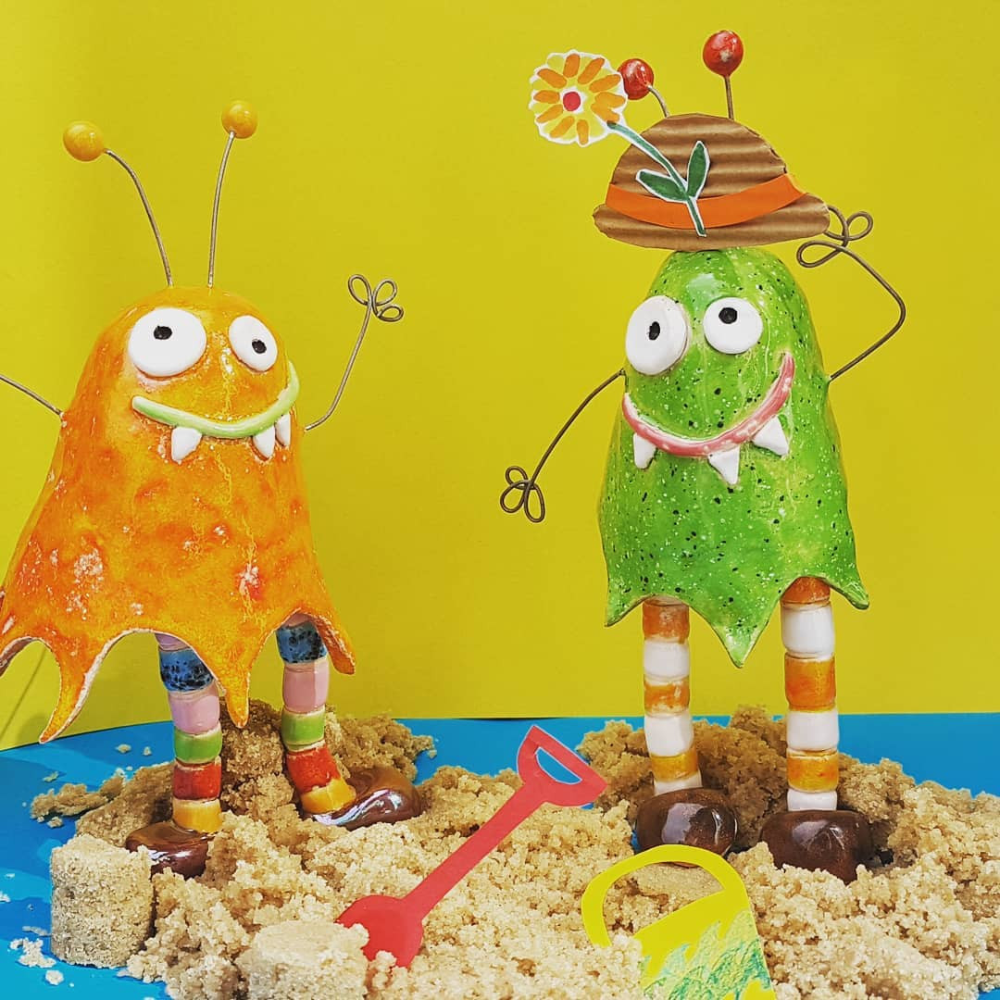
Doodlebox
Fun, inclusive art school classes for primary school children, run by a qualified art therapist, covering varied media and materials with an annual student exhibition. Doodle Bugs (5-8 years) and Doodle Buddies (9-12 years) run as separate age groups.
View full details →Wild by Nature Forest School
Family forest school sessions in a public park woodland, featuring wild crafts, rope swings and bridges, scavenger hunts, wild food activities and games for the whole family.
View full details →Dublin School of Music
One-to-one instrumental and vocal lessons (piano, guitar, violin, voice, flute, drums) for children and adults of all abilities, taught by concert performers and examiners, with exam preparation available.
View full details →Dublin School of Music
One-to-one instrumental and vocal lessons (piano, guitar, violin, voice, flute, drums) for children and adults of all abilities, taught by concert performers and examiners, with exam preparation available.
View full details →Dublin School of Music
One-to-one instrumental and vocal lessons (piano, guitar, violin, voice, flute, drums) for children and adults of all abilities, taught by concert performers and examiners; this location also offers Sunday lessons.
View full details →Lucan School of Music
Music school offering individual instrumental lessons for pre-school children through to advanced adult students, with a student-centred teaching approach and optional grade exam preparation.
View full details →

Baby Sensory South Dublin
Multi-sensory baby development classes for babies aged 0-13 months, featuring baby signing, music, light shows, bubbles and puppets to support bonding and early development.
View full details →Baby Sensory South Dublin
Multi-sensory baby development classes for babies aged 0-13 months, featuring baby signing, music, light shows, bubbles and puppets to support bonding and early development.
View full details →

Baby Sensory Dublin Southwest
Multi-sensory baby development classes for babies aged 0-13 months, featuring baby signing, music, light shows, bubbles and puppets to support bonding and early development.
View full details →Baby Sensory Dublin Southwest
Multi-sensory baby development classes for babies aged 0-13 months, featuring baby signing, music, light shows, bubbles and puppets to support bonding and early development.
View full details →Baby Sensory Dublin Southwest
Multi-sensory baby development classes for babies aged 0-13 months, featuring baby signing, music, light shows, bubbles and puppets to support bonding and early development.
View full details →Dimples Baby Massage
Certified baby massage course for pre-crawling babies aged six weeks to eight months, led by a certified infant massage instructor, followed by refreshments and social time for parents.
View full details →

Bloom Baby Classes (Dublin South)
Gentle multi-sensory baby development class combining original music, sensory play and bonding activities for younger babies, run in themed blocks throughout the year.
View full details →Play Cafe / Bumps and Babes
Community parent and toddler group offering informal weekly playtime and social contact for local parents, carers and young children in Kilternan.
View full details →Talls and Smalls
Community parent and toddler group offering informal weekly playtime and social contact for local parents, carers and young children, held at Urban Junction in Blackrock.
View full details →Baby Talk
Community parent and toddler group offering informal weekly playtime and social contact for local parents, carers and young children in Sandyford.
View full details →Honey Bee Hive
Community parent and toddler group offering informal weekly playtime and social contact for local parents, carers and young children in Stillorgan.
View full details →Wobblers and Toddlers
Community parent and toddler group offering informal weekly playtime and social contact for local parents, carers and young children, held at Balally Family Resource Centre, Sandyford.
View full details →Blackrock Library Parent and Toddler Group
Free community parent and toddler group hosted at Blackrock Library, offering weekly informal playtime and social contact for local parents, carers and young children.
View full details →Shankill Library Parent and Toddler Group
Free community parent and toddler group hosted at Shankill Library, offering weekly informal playtime and social contact for local parents, carers and young children.
View full details →Dalkey Library Parent and Toddler Group
Free community parent and toddler group hosted at Dalkey Library, offering weekly informal playtime and social contact for local parents, carers and young children.
View full details →Dundrum Library Parent and Toddler Group
Free community parent and toddler group hosted at Dundrum Library, offering weekly informal playtime and social contact for local parents, carers and young children.
View full details →Deansgrange Library Parent and Toddler Group
Free community parent and toddler group hosted at Deansgrange Library, offering weekly informal playtime and social contact for local parents, carers and young children.
View full details →Ballyogan Community Development Group Parent and Toddler Group
Free community parent and toddler group run by Ballyogan Community Development Group, offering weekly informal playtime and social contact for local parents, carers and young children.
View full details →Artzone
Themed art camp covering drawing, painting, craft and visual arts curriculum activities for primary school children, run by qualified art teachers over a full week. Age-graded groups run concurrently at this venue: Junior Art Camp (5-6 years), Intermediate Art Camp (7-8 years) and Senior Art Camp (9-13 years).
View full details →Kidspace Rathfarnham
Indoor multi-activity summer camp combining soft-play, arts and crafts, baking and games, run by childcare professionals in a supervised indoor playcentre, with lunch and snacks included.
View full details →Ballyboden St Endas GAA, Camogie & Ladies Football Club
Club-run Gaelic games summer camp (Campa Samhraidh) teaching football, hurling and camogie skills through coaching, small-sided games and team activities at one of Dublin's largest GAA clubs.
View full details →Leinster Rugby (Bank of Ireland Leinster Rugby Summer Camps)
IRFU-accredited rugby summer camp teaching passing, tackling, evasion and kicking skills to boys and girls, run by Leinster Rugby coaches with a kit pack included for full-week participants.
View full details →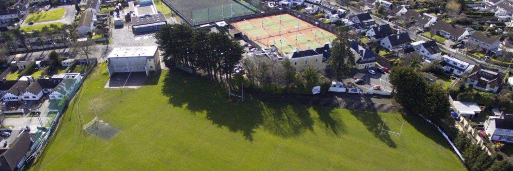
Kilmacud Crokes GAA Club
Club-run summer programme combining a multi-sports camp (GAA games, tennis, basketball, rounders and more) with dedicated GAA football, hurling and camogie camp weeks, open to members and non-members.
View full details →
Little Kickers Dublin & Meath
Structured pre-school football classes focused on building confidence, coordination and social skills in a fun, pressure-free environment, led by specially trained coaches.
View full details →Little Kickers Dublin & Meath
Structured pre-school football classes focused on building confidence, coordination and social skills in a fun, pressure-free environment, led by specially trained coaches.
View full details →Little Kickers Dublin & Meath
Structured pre-school football classes focused on building confidence, coordination and social skills in a fun, pressure-free environment, led by specially trained coaches.
View full details →First Swim
Purpose-built baby and toddler swim school with its own heated 33C pool, teaching water confidence and early swimming skills to babies and toddlers in a parent-and-child format.
View full details →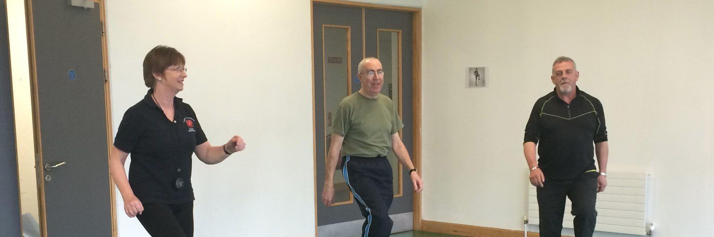
SCD Leisure Tallaght (Tallaght Leisure Centre)
Swimming programmes at Tallaght Leisure Centre's pool: supervised parent-and-toddler swim sessions using floats and toys for water confidence and play, and structured children's swimming lessons taught by qualified instructors for all ability levels, both with lifeguards on duty.
View full details →

South Dublin Dance Academy
Dance and stage-school classes for children, teens and adults, including Ballet (posture, coordination and technical foundation for all genres), Hip Hop (contemporary choreography and rhythm), Tap (rhythm and footwork), and Musical Theatre (singing, dancing and acting, culminating in an annual showcase performance).
View full details →
Kate Buckley School of Dance
Dance classes for children and young adults, including Ballet (posture, coordination and technique, with optional RAD/ISTD exams), Hip-Hop (school's own syllabus of routines and rhythm work) and Tap (ISTD technique across a wide age range, with optional exams).
View full details →

Junior Einsteins Science Club (South Dublin)
Hands-on after-school science club for early primary school children, using messy, high-energy experiments to build curiosity and early scientific thinking, run weekly during the school term inside the school. Separate weekly sessions run for Maternelle/Infant classes and Year 1 & Year 2 age groups.
View full details →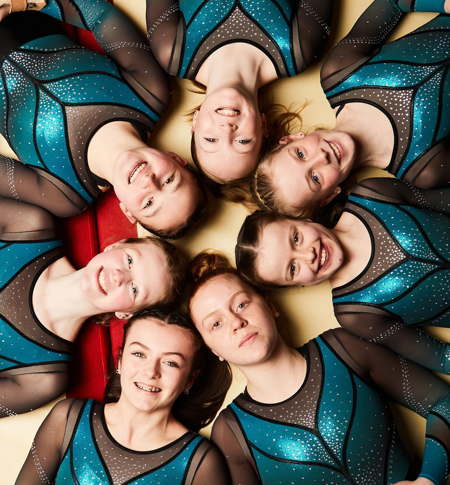
Trojan Gymnastic Club
Recreational gymnastics classes for children of all levels: Mini Rock 'n' Rollers and Rock 'n' Rollers introduce balance, coordination and basic shapes; Banana Splits builds bridge kick-overs, drop backs and round-offs; Twisters progresses towards walkovers, aerials and handsprings for those assessed as ready to advance.
View full details →

Dundrum South Dublin Athletic Club (DSD)
Ireland's largest athletics club, offering juvenile athletics training covering track & field, cross country and road running on its own 400m Mondo track and trail campus in the Dublin mountains foothills.
View full details →

Cuala GAA Club
Youth academy introducing young children to Gaelic football, hurling and camogie fundamentals in a fun, structured environment at one of Dublin's largest GAA clubs.
View full details →

De La Salle Palmerston FC (DLSP)
Mini rugby sections for boys and girls at one of Leinster's oldest and largest mini-youth clubs, with IRFU-certified, Garda-vetted coaches. Daisy Pickers introduces the very youngest children to basic movement and ball skills in a fun, non-contact format; Minis (Under 6 to Under 12) builds age-appropriate rugby skills and teamwork.
View full details →
Acting Classes Dublin and Online
Acting classes running in Dublin for over 15 years, taught by David Scott, covering the Applied Art of Acting through the Actors Wednesday Workshop, the Actors Friday Studio, and the Summer Week Intensive, plus online one-to-one training and corporate training. Website: www.davidscott.ie. Email: scottdavidmichael@gmail.com
View full details →
Acting Workshops Baldoyle D13
A no-nonsense approach to the art of acting. These workshops are designed for actors of all experience levels, including those with none who are keen to unleash their creative side, and cover character development, script analysis, and delivering an authentic performance for both stage and screen. In a fun, safe space, the workshops build communication skills, public speaking, self-confidence, self-esteem, and resilience, encouraging you to push out of your comfort zone and approach each session with an open mind.
View full details →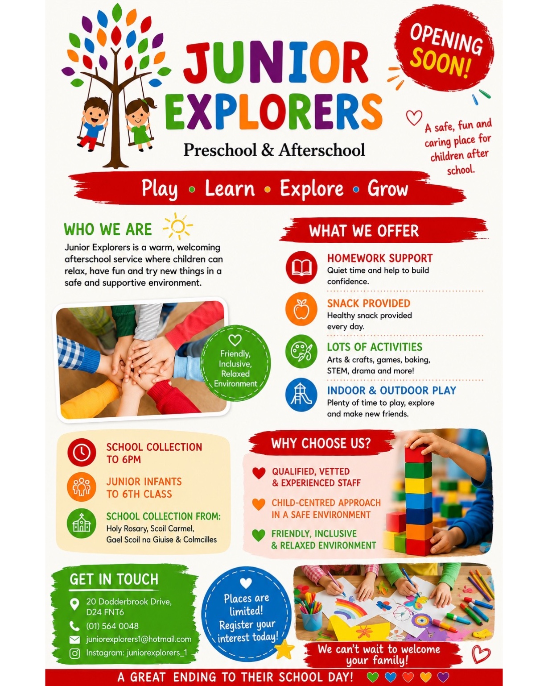

Afterschool service
Afterschool collection and care, homework support, healthy snack provided and lots of fun indoor and outdoor activities.
View full details →

Archaeology Camps – Booking Now
Our camps provide a fascinating alternative to sports-themed camps and other school break activities for children aged 7-12 years old. If your child is a curious explorer with a thirst for knowledge about the past, this is the camp for them! Running all year round, the camps introduce children to the mysteries and adventures of our past in a fun, practical and hands-on way that sparks their imagination.
View full details →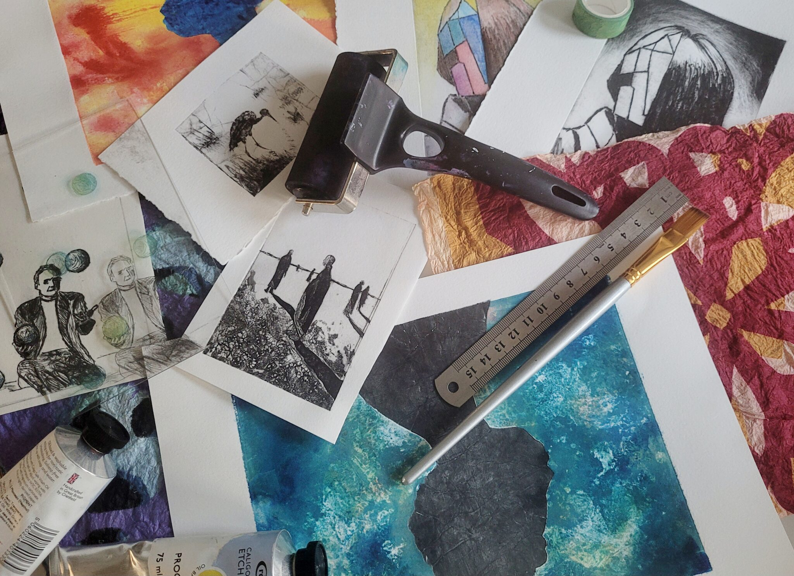
Art in Layers
Discover hands-on creativity at Art in Layers, a studio dedicated to layered and textured art. Enjoy unique workshops including Joomchi, Kinusaiga, printmaking with recycled milk cartons, botanical collage with pressed flowers, pop-up card making, and more.
View full details →

Babble & Bloom
Parent and baby early communication courses: learn evidence-based strategies to support your baby's communication from the very beginning. Created and led by a registered Speech & Language Therapist, you'll learn how to model baby signs, build connection and language through play, and turn everyday moments into communication opportunities - all through relaxed, play-based sessions. Suitable for babies and toddlers aged 6-14 months, Babble & Bloom offers a relaxed and supportive environment to connect with your baby, build confidence in supporting their development, and meet other parents at a similar stage. Join for six weeks of play and practical learning that will help you nurture your baby's communication skills in everyday moments. Please note: while Babble & Bloom is created and led by a Speech & Language Therapist, it is an educational class rather than a Speech & Language Therapy service. Participation does not constitute assessment or therapy, and the course is not a substitute for speech and language assessment or intervention where needed.
View full details →

Baby & Me Ballet Dublin
A gentle introduction to ballet for little ones aged 14-30 months and 2.5-3.5 years, and their grown-ups, through dancing, singing and playing together.
View full details →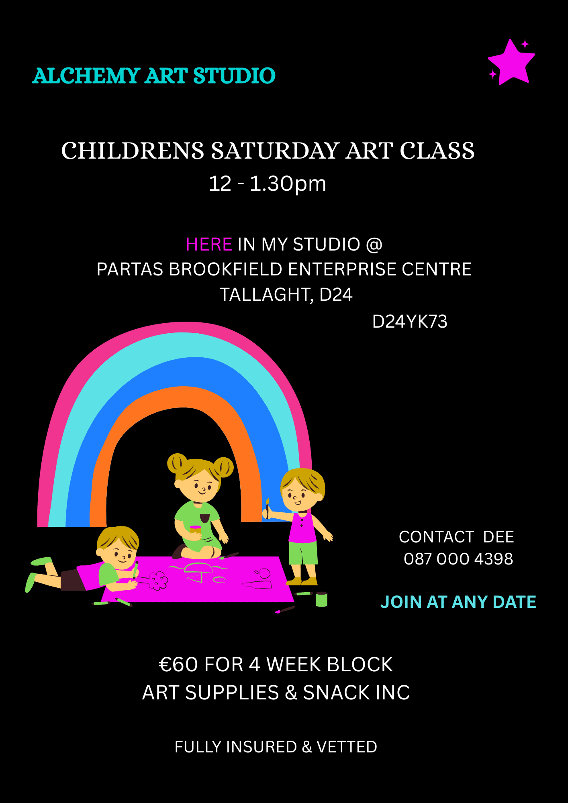

CHILDRENS ART CLASS SATURDAY
Children's art classes in my studio in Tallaght, Dublin 24. A 4-week course for children aged 5-11, 12pm-1.30pm, €60, all materials provided, in a fun, free-flow art and craft environment.
View full details →
Clontarf Children’s Choir / Pre Instrumental Music
McDermott Music is a vibrant music education programme based in Clontarf, Dublin, offering engaging, high-quality classes for children of all ages. Founded by qualified primary teacher and music educator Lauraine McDermott , McDermott Music provides Kodály-inspired early years music classes, the Clontarf Children’s Choir (ages 7–12) and the Clontarf Youth Choir (ages 12–18). At the heart of McDermott Music is the belief that every child deserves the opportunity to experience the joy of music in a welcoming, supportive environment. There are no auditions- just a focus on building confidence, developing musicianship, creating lasting friendships and fostering a lifelong love of music. Through inspiring performances, exciting collaborations and a strong sense of community, children grow not only as musicians but as confident, creative young people. Sing. Learn. Belong.
View full details →I Made It – T-Shirt Painting Workshop
Discover the joy of T-shirt painting. Our workshops offer a vibrant space to express your creativity and design your own custom tees. All skill levels welcome.
View full details →

Laola Movement: Outdoor Pilates classes & retreats in Malahide area
LAOLA Movement was founded in 2023 by Taty, a German-born, Ireland-based certified Pilates instructor with a love for movement, connection, and the outdoors. Her mission is to help people feel stronger, more flexible, and ultimately happier in their own skin through joyful, accessible Pilates classes and unforgettable experiences in nature. LAOLA's name is inspired by the German word for 'Mexican wave' (La Ola), a symbol of community, rhythm, and spine mobility, the core of Pilates, reflecting the brand's philosophy of moving together, celebrating our bodies, and riding life's waves on the mat and beyond. What began as a handful of outdoor classes has grown into a movement within the local community. Today, LAOLA offers a mix of outdoor group classes in summer, online sessions in winter, and one-of-a-kind Pilates events that bring like-minded people together, from sea swims to paddleboarding and even Pilates with alpacas. Taty is YMCA accredited through Reformation Studio (Dublin), with additional qualifications in Ante & Postnatal Pilates (APPI, London 2024) and an ongoing focus on women's health and the transitions women go through across life stages. Every class is led by her personally, blending technical precision with fun and human connection. Whether you're a curious beginner or a seasoned mover, LAOLA Movement welcomes all genders and levels, creating a space that's equal parts grounding and uplifting, rooted in movement, laughter, and community care. Outdoor events include Outdoor Pilates & Sea Swims (every Monday at 7pm), Beach Pilates, Sea Swim & Sauna, Sunset Pilates & Stand-Up Paddleboarding, Hidden Reset (a 3-hour mini retreat with Pilates, breathwork, nourishing snacks, local wine, and alpacas), and 'Pilates?! I thought you said pies and lattes' (a morning event with Pilates followed by a light breakfast and pastries). For the latest class schedule, follow @laola_movement on Instagram. Booking is via Wunderbook, email (laola.movement@gmail.com), or Linktree. Testimonials: Alison says, 'I love Taty's classes. She brings energy, encouragement and fun to each class. Taty offers regular slots as well as pop-up activities with a social element and outdoor classes on Paddy's Hill and the beach. This is a welcoming Pilates community and I strongly recommend it.' Roshni says, 'Signed up to Taty's 6-week Pilates programme at the beginning of January. The best first decision I made in 2024. Taty is excellent, she listens to understand your personal goals. Her sessions are well paced, fun and as challenging as you want them to be.' Emma says, 'Completed two courses now with Taty and couldn't recommend her more. Amazing instructor and classes are fun and rewarding.' Sarah says, 'The best Pilates I have done to date! Taty kept it so interesting, and I learned so much about stretch and movement.' More testimonials can be found on the @laola_movement Instagram highlights.
View full details →Malahide Musical & Dramatic Society
Malahide Musical & Dramatic Society was established in 1976 when a number of people from Malahide Sports & Recreation Committee, who were lovers of music, came together to create what is now the MMDS that we know and love. The very first musical production, The Quaker Girl, took to the same stage we call home all these years later, in Malahide Community School in November of 1977. MMDS has continued to flourish since then, with musicals, plays and various concerts and performances every year, and an ever-growing group of members.
View full details →

Newpark Academy Jazz Department
The Jazz Department at Newpark Academy of Music is a vibrant community for aspiring and experienced musicians who want to explore the rich tradition and evolving art of jazz. Through ensemble performance, improvisation, theory, ear training, and one-on-one instruction, students develop the skills, creativity, and confidence needed to grow as artists. The programme welcomes instrumentalists and vocalists of all backgrounds, offering opportunities to collaborate, perform live, and learn from experienced educators and working musicians. From classic swing and bebop to contemporary jazz and fusion, students engage with a wide range of styles while building a strong musical foundation. Whether you're looking to sharpen your improvisation skills, join a jazz ensemble, or deepen your understanding of the genre, the Newpark Academy of Music Jazz Department provides an inspiring environment where musicians can learn, create, and connect.
View full details →Piano Lessons
Piano lessons for all ages and abilities in Harold’s Cross, Dublin. Lessons are tailored to each student’s goals and can include piano performance, music theory, Leaving Certificate Music preparation, and piano exam preparation. Beginners through to advanced students are welcome in a supportive and encouraging learning environment. I have experience working with students with additional needs and strive to make lessons accessible and enjoyable for every learner. If you have any questions about your specific requirements, please feel free to get in touch to discuss how lessons can be adapted to suit your needs. Qualifications: MMus, BMus, LRSM. Lessons are available in person in Harold’s Cross, with online lessons also available where suitable.
View full details →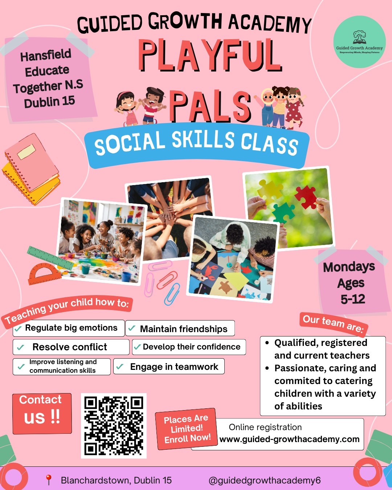
Small Group Tuition Classes
Guided Growth Academy is a small Irish-owned tuition business run by qualified primary school teachers. We cater for children of all primary school ages, from 5 to 12 years, from a variety of backgrounds, including children with additional needs. Services include: Social Skills Class, supporting children with confidence building, friendship skills, emotional regulation and teamwork; Easter/Summer Camps, combining fun academic learning with arts & crafts and outdoor activities; and Events, run for both children and their parents for fun and learning together.
View full details →Stay at home Irish Summer College
Looking for a fun way to boost your child's Irish this summer? SárGhael is a South Dublin-based Irish summer college offering courses for 1st & 2nd years in IADT, and courses for 3rd-6th class in Clonkeen College. We focus on real Irish in action, helping students build confidence through speaking, sports, music, and making memories with friends - showing them that Irish isn't just for the classroom, it's a living, vibrant language! Find out more at SárGhael.ie
View full details →
Taekwon-Do for Kids Ages 6-12
Kids Taekwon-Do based in St Joseph's Primary School, Fairview, Dublin. Mondays & Wednesdays, 4:30-5:30pm. Great for building confidence, discipline & focus, physical fitness, and making friends. Tolka TKD encourages a friendly environment where children can express themselves and join a great team. The lead instructor is Lee Kavanagh (3rd Dan Black Belt), who is also a primary school teacher, has represented Team Ireland at World and European Championships, and has 17+ years' experience. The club is a member of the Irish Taekwon-Do Association (ITA), the National Association for the International Taekwon-Do Federation (ITF) in Ireland.
View full details →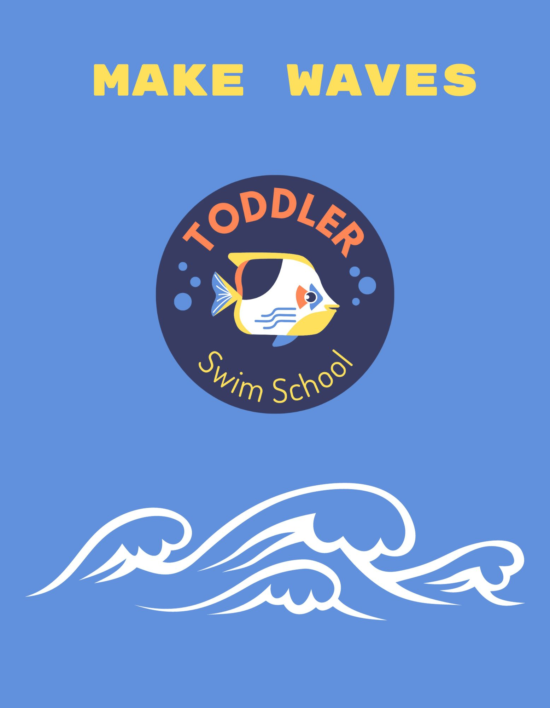

Toddler Swim School
Our toddler swimming lessons are for kids aged 1 yr to 4 yrs old. We have great success with teaching young kids a brilliant life skill through our fun swimming classes, growing their confidence in the water. We help kids to develop their swimming skills at a pace that suits them with the aim of having them swimming independently before they begin primary school but many achieve this way in advance of that thanks to our fun and encouraging approach.
View full details →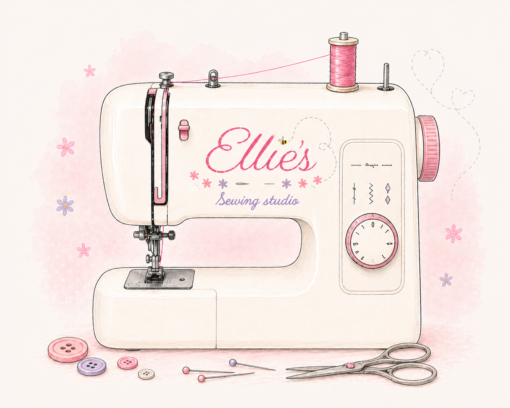

WEEKLY SEWING CLASSES
Welcome to Ellie's Sewing Studio. Based in South Dublin, I run small, friendly sewing classes for beginners and improvers, following the school year from September to June. Each 2-hour class gives you plenty of time to settle in, get creative and really enjoy the process. With small group sizes, you'll get lots of personal guidance in a relaxed, supportive atmosphere. Whether you're starting from scratch or building on what you already know, you'll learn how to make, mend, and restyle your clothes at your own pace. It's a lovely way to switch off, learn something new and take a bit of time for yourself each week. You'll need to bring your own sewing machine and materials for your projects. If you don't have a machine yet, rentals are available (subject to availability). For more information or to book your place, just get in touch. Looking forward to sewing with you, Ellie! Locations & times: Dundrum, Taney Parish Centre, Dublin 14 (Tuesday 9.30-11.30am, Tuesday 7-9pm, Wednesday 7-9pm, Thursday 9.30-11.30am); Knocklyon, Iona Pastoral Centre, Dublin 16 (Wednesday 9.30-11.30am). Cost: 3 weeks (consecutive) €120, 6 weeks (consecutive) €200.
View full details →Artane & Coolock Resource Centre- Toddler Group and More
Artane Coolock Family Resource Centre offers great groups and classes for families. Check out some of the groups below. Location: Artane Coolock Family Resource Centre, 55 Gracefield Road, Artane, Dublin. Contact: comdevworker@artanefrc.com. Parent & Toddler Group: parents, childminders, grandparents and guardians are welcome to attend a fun morning for the kiddies - babies up to 5 years will have fun with plenty of toys and making new friends. Time: every Wednesday, 9.30-11am, throughout the year. Cost: €3 per family. After School Activities: arts/crafts and Lego afterschool facilities are on offer - reach out to find out more. Cost: varies.
View full details →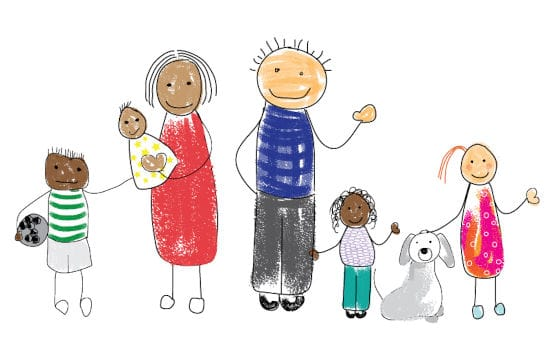
Aster Balbriggan
Aster offers a number of classes to support children and families. Classes run during the school term, but the resource centre is open all year. Parent Baby/Toddler Group (0-3 years): drop in any day to meet new people and let your little one play - lots of toys for the little ones and tea/coffee for the adults. Location: 1 St George's Square, Balbriggan, Co. Dublin. Time: every Tuesday, 10.00-12.00 (during term time). Cost: €2 per family. Pre-Teen Hangout (8-10 years). Location: 1 St George's Square, Balbriggan, Co. Dublin. Time: every Wednesday, 4.00-5.30. Cost: €5 yearly fee - you must register for the pre-teen hangout. Baby Massage Classes: the centre offers 6-week baby massage classes multiple times a year. Keep an eye on their social media to avail of these heavily discounted classes, usually a €5 registration fee.
View full details →Baby & Me Ballet Dublin
Explore ballet through dance, music & play while bonding, socialising & making memories. Your little one will develop motor skills, coordination & balance in a playful environment. For babies and toddlers aged 14-30 months and their parents. Find us in the Fingal Liam Rodgers Centre, Drinan, Swords. Classes are 45 minutes and run on Tuesdays and Saturdays. Keep up to date on our social media.
View full details →
Baby Health
Baby massage classes taught by an internationally certified instructor. All parents/caregivers are welcome. Each session is 1 hour. Classes in person in Dublin or online, available in English, Spanish or Italian. Baby massage is more than just a soothing practice, it is a powerful tool that nurtures a child's emotional and physical development while strengthening the bond between you as a parent and your little one. It supports relaxation and brain development, soothes teething pain, encourages better sleep, eases digestion and colic, boosts muscle and joint strength, and improves flexibility, circulation and overall physical health.
View full details →
Baby Massage & First Aid
Calming Little Feet offers a 6-week course where you will learn infant massage and the benefits of baby massage, which builds bonding and connection, in a supportive, non-judgemental environment. Gain useful tips and support along the way from a paediatric nurse and mam to 4 children. Everything is provided, just come along with your baby. There are also monthly Daddy & Baby classes on a Saturday, for dads to enjoy some bonding time with baby, and monthly parent/grandparent first aid courses.
View full details →

Baby Sensory Ireland
An educational, interactive and developmental programme which will help your baby learn and develop important skills. Classes are built on your baby's natural play-rest-play cycle to ensure they are not overstimulated. Classes are located in multiple locations across Ireland - please see the website for dates and times. Classes are also run during school term time. An ideal place to meet new parents, ask questions, and share ideas, experiences and memories together.
View full details →Balbriggan - Lego-Based Therapy Groups
Unlock the power of play with LEGO-Based Therapy Groups. Is your child on the autism spectrum, or navigating challenges like ADHD, anxiety, or communication difficulties? Imagine a space where they can thrive, building essential social and communication skills through the magic of LEGO. Our LEGO-Based Therapy Groups, designed specifically for neurodiverse children, provide a supportive, fun-filled environment where your child can learn teamwork and turn-taking, enhance listening and communication skills, develop confidence while making friends, and practise real-world problem-solving. Facilitated by highly qualified specialists, a Psychologist/Play Therapist and a CBT Psychotherapist, these sessions are tailored to help children aged 6-12 years build confidence, improve social skills, and have fun while doing so. Programme details: Location: Balbriggan Clubs Community Centre, Co. Dublin. Start date: Monday, 20th January 2025. Flexible trial: try 2 sessions before committing to the full programme. Small group sizes: only 8-10 children per group. Parents value having dedicated time for themselves while their child learns and grows, a safe, welcoming space led by compassionate professionals, and early-bird discounts with flexible payment options. Spaces are limited and demand is high - reserve your spot with a €130 deposit (including trial sessions), or save more with the early-bird full-term discount. Call 089 433 7899 or email brickbuddieslego@gmail.com. Early registration ends 20th December 2024.
View full details →Balbriggan Library
Balbriggan Library offers fantastic groups for babies and kids. Activities include Family Story Time, Young Adults Book Club, and Youth Theatre. Sign up to their newsletter to see their monthly activities, especially around school holidays when there are free classes and activities for kids.
View full details →Balbriggan baby and toddler group
For babies and toddlers aged 0-5, all caregivers welcome. 10.30-11.30am every Friday in Hamilton Hall, Balbriggan Library building. Run by Cuidiú volunteers. Operates during school holidays.
View full details →
Baldoyle Toddler Group and Breastfeeding Group
Baldoyle Family Resource Centre offers great groups for parents. Baldoyle Parent, Toddler and Baby Group hosts friendly sessions for parents, grandparents or carers to socialise over a cuppa and biscuits while the babies and toddlers play with a great variety of toys in our cosy, welcoming room. The group welcomes families from the wider area who might not have any connections to the community. Location: Baldoyle Family Resource Centre, Grange Road, D13 TE80. Time: every Monday, 11.30am-12.45pm (during term time). Cost: €3 per family. Contact: reception@bfrs.ie. Keep an eye on social media for when the group starts back up after school holidays, as it does not always align with term time. Baldoyle Breastfeeding Group: all are welcome, whether pregnant, nursing a newborn or an older child, pumping, or combination feeding - come for support or just for the tea and chats. Location: Baldoyle Family Resource Centre, Grange Road, D13 TE80. Time: every Monday, 9.45-11.15am. Cost: free for Cuidiú members or €3 for non-members.
View full details →

Ballsbridge Baby & Toddler Group - Pembroke Library
Pembroke Library toddler group offers stories, sing-songs and places toys in a circle on the floor to encourage children to socialise under the supervision of their parent or guardian. Location: Pembroke Library, Anglesea Road, Dublin 4. Time: every Thursday morning, 10.30-11.30am. Cost: free. Contact: 01 222 8450 / pembrokelibrary@dublincity.ie
View full details →

Ballyfermot Library - Toddler Group / Book Clubs and More
Ballyfermot Library offers lots of activities and groups for families. Location: Ballyfermot Library, Ballyfermot Road, Dublin 10. Cost: free. Contact: 01 222 8422 / ballyfermotlibrary@dublincity.ie. Parent and Toddler Group: find the group in the Junior Library. Come along to a relaxed toddler morning every Monday in Ballyfermot Library to meet up with other families in the area - we provide the space and toys, and all parents and caregivers with babies and toddlers are welcome, no need to book. Time: Monday morning, 10.30-11.30am. Children's Story Time: the library staff will be reading some lovely stories for the kids, so come along to relax and listen. Time: every Wednesday at 2.30pm. Junior Book Club: aimed at children aged 9 to 12, and all are welcome - please contact the library if you are interested in joining. Time: last Monday of the month at 4pm. Lego Playtime: a great way for kids to meet new friends while building Lego. Time: every Saturday at 10.30am. Arts and Crafts Time: perfect for kids 6 years and over, a chance to use craft materials to let their imagination go wild. Time: first Tuesday of the month at 3pm.
View full details →

Ballymun Library
Ballymun Library offers fantastic groups for babies and kids. Baby Book Club: every Monday at 10am, for newborns to 2-year-olds. Toddler Book Club: every Thursday from 10-10.45am, suitable for children aged 2 years to preschool age. Both clubs include stories, activities and toys (note: they take a break during July and August). Ballymun Games Club takes place on Mondays from 5-6.20pm and is open to library members aged 10-16.
View full details →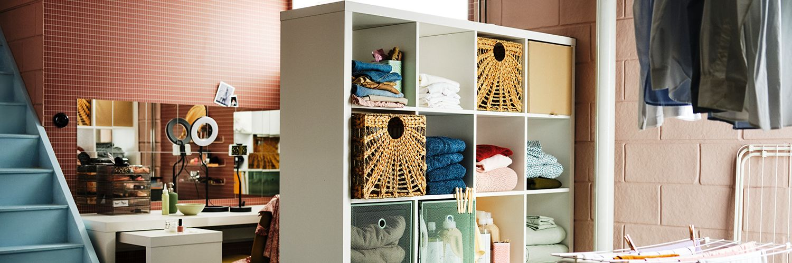
Ballymun Parent and Toddler Music Group - IKEA
Ballymun Parent, Baby and Toddler Music Group is brought to you by IKEA. They hold two separate sessions based on your child's age, as a fun way to interact and inspire your child through play. Places are limited and free to IKEA Family members (you can sign up to the IKEA Family account for free). These spaces book up fast, so make sure you grab them if you want to attend. Location: IKEA, St Margaret's Road, Ballymun, Dublin 11, D11 FW18 (the back of IKEA Restaurant). Time: first Tuesday of every month - Toddler Music Class (walkers to 5 years), 10-11am; Baby Music Class (newborn to walker), 11am-12pm. Cost: free.
View full details →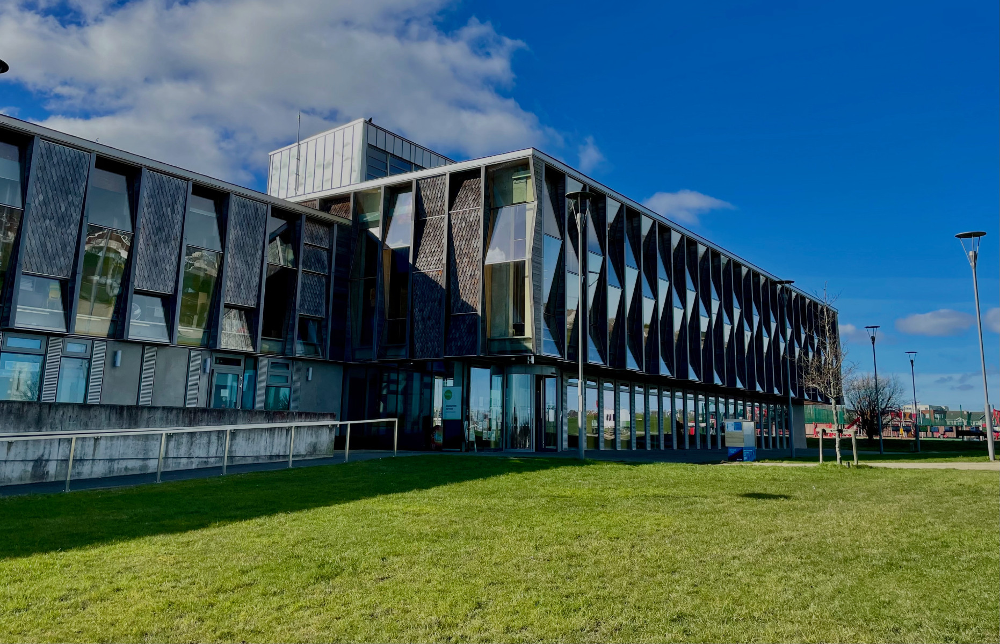
Ballyogan Parent, Baby & Toddler Group
Ballyogan Parent, Baby and Toddler Group is hosted by Ballyogan Family Resource Centre. This is a drop-in baby and toddler group, open to mums, dads, grandparents and all caregivers to pop along and meet some new people. Lots of books and toys for the kiddies to enjoy too. Location: St Brigid's Parish Centre, Stillorgan. Time: every Thursday, 10.30am-12pm (during school term time). Cost: €3 per family (suggested donation). Contact: (01) 2953219.
View full details →Bayside Parent and Toddler Group - Cuidiu
Bayside Parent and Toddler Group is conveniently located in Bayside Community, perfect for all parents, childminders or caregivers. It's a great way for your little one to have some free play fun and practise action songs, while you enjoy a tea/coffee and some biscuits. Location: Bayside Community Centre. Day/Time: every Thursday during school terms, 9.30-11.30am. Cost: €3 for Cuidiú members / €5 for non-members. Cuidiú is a charity and runs off donations - you can become a Cuidiú member for €25 per year (plus PayPal fees), or a half-year membership for €13. Membership includes a discount on the weekly parent and toddler groups and other Cuidiú activities and events, discounts in a wide range of shops/businesses, and, after 6 months, the option to apply for training sessions including Antenatal Teaching, Breastfeeding Counsellor, or Parent Supporter Training - a good option if you want to train up in something new and have a side job or switch careers.
View full details →Blackrock Library Parent, Baby & Toddler Group
Blackrock Library Parent, Baby and Toddler Group in Dublin. Join us for a morning of parent and toddler fun, suitable for 0-3 years with parents/minders. Booking essential - contact Blackrock Library for more information. Location: Blackrock Library. Time: every Friday at 10.30am. Cost: free per family. Contact: libraries@dlrcoco.ie
View full details →Blackrock Parent, Baby & Toddler Group
Blackrock Parent, Baby and Toddler Group is also known as the Talls and Smalls playgroup. Talls & Smalls started in the summer of 2021 and is a space for parents/guardians and their babies or toddlers, aged 0-3 years, to play and chat together. Tea/coffee is provided too. Location: (downstairs) Urban Junction, 42 Main St, Blackrock, Co. Dublin, A94 Y3X7. Time: every Wednesday afternoon, 3-4.30pm, throughout the year. Cost: €2 per child (suggested donation). Contact: Belinda at belinda.briggs@urban-junction.com or 085 7739723.
View full details →
Blanchardstown Library
Blanchardstown Library offers fantastic groups for babies and kids. Baby Book Club (0-4 years): 3rd Tuesday of every month, 11.30am. Parent & Toddler Group (0-5 years): every Thursday, 11am-12.30pm. Breastfeeding Support Group: every Wednesday, 11am-1pm. Check out their social media, as you might even get Toddler Time with Sarah Sparkles.
View full details →Blanchardstown Parent and Toddler Group
Blanchardstown Parent and Toddler Group is brought to you by Blanchardstown Centre, offering free Sillybilly Music & Story classes for babies and toddlers. The classes introduce a love of music, songs & rhythm, instruments, stories and imagination to your child, building their confidence for life. If you haven't been before, come along with your little one for some great fun, music, dancing and singing - you'll love it. Location: outside the Odeon, Blanchardstown Centre, Blanchardstown Rd S, Blanchardstown, Dublin. Time: 10am and 11am every Wednesday (during term time). Cost: free.
View full details →Butterfield Wellness Learn to Swim Classes for Kids
Our kids' classes are perfect for complete beginners to improvers. Classes are small (8:1 teaching ratio) and taught by experienced teachers, ideal for little ones new to classes or looking to gain more confidence. We teach using fun activities, building confidence to help them learn to love the water and develop into competent, happy little swimmers. We teach from age 4 up. Weekly 30-minute classes, 10 weeks at €130, with a 5% sibling discount. To register your interest, visit our website. Camps are also available.
View full details →Bí ag Imirt
This is a shared class for parents/guardians and children. A variety of activities are set up and the children are free to choose and engage - there is some messy play. All the fun, without the clean-up. Upcoming classes in Balbriggan (Meals on Wheels Hall), Hampton Street, K32 P793, March 15th at 2.30pm. Find us on Instagram or Facebook to check for upcoming classes.
View full details →
Cabra Library - Toddler Group / Book Clubs and More
Cabra Library offers lots of activities and groups for families. Location: Cabra Library, Navan Road, Dublin 7. Cost: free. Contact: 01 222 8310 / cabralibrary@dublincity.ie. Parent and Toddler Group: an opportunity for little ones to socialise and play, and for their carers to meet with others from the local area - all are welcome to drop in. Time: Mondays and Thursdays, 10.30am-12pm. Children's Story Time: the library staff will be reading some lovely stories for the kids, so come along to relax and listen - perfect for ages 3-8, all welcome. Time: every Wednesday at 3.15pm. Lego Playtime: a great way for kids to meet new friends while building Lego, suitable for children aged 5-10 (children under 9 must be accompanied by an adult at all times, and parents/guardians must ensure all children are signed in on the attendance sheet before the event commences). Time: Tuesdays, 3-4pm.
View full details →Castleknock Parent, Baby & Toddler Group
Castleknock Parent, Baby and Toddler Group in Dublin. It's a great way for toddlers to interact with each other and for parents/guardians to grab a coffee and meet new people. Registration essential (register at reception). Location: Castleknock Community Centre, Laurel Lodge Road, Dublin 15. Time: every Monday & Friday, 9am-12pm (during school term). Cost: €2 per session. Contact: castleknockcommunitycentre@gmail.com
View full details →

Central Library Dublin 1
Central Library offers a variety of classes for babies and kids. Location: Central Library, Ilac Centre, Dublin 1. Cost: free. Contact: 01 222 8300 / centrallibrary@dublincity.ie. Toddler Group: listen to stories, music and have some fun, and you're welcome to stay in the library afterwards to mingle and get to know other parents. Suitable for ages 0-4 years. Time: Monday and Tuesday mornings at 11am (not operating in July and August). Lego Club: suitable for 6-12 year olds, no need to book, just drop by. Time: last Saturday of every month, 10.30-11.45am.
View full details →

ClapHandies PlayLabs - Dublin
The PlayLabs are weekly developmental sensory play classes for babies, wobblers and/or toddlers. The classes are designed to provide a fun and engaging environment for both children and adults! With music, learning, social interaction, and sensory play, you and your little one are sure to have a great time together. They are also a chance for children to socialise with children of their own age, while offering parents/caregivers the opportunity to get to know others in their area too. Baby PlayLabs (6 weeks - 7 months) - 55 minute class duration Wobbler PlayLabs (8 months - 15 months) - 50 minute class duration Toddler PlayLabs (16 months - 3.5 years) - 50 minute class duration We typically run toddlers at 9.45am/10am, wobblers at 10.45am/11am and babies at 11.45am/12pm - venue dependent. You can check out more information about our classes on our website: https://site.claphandies.com/ In addition to your term's booking, we also offer you 3 months free access to ClapHandies at Home which is an online resource filled with hours of follow-along music and guided playtime videos for you and your little ones to enjoy at home. So if you miss any of your classes during a term, you can run your own PlayLab at home or just tune in to have some extra fun during the week. If you are signing up for our Baby PlayLabs in particular, we also provide you with a link to our informative Baby Massage e-manual so you can continue practising the massage strokes at home.
View full details →

Claphandies
ClapHandies PlayLabs offer babies, wobblers and toddlers (birth to 3.5 years) a chance to play, meet other children and develop new skills. Sessions include music, song and rhyme time, and a class teaching the core baby massage techniques. We also focus on gross motor skills and language development, teaching baby sign language. The weekly classes offer a wide variety of engaging experiences tailored to the needs of each age group, and are also a chance for children to socialise with children of their own age, while giving parents/caregivers the opportunity to get to know others in their area too. Each term runs for 7 weeks, with a 50% sibling discount. Classes are offered in various locations across Ireland.
View full details →
Clondalkin Library Baby and Toddler Group
Clondalkin Library Baby and Toddler Group meets every Tuesday from 10-11.30am. It is self-led: Clondalkin Library provides the space and toys, you provide the playtime. There is no cost to attend. Keep an eye on the library's social media for fun family activities like story time, baby reflexology and more.
View full details →
Clondalkin Parent & Toddler Group
Clondalkin Quarryvale Parent and Toddler Group in Dublin is hosted by Quarryvale Family Resource Centre. The group is known as the 'Little Rascals'. No need to register in advance, just pop on down and meet other parents/grandparents and carers with their babies and kids. Plenty of fun and games for the children, and all the materials are provided - snacks included. Location: Quarryvale Community & Youth Centre, Greenfort Gardens, Dublin. Time: every Wednesday, 10am-11.30am (during term time). Cost: €3 per family. Contact: +353 1 626 9151.
View full details →Clondalkin Parent and Toddler Group
Clondalkin/Knockmitten Parent, Baby and Toddler Group, Dublin. Also known as the 2S Group, this is for preschool-aged kids to have free time to play, enjoy messy/sensory play and do some arts and crafts, while parents can mingle and chat to feel less alone in parenting. Location: Knockmitten Community Centre, Monksfield Lawns, Clondalkin, Dublin. Day/Time: every Monday, 10am-11.30pm (during school term time). Cost: €2.50 per family.
View full details →Clondalkin Parent, Baby and Toddler Group
Clondalkin Parent, Baby and Toddler Group, Dublin. The Bawnogue Parent, Baby and Toddler Group is growing from strength to strength each week - all welcome, come join us on Friday to meet new people, have a chat and let the kids play. Location: Bawnogue Community Centre, Bawnogue Rd, Clondalkin, Dublin 22. Day/Time: every Friday, 9.30am-11pm (during school term time). Cost: €3 per family.
View full details →Clonsilla Parent, Baby and Toddler Group
Clonsilla Parent and Toddler Group: friendly sessions for parents, grandparents & carers to socialise and meet new people in the community while your babies & toddlers play and make new friends too. New and past families are all welcome to join the group at any time. Location: Phibblestown Community Centre, Phibblestown Road, Dublin. Time: every Thursday, 9.30-11am (during term time). Cost: €4 per family. Contact: berniesmith@gmail.com. Keep an eye on social media for when the group starts back up after school holidays, as it may not always align with term time.
View full details →Clonsilla/Lucan Parent and Toddler Group
Clonsilla Parent, Baby and Toddler Group is hosted in St Mochta's Parish Centre (Luttrelstown), welcoming all parents, grandparents and childminders with babies and children under 3 years to pop along to their playgroup for a bit of fun. Activities include jigsaws, books and arts & crafts tables, toys for floor play, and music & dance, with a selection of tea, coffee, juice, water and biscuits available. There is an active Facebook group for this group. Location: St Mochta's Church, Porterstown Road, D15 V044. Time: every Tuesday, 10am-12pm (during term time). Cost: €5 per family. Contact: maryoriordan@hotmail.com
View full details →Colour and Art Kids classes Balbriggan
Colour and Art Kids caters for children aged between 5-12 years. All aspects of creativity are supported, and each child's individual interests are developed through expressive art. Held at Castlelands Community Centre: Wednesday (5-7 years), 4.30-5.30pm; Wednesday (8-12 years), 5.30-6.30pm. New term starting in September.
View full details →

Coolock Library - Toddler Group/Games Night
Coolock Library offers a variety of classes for babies and kids. Toddler Group: join us for playtime and story time, new members always welcome. Time: every Monday and Thursday, 10.30-11.30am. Games Night at Coolock Library: ages 10-14, booking essential. Time: every Wednesday, 6-7.30pm. Family Movie: check dates, usually one Saturday within the month. Quiet Time: Coolock Library is introducing quiet time on Monday nights from 6-8pm in the children's library, creating a calm and quiet environment. Sensory toys will be available, as will ear defenders if needed, and the sensory cubbie will be available to use. Lighting will be dimmed, phones will be turned off, people will be encouraged to keep their voices down and take mobile calls outside, and customers with extra sensory needs will be prioritised.
View full details →Cuidiú DNW - Baby Language Club @ D15
Join Clara for the Baby Language Club, sharing songs and rhymes as Gaeilge for babies and toddlers. Fridays at 11am. New location: Ongar Community Centre, D15. 6-week course: €40 for Cuidiú members, €50 for non-members, €10 for additional siblings, or €10 drop-in if spaces are available. Perfect for babies and toddlers up to preschoolers (and the parents might find themselves learning new songs too!). Cuidiú is a nationwide parent support charity, and the Dublin North West branch operates in Dublin 7/9/11/15.
View full details →Cúl Cubs
Cúl Cubs | Ages 2–4 | Trinity Comprehensive, Ballymun. GAA games, skills & beginner Gaeilge through fun & play!
View full details →Dad and Baby Massage with Melanie Murphy Infant Massage
In-person 5-week Baby Massage Group at The Community Cottage, Lusk, Co. Dublin, K45 VE83. Fridays 10-11.30am. Dates: 8th, 15th, 22nd, 29th November and 6th December 2024. Partners welcome at group. Open to parents and their babies from newborn up to 11 months (pre-crawlers).
View full details →Dizzy Footwork (Dance, Drama & Acrobatic)
Dizzy Footwork Dance Academy offers exciting, professional classes in drama, lyrical dance, hip hop dance, and acrobatics for children and teenagers of all ages and abilities. The academy is led by highly experienced, passionate staff dedicated to helping every student grow in confidence, creativity, performance, fitness, and teamwork within a fun and supportive environment. Classes are grouped by age, allowing students to learn alongside their peers while developing new skills, friendships, and self-expression. Class schedule: Tiny Tots Preschool (age 3): Monday Drama 3:45-4:45pm, Friday Hip Hop Dance 3:45-4:45pm, Friday Acrobatics 4:45-5:45pm. Mini Movers (ages 4-7): Monday Drama 3:45-4:45pm, Monday Lyrical Dance 5:45-6:45pm, Friday Hip Hop Dance 3:45-4:45pm, Friday Acrobatics 4:45-5:45pm. Crazy Crew (ages 8-12): Monday Drama 4:45-5:45pm, Monday Lyrical Dance 5:45-6:45pm, Friday Hip Hop Dance 4:45-5:45pm, Friday Acrobatics 5:45-6:45pm. Little Legends (ages 13-18+): Monday Drama 5:45-6:45pm, Monday Lyrical Dance 6:45-7:45pm, Friday Hip Hop Dance 5:45-6:45pm, Friday Acrobatics 6:45-7:45pm. To register, text your child's full name, age, and the class you'd like to join to 0831385263.
View full details →Do Your Dance Kids - Mountanville
Do Your Dance Kids is for older kids aged 7+ who are ready to take their dance skills to the next level. Classes are packed with exciting choreographed dances, dance techniques, and flexibility exercises in a fun-filled, one-hour session, exploring a variety of dance genres from hip-hop and jazz to contemporary. All children are welcome in a completely inclusive environment that celebrates individuality and creativity - if your child has additional needs, just let us know before class and we'll make sure they have the best experience possible. Location: the GP Room at Mount Anville Montessori Junior School. Wednesdays, 18:00-19:00. To find us, enter the gates and follow the arrows up to the roundabout - you can park beside the astro fields, then come through the blue gates to the right of the roundabout and follow the astro turf to the double doors; the GP Room is right there, just follow the music. Parking is plentiful and free. During class, parents are welcome to quietly watch in the GP Room or wait outside in the corridor, or drop off and return at pick-up time if you're comfortable doing so. Children should wear comfortable clothing and closed-toe shoes, and bring a water bottle (a water fountain and bathrooms are available on site). Please arrive 10 minutes before class to get your child ready to dance. If you can't make it, let us know via phone (0877007298) or email (doyourdancefitness@gmail.com) 24 hours before class.
View full details →Do Your Dance Tots - Blackrock
Do Your Dance Tots: Saturdays, 10:15-11am (ages 2-4), Newtownpark Pastoral Centre, Blackrock. Perfect for tiny dancers around 2 years old, though younger kids are welcome if they're ready to groove. Watch your little ones build strength, balance, and coordination through playful, follow-along dances, interactive games, and joyful singing throughout the 45-minute class - every session is a mini-adventure filled with movement and music, helping tots develop key motor skills while having a blast. All children are welcome in a completely inclusive environment - if your child has additional needs, please let us know before class so we can ensure they have the best experience possible. Parking is plentiful and free. Room 2 isn't the biggest, so parents are encouraged to wait just outside in the comfy couch area with the door open - you're welcome to peek in, take photos, or join your child in the fun, or stay with them the entire time if you'd prefer; parents must stay on the premises for the duration of the class. Please dress your child in comfortable clothing and closed-toe shoes and bring a water bottle (a water fountain and bathrooms are also available). Arrive 10 minutes before class to get settled. If you can't make it, let us know via phone (0877007298) or email (doyourdancefitness@gmail.com) 24 hours before class.
View full details →

Donabate/Portrane Parent, Baby and Toddler Group
Donabate/Portrane Parent and Toddler Group is open to parents/childminders and babies through to pre-school children. There is an area for babies with playmats, bouncers and toys, and an area for toddlers with a slide, trampoline, balance beam, ball pit and lots of ride-on toys. There is also a sing-song and fruit break provided for the children - why not pop along and meet some new people. Location: Donabate Portrane Community Centre (upstairs), Leisure Centre, 3 Portrane Rd, Donabate, Co. Dublin, Fingal. Time: every Monday, 10.15am-12pm (during term time). Cost: €3 per parent. Contact: 086-3788075. Keep an eye on social media for when the group starts back up after school holidays, as it may not always align with term time.
View full details →Dublin 1 North Strand - Toddler Group - Charleville Mall Library
Charleville Mall Library hosts Parent and Toddler Groups. Location: Charleville Mall Library, North Strand, Dublin 1. Contact: 01 222 8411 / charlevillemalllibrary@dublincity.ie. HSE North East Inner City Parent and Toddler Group. Time: every Tuesday, 10.15am-12pm. Cost: free. Early Learning Initiative Parent and Toddler Group. Time: every Friday, 10.30-11.30am. Cost: free.
View full details →Dublin 2 Parent, Baby and Toddler Group
Dublin 2 Parent, Baby and Toddler Group is a non-profit parent and toddler playgroup also known as Caterpillar Kidz Playgroup, open to children aged 0-3. Our mission is to create a welcoming, safe environment for parents, grandparents and carers to come and play with their children. Caterpillar Kidz aims to encourage children to socially interact with other children and grow and develop through mutual play, while adults can relax and have a cup of tea and chat. Location: 18a Adelaide Road (Presbyterian church), Dublin 2. Time: every Tuesday, 10-11.30am (during term time). Cost: free. Contact: 0851200671. Keep an eye on social media for when the group starts back up after school holidays, as it may not align with term time.
View full details →

Dublin Dance School
Dance With Me classes for age 2, with guardian participation. Ballet classes from age 3 upwards, at Wayside Celtic Football Club.
View full details →
Encore! School of Performing Arts
Encore Tots is a drama and singing class for children aged 3 to 5 years. The programme of poems, songs, rhymes, movement to music and games is designed to build confidence and performing arts skills. Parents do not attend the 30-minute class. We provide a free t-shirt, and students just wear anything comfy to allow free movement. Our staff are extremely experienced and kind, and children love them.
View full details →

Explorium Irelands National Sport & Science Centre
A fun, hands-on playdough session where toddlers can squish, roll, and shape their own creations. This activity encourages creativity, fine motor skills, and sensory play, while also giving little ones the chance to socialise, share ideas, and play together. The Playdough Session runs Mondays and Thursdays from 10-10.30am, and toddler tickets include 2 hours' exploration of Junior Explorium. All mums, dads, grandparents and caregivers are welcome to stay. Free car parking. Coffee shop on site.
View full details →Fingal Additional Needs
Fingal Additional Needs is a fun and inclusive experience for children with additional needs. Spaces are limited, so book your spot today. Location: The Band Room, Skerries. My name is David, and I started Fingal Additional Needs after leaving my previous job. Many parents asked me to continue supporting their loved ones with 1-1 outings, and as a parent of a child with ASD and ADHD, I know how valuable a break can be. For over 10 years, I've worked with children and adults with additional needs. After a successful year offering 1-1 support and two years running Football4All with Skerries Town, I introduced summer camps that were a huge success, leading to extra classes, and I've recently set up an afterschool class. My goal is to give parents and carers a well-deserved break while providing a fun and engaging environment for children. I'm not a therapist, but I focus on creating meaningful and enjoyable experiences for the kids - whether it's getting active, socialising, or just being happy in their own space, these sessions are designed with your child's needs in mind, whether they have ADHD, autism, Down syndrome, or other additional needs. You can check out some of the work I've done on Instagram and Facebook @fingaladditionalneeds.
View full details →Finglas Baby & Toddler Groups /Breastfeeding /Baby Massage
St Helena's Family Resource Centre has plenty to offer families in Finglas, from breastfeeding groups and baby massage to baby groups, toddler groups and much more. Many of the groups are free or low cost. Some groups are in demand, so it's best to reach out to the centre to register. Keep an eye on Better Finglas socials to stay up to date with classes, especially around school holidays, as times may change or a class may not operate. Contact: 01 880 0500. Baby Group. Time: every Friday at 10am. Location: St Helena's Family Resource Centre, St Helena's Road, Finglas, Dublin 11. Toddler Group. Time: every Friday at 10am. Location: St Helena's Family Resource Centre, St Helena's Road, Finglas, Dublin 11. Baby and Toddler Book Club: waitlist in place. Location: St Helena's Family Resource Centre, St Helena's Road, Finglas, Dublin 11. Baby Massage: waitlist in place. Location: St Helena's Family Resource Centre, St Helena's Road, Finglas, Dublin 11. Breastfeeding Group: every Monday, 11am-12.30pm. Location: Wellmount Health Centre.
View full details →Finglas Family Resource Centre- Toddler Group and More
Finglas West Family Resource Centre is creating a welcoming and inclusive space where people have a sense of belonging, with a great selection of classes and groups for families. Reach out by phone or email for more information on attending the groups/times. Location: Finglas West Family Resource Centre, Barnardos, off Barry Avenue, Finglas West, Dublin 11, D11 HNF4. Contact: finglaswestfrc@barnardos.ie. Peeps Parent & Toddler Group: parents and toddlers learn and have fun through creative and sensory play activities, stories and songs. Peeps aims to help children become confident learners through play, focusing on five strands of child development: personal, social and emotional development; communication and language; early literacy; early maths; and health and physical development. Registration required. Fathers Toddler Group: each themed session provides stories, songs and an activity to promote social skills, sensory play and the bond between children and caregiver. Baby Massage: a lovely space for parents/guardians and babies to meet others, share experiences and learn new techniques to relax and soothe your baby - register your interest to attend and we will be in touch. The Sensory Playgroup: a safe space for parents/carers and their babies, aiming to reduce social isolation, provide sensory play for babies, offer a space for parents/carers to be with their babies, and give parents the opportunity to receive peer support and advice. Each session offers opportunities for babies to explore their environment through various forms of play, including sensory, music, stories, art/craft and toys.
View full details →Fox-C Play Cafe - D1/D3
Dublin 1/Dublin 3 parent and toddler group is hosted by Fox-C's Play Café twice a week, an indoor play centre where mums, dads, grandparents and childminders can pop along with babies and children up to 5 years and enjoy a tea/coffee while the kids play. The group operates on a walk-in basis, so no need to book in advance, and you can stay as long as you want. This group operates during school holidays. Location: Barbara Ward Clonliffe and Croke Park Community Centre, 9A Richmond Industrial Estate, D3. Time: every Thursday and Friday, 9.30am-1.30pm. Cost: €4 for babies, €6 for 1-5 years, adults go free. Contact: foxcplaycafe@gmail.com
View full details →

Free Online Class for Kids & Teens (Ages 6-17 Years)
Free online coding for kids and teens: dive into the world of coding with personalised guidance from expert tutors, learning game development, animation, website development, and app development. Book a free coding session: a 1:1 live online session, hands-on learning with an expert tutor, and STEM.org-accredited certification for participation. Time: daily from 5-9pm. Location: online. Open to kids from Grade 1-12, along with parents. You'll need a laptop with a working mic and camera.
View full details →Gentle Hands Baby Massage
Baby massage classes teach parents how to use gentle, rhythmic strokes to massage their babies, promoting bonding, relaxation, and potentially aiding in digestion and sleep. Classes run for 5 weeks. Swords term starts Tuesday 2nd September, 10-11.30am. Howth term starts Thursday 4th September, 10-11.30am. Most health insurance will refund up to €100 depending on your level of cover.
View full details →Glenasmole Parent & Toddler Group
Glenasmole Parent, Baby and Toddler Group is a short drive from Firhouse/Tallaght. The group offers a light lunch for the kids, plenty of toys to play with, and a great way to meet other families. Location: Glenasmole Community Centre, Glenasmole Valley, Dublin. Time: every Tuesday & Wednesday, 10am-12.30pm, throughout the year. Cost: €5 per child. Contact: glenasmolecc@gmail.com
View full details →

Harold's Cross - Toddler Group / Lego Club - Dolphin's Barn Library
Dolphin's Barn Library offers lots of activities and groups for families. Location: Dolphin's Barn Library, Parnell Road, Dublin 12. Cost: free. Contact: 01 222 8455 / dolphinsbarnlibrary@dublincity.ie. Parent and Toddler Group: meet other parents and carers with their toddlers - there's a selection of suitable toys and hand-picked books available, and all toddlers and their grown-ups are welcome, no booking needed. Time: every Tuesday, 10.30-11.30am. Lego Playtime: a great way for kids to meet new friends while building Lego, suitable for children aged 6-12, building all sorts of interesting projects (children under 9 must be accompanied by an adult at all times during the event). Time: Saturdays, 11am-1pm.
View full details →HoopSkool Basketball Academy 🏀
HoopSkool Basketball is Ireland's first player development programme. Introduce your child to basketball in a fun learning environment with high-quality coaches. Classes run weekly in Leopardstown, Stillorgan and Kilcoole: Tiny Ballers (5-7 years), Little Ballers (7-9 years), Shooters Academy (10-12 years), Shooters Club (13-18 years). www.hoopskoolbasketball.com
View full details →Huntstown Parent and Toddler Group
Huntstown Parent and Toddler Group is also known as Kidz N Us playgroup, open to babies through to preschoolers. There is story time, playtime and dancing, so your little one will have a great time - pop along and meet new people with kids the same age (no need to book). Location: Huntstown Community Centre, Huntstown Way, D15. Time: every Tuesday, 9.30-11am (during term time). Cost: €3 per family. Contact: 086-8846259. Keep an eye on social media for when the group starts back up after school holidays, as it may not always align with term time.
View full details →

Inchicore Toddler Storytime - Inchicore Library D8
Inchicore Library offers a toddler group which is always open to new members, with plenty of toys and books to choose from so your little one will have a great time. Location: Inchicore Library, Richmond Barracks, St Michael's Estate, Dublin 8. Time: every Wednesday morning, 10-11am. Cost: free. Contact: 01 222 8444 / inchicorelibrary@dublincity.ie
View full details →Irish Dance Classes
Classes open to children aged 3+. Every Wednesday at 5:30 - 6:30pm
View full details →Irishtown Parent and Toddler Group -Quarryvale Family Resource Centre
Quarryvale Family Resource Centre hosts many great groups and events for young families, including Clondalkin Parent, Baby and Toddler activities. Little Rascals Baby and Toddler Group: come join us where parents can chat and socialise, and children have a chance to play, develop new skills, and learn to interact with others - no need to register in advance. Time: every Wednesday, 10-11.30am, during school term time. Cost: €3/family, all materials and snacks included. Mother and Baby Yoga: bond with your baby while exercising safely, helping to strengthen your mind and body after giving birth. Infant Massage: promotes bonding and positive attachment, supporting the physical and mental wellbeing of both baby and parent. Keep an eye on their socials to sign up for these highly recommended classes. Location: Quarryvale Family Resource Centre, Shancastle Avenue, Clondalkin, Dublin 22 / Greenfort Gardens, Clondalkin, Dublin 22, D22 V6T0.
View full details →
KidCREATE Arts & Crafts
KidCREATE is dedicated to encouraging children to explore their creativity through arts and crafts. Established with the mission of providing a nurturing and inspiring environment, our classes are designed to impart not only artistic skills but also to enhance cognitive development, problem-solving skills, and self-expression. I am committed to making every class a fun and enriching experience. In addition to our regular classes, we also offer workshops, camps, themed events and parties. At KidCREATE, we believe that every child is an artist in the making. Join us and watch your child’s creativity flourish! Term classes begin 9th September 2024 in Castleknock / Carpenterstown, Dublin 15 area. Visit www.kidcreate.ie for more information.
View full details →Kilternan Parent & Toddler Group
Kilternan Parent, Baby and Toddler Group is also known as the Bumps and Babes Play Café. It is a very popular group for mums, dads, grandparents and caregivers - you must book in advance as the group is usually full. Lots of families from the parish and community join each week, so make sure to join our waiting list. During good weather the group heads outside too. Location: Main Hall, Kilternan Centre, Enniskerry Road, Kilternan, D18 ET99. Time: every Wednesday, 10-11.30am, throughout the year. Cost: free. Contact: Belinda at 01 295 2643 / office@kilternanparish.ie
View full details →Koala Cuddle Baby Massage
Baby massage is a gorgeous time to spend some relaxed 1:1 bonding time with your baby. Learn how to massage your baby from head to toe and gain all the benefits: relief from colic, constipation, wind and teething, and support for sleep and bonding. Enjoy a hot cuppa with other mums and share tips, tricks and the ups and downs of parenthood, with a certified infant massage instructor, OT-approved Tummy Time practitioner, nurse and mum of 3. Classes take place at The Park Community Centre, Ballycragh, D24, on Tuesday mornings. Each term runs for 5 weeks, lasting 1-1.5 hours each week. Classes are open for mums or dads to attend with their baby, aged 3 weeks to pre-crawling.
View full details →
Little Kickers Dublin South & Wicklow
Join the world's No. 1 preschool football programme, with over 100,000 children participating every week. Our play-orientated classes are fun, engaging, and nurture a love of sport from an early age. We are proud to be more than just football - while football is the tool we use, our goal is to develop the fundamentals of movement (balance, agility & coordination), fundamental movement skills (running, hopping, skipping, jumping), social skills such as listening, sharing and taking turns, and early learning concepts like numbers, colours and body parts. We have 4 different age groups to ensure children participate with their peers at around the same developmental level. Our Little Kickers programme is suitable for children aged 18 months to 2.5 years - it's a parent-toddler programme requiring active parental participation, which ensures your child gets the very best out of the sessions; learning to listen and follow instructions through engaging, fun games is the goal at this level. Our Junior Kickers classes are for 2.5 to 3.5 year olds, who are starting to get more independent at this stage - children participate more by themselves, though many will still like to have their parents close to them at the magic wall, with Play, Practice, Understand as the learning outcome. The next stage is Mighty Kickers, suitable for 3.5 to 5 year olds, where most children participate independently with parents encouraged to support from the sidelines, further developing Play, Practice, Understand. The Mega Kickers programme brings together all the learning outcomes from the previous levels, relying less on the play-orientated structure of earlier stages, with a 20-minute match at the end of each session preparing children to move onto football academies and continue their football journey. Throughout all stages, our core philosophy of Play not Push is embodied - we believe children should be gently encouraged to participate and allowed to watch if they are unsure, in the hope that seeing other children in the class participating will spur them on to join in the fun.
View full details →Little Lotus
Introducing our Kids' Summer Sessions! Calling all little explorers aged 4-8 years - get ready for a July packed with fun, creativity, new friends, and mindfulness, with three special daily sessions designed to spark joy and curiosity. July 1st: Adopt Your Own Unicorn or Dinosaur - choose a plush unicorn or dinosaur to stuff, and fill out an official birth certificate to take home. July 2nd: Teddy's Tea Party - bring your favourite teddy for a delightful afternoon, decorate a custom t-shirt for your stuffed friend, and enjoy a tea party with savoury/sweet snacks and cotton candy lemonade. July 3rd: Sensory Slime Lab - create your own custom slime, mixing in sparkles, colours, and a charm to make it perfect. Every session also features gentle yoga and mindfulness exercises to help your child feel centred and ready for the day's adventure. Price: €50 per child per class, or €130 for the full 3-day bundle (July 1st-3rd). Time: 10am-12pm. Ages: 4-8 years. Spaces are limited - secure your child's spot today: contact Lyndsey on 0834214811 or email littlelotusdublin@gmail.com
View full details →Little Lotus Summer camp 9-12 yr olds
Introducing our Little Lotus Summer Sessions - the perfect way for kids aged 9-12 to unplug, connect, and have a total blast. Each daily session at our Dublin 13 location (Belmayne) is packed with creative fun and includes built-in yoga and meditation for a full mind-body refresh. July 8th: Canvas Painting & Snack Board - paint a sunset scene and enjoy a custom cheese & fruit snack board. July 9th: Reset & Recharge DIY Spa - hand-craft your own fizzy bath bomb and make and apply a luxurious face mask. July 10th: The Sensory Scientist - create vibrant, customised slime to bring home and take on the Sensory Mystery Box Challenge. Location: Belmayne, Dublin 13. Time: 10am-12pm each day. Age: 9-12 years. Special offer: €50 per child per session, or book all three sessions for €130. Space is limited - contact Lindsey directly to save your spot. Phone/WhatsApp: 083 421 4811. Email: littlelotusdublin@gmail.com
View full details →Little Turtles
We are Leah & Molly, owners of Little Turtles Playgroup, based in Funky Monkeys, Spraoi and Jungle Den Playcentres. All classes are pay-as-you-go with no need to pre-book, and prices vary between centres. We run seasonal events around Halloween, Christmas and Easter, with a fun morning of activities and games based on the season we're celebrating, and we also run outdoor summer classes, which we're excited to launch again. Follow us on Instagram 'littleturtles___' for more details. Little Turtles is a vibrant and engaging class designed for our youngest learners, aimed at children aged 0-6 years. Our meticulously planned activities are tailored to meet the developmental needs of the children, ensuring they are constantly learning while they play and have fun. Our priority is to create an environment where play is not just an activity, but an integral part of learning and growth, fostering a caring, thoughtful, and friendly atmosphere where children can laugh, have fun, and thrive while learning.
View full details →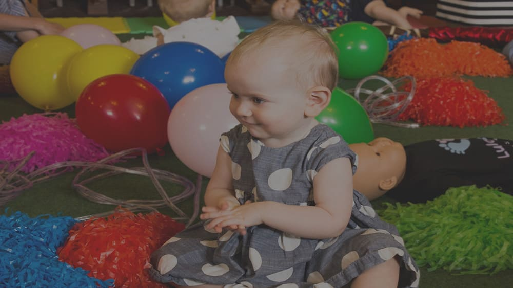
Lullababy West Dublin
The Green Isle Hotel in Clondalkin, on Fridays, with times varying throughout the day. Caregivers stay and participate in the activities, which include baby massage, yoga, sensory play, movement and music, and first aid.
View full details →Lusk Parent and Toddler Group
Lusk Parent and Toddler Group is open to mums, dads, caregivers and grandparents - come and connect with other local families. The group is for babies up to 3 years of age. Come have a chat and a cuppa (bring a reusable cup with a lid) in a cosy venue while the kids play. Location: The Cottage Community Centre, 1 Church Rd, Lusk, Co. Dublin, K45 VE83 (beside the tree on Lusk Square, across from Murray's). Time: every Monday, 9.45-11.45am (during term time). Cost: €3 for 1 child, €5 for 2 children, €7 for 3 children. Contact: lptglusk@gmail.com. Keep an eye on social media for when the group starts back up after school holidays, as it may not always align with term time.
View full details →

Malahide Girls' Brigade
Starting Saturday 19th September 2026, Malahide Girls' Brigade are looking for new members aged 2-18+. We do a mixture of dance, singing, skipping, and games. Class times: Tiny Tots (2-4 years), Saturdays 1.15-2.15pm; Explorers (5-8 years), Saturdays 1.15-3.15pm; Juniors (9-11 years), Saturdays 2-4pm; Seniors (12-13 years), Saturdays 2-4pm; Brigaders (14-17 years), Saturdays 12.30-1.30pm; Associates (18+ years), Saturdays 12.30-1.30pm. We are a uniformed organisation, with uniforms supplied from our stores. Interested? Contact Ruth on 0879389727.
View full details →

Messy Adventures
Play promotes physical development, encouraging children to practise their fine and gross motor skills as well as hand-eye coordination. Children are given the opportunity to explore their senses by using their whole bodies and developing these movements. Our classes allow parents and carers to play one-on-one with their children, and also encourage children to learn how to engage in activities independently as well as with other children - all vital skills for their development. We pride ourselves on providing classes which are fully inclusive, warmly welcoming all babies and children. Tuesday: Malahide, 11am (messy play). Thursday: Malahide, 10am & 11:20am (Role Play Village Active). Friday: Swords, 9:30am & 11:15am (messy play). Friday: Raheny, 9:30am & 11:15am (messy play). A 30% sibling discount is automatically applied at checkout.
View full details →Mindful Creativity with Michelle
Children learn to become friends with the emotions that come to visit them, through crafts, music, games and activities, helping them connect with breath and body. Suitable for children aged 7-11 years. Flemington Community Centre, Balbriggan. July 21st-25th, 10:00-12:30. €120. Sibling discount available. Phone Michelle on 0877730177.
View full details →Mini Me Massage
Mum & Baby Yoga is a 1-hour class, and Baby Massage is 1.5 hours long. Classes are baby-led. I offer a safe space with an intimate setting for mammies to come with baby and enjoy 1-to-1 time to bond with baby, while meeting other new mammies.
View full details →Moo Music Dun Laoghaire
Moo Music is a great fun and interactive music and movement session for 0 to 5 year old children and their parents, grandparents or carers too, where the children sing, dance and play. Music is an essential part of every child’s development and the 150 original Moo Music songs used at the sessions are positive, uplifting, fun and educational. The interactive sessions will help your child gain confidence and develop memory, language and coordination skills in an exciting, enjoyable and multi-sensory way. It’s a great way to make new friends – both for the children and the adults too! Check our website to stay up to date with our schedule
View full details →
Muckross Gymnastics Club
MPGC provides a range of gymnastics classes from Preschool Gymnastics (3+) through to Teen classes (12+), and open play for babies to preschoolers. The majority of our gymnasts take part in our one-hour-per-week Recreational Classes, which run all week at our venue in Sandyford Business Park, Dublin 18. Artistic Gymnastics Classes focus on fun, learning new skills, and gaining strength, flexibility and discipline that helps our gymnasts in all aspects of their lives, training on asymmetric bars, balance beam, vault and floor, as well as learning new skills on the trampoline and AirTrack. Extra Rec is perfect for any of our Recreational gymnasts (1 hour or 1.5 hour per week groups) who would like a second class to build on their skills. Ninja Class is for boys and girls who love to run, jump and climb - a parkour-style class with lots of obstacle courses and fun challenges. Trampoline Class is for girls and boys who love to jump, using our Olympic-size trampoline, AirTrack, mini tramp and more. Tots Open Play is open to crawlers up to age 4 (pre-school boys and girls), offering parent-supervised play in our gym with lots of room to run, bounce, swing and climb - it isn't coach-led, but we're on hand to help and play, and you can drop in anytime and stay for the whole session or just a little bit. Sibling discounts are available, and don't forget to ask for our loyalty card.
View full details →Mucky Picnic
The most regular Mucky Picnic is on Friday mornings in Kidspace Rathcoole. These run during school terms at 10:15am. No need to book, just turn up ready for mess! Children must not be left unattended. Each class has a selection of sensory and messy play trays to explore, which vary from week to week depending on the theme. Sessions are relaxed and unstructured, so you and your little one can explore at your own pace - a relaxing environment for little ones to play, socialise and be their own unique selves. Just like a real picnic, Mucky Picnic sessions can be taken almost anywhere - sessions also run in libraries, schools, toddler groups, community centres and play centres. Follow us on social media to stay up to date on the latest terms and classes. Let's go on an adventure to make, mess and play together.
View full details →

Mulhuddart Parent, Baby and Toddler Group
Mulhuddart Parent, Baby and Toddler Group is hosted by Empower. The group operates as a fun place for parents and carers to meet with their little ones. The group may alter its activities from open play group to fun fitness class to buggy brigades - keep an eye on their social media to find out what's on offer. Location: Mulhuddart Community Centre, Church Road, Mulhuddart, Dublin 15, D15 R2VF. Time: every Thursday, times vary depending on the type of group operating but usually between 9.30am-12.15pm. Cost: €2 per family (depending on activity). Contact: mgomez@empower.ie. Keep an eye on social media for when the group starts back up after school holidays, as it may not always align with term time.
View full details →Music 4 Tots
Music 4 Tots offers music and movement classes for preschoolers. Classes also offered in Firhouse Community Centre / Blackrock. Please stay up to date with our locations and times on our social media accounts. All caregivers are welcome and must stay with children.
View full details →Music Cubs
Parent & child music classes for babies, toddlers and big cubs aged 0 to 5 years. Music Cubs classes are 30 minutes of fun, melody and play, introducing musical rhythms, beats and tempos, and teaching simple percussion to your bear cub. Enjoy live performances on a variety of instruments, and a time to immerse yourselves in music together. Little ones have a natural love of music - grow that love in a gentle, fun way. Classes in various locations across Dublin.
View full details →Once Upon a...Fairytale
Step into a world of fairytales with illustrator Lauren O'Hara for a magical interactive craft workshop. Enjoy a read-along of Once Upon a... Fairytale (Macmillan), and learn how to draw a cute Puss in Boots. Young storytellers will also get the chance to invent their own tale for Lauren to illustrate, and finish by crafting their very own fairytale hero. Perfect for creative kids who love stories, drawing, and making their own adventures. Lauren O'Hara is an award-winning illustrator originally from the North of England, now based in Dublin - her work has been published by Macmillan, Puffin, Penguin Random House USA, Thames and Hudson and Walker Books. Ages 7-12. Location: Axis Ballymun, Main Street, Ballymun, Dublin 9, Y9W0. Visit our website to stay up to date with our classes and activities.
View full details →

Parent and Toddler Group - Fingal Sports Hub
Balbriggan, Swords, Baldoyle, Lusk and Meakstown Parent and Toddler Movement Classes are brought to you by Fingal Sports Office. The group is suitable for babies who are walking, up to 3-4 years old. Movement classes promote development through exercise, yoga and fun games. Registration is required (check their socials) - classes operate on a drop-in basis, but you must register ahead of time. Keep an eye on social media for when the group starts back up after school holidays, as it does not always align with term time. Cost: free. Contact: sports@fingal.ie. Balbriggan: Balbriggan Combined Club, every Thursday at 9.30am (during term time). Baldoyle/Howth: Baldoyle Community Centre, every Thursday at 10am (during term time). Swords: Applewood Community Centre, every Tuesday at 10.30am (during term time), and Holywell Community Centre, every Tuesday at 9.15am (during term time). Lusk: St Macullin's Centre, Lusk Parish Hall, every Friday at 9.15am (during term time). Meakstown: Meakstown Community Centre, every Tuesday at 10am (during term time).
View full details →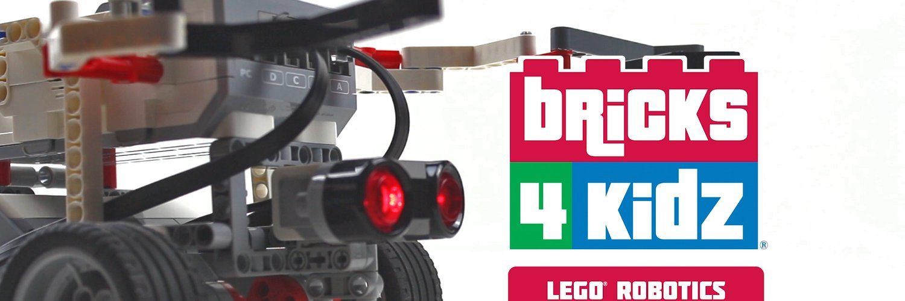
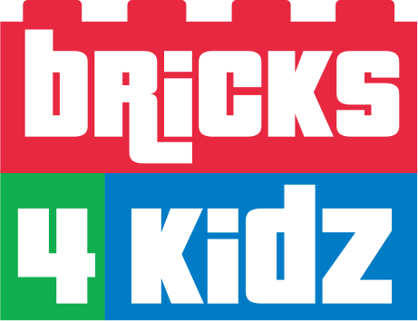
Parent and Toddler Lego Class
Sand, song and Lego Duplo, with interactive circle time included. Suitable for parents, grandparents, minders etc - relax and enjoy with your baby/toddler while they interact with other toddlers. From 6 months to 3 years. Malahide (Tuesdays, 10.30am).
View full details →

Pearse St Toddler Group & Junior Book Club
Pearse Street Library offers lots of activities and groups for families. Location: Pearse Street Library, 139-144 Pearse Street, Dublin 2. Cost: free. Contact: 01 222 8430 / pearsestreetlibrary@dublincity.ie. Parent and Toddler Group: story time, songs and rhymes facilitated by the Early Learning Initiative, followed by playtime. Please register ahead of time - each ticket covers 1 adult and 1 child, and if you book and cannot attend, please cancel your ticket to release it to the waiting list. Time: every Tuesday and Friday morning from 10.30am. Junior Book Club: a world of imagination, adventure, and feel-good reads, suitable for children aged 8-12 years - email to book a place and find out the book of the month. Time: monthly, usually on Wednesdays, 5-5.45pm (check with the library as dates/times change).
View full details →

Phibsboro Toddler Storytime Group - Phibsboro Library
Phibsboro Library offers toddler story time, a great way to encourage early reading and early learning. They sometimes have special guests, like Sarah Sparkles, doing fun songs too, and the library also puts out toys for the kids to play with after the stories. Location: Phibsboro Library, Blacquiere Bridge, Dublin 7. Time: second Tuesday of the month at 11.30am. Cost: free. Contact: 01 222 8333 / phibsborolibrary@dublincity.ie
View full details →Pop-up play café at The Lock Keeper
Join our popup playcafé every second Tuesday from 12pm to 3pm at The Lock Keeper in Ashtown, Dublin 15. Babies play on our clean, safe play area with premium toys while you connect with other parents or simply relax and enjoy a hot coffee or lunch. No fee to play and no need to book. Just show up and enjoy!
View full details →

Portobello Baby & Toddler Group - Kevin Street Library D8
Kevin Street Library offers 2 toddler groups, always open to new members, with plenty of toys and books to choose from so your little one will have a great time. Location: Kevin Street Library, 18 Lower Kevin Street, Dublin 8. Cost: free. Contact: 01 222 8488 / kevinstreetlibrary@dublincity.ie. Baby and Toddler Group: we share toys, stories, and, from time to time, songs - all babies and toddlers are welcome, no need to book. A library assistant reads stories in the children's library, and it's really laid-back, so feel free to come and go as you please. Time: every Wednesday, 10.30-11.30am. Irish Speaking Parent and Toddler Group (Grúpa Tuistí agus Leanaí): would you like to speak Irish with other parents and their children in a relaxed and warm atmosphere? All levels of Irish are welcome. Time: first Friday of the month at 10.30am.
View full details →
Raheny Library - Toddler Group and Junior Book Clubs
Raheny Library offers activities for families free of charge - also grab yourself a library card and borrow some books when you visit. Location: Raheny Library, Howth Road, Dublin 5. Cost: free. Contact: rahenylibrary@dublincity.ie. Parent and Toddler Group: the perfect way to meet new parents/carers of babies and toddlers, no booking required, just pop along. Day/Time: every Tuesday morning (excluding Tuesdays after bank holidays), 10.30-11.30am. 'The Brainy Bees Book Club' / Junior Book Club: the perfect retreat for book-loving kids, suitable for ages 10-12 years - books are available to borrow from the library, places are limited, and you should check with the library in advance of booking your child's place. Day/Time: last Tuesday of every month, 3.15-4pm (confirm with the library, as the day may change).
View full details →Raheny Parent, Baby and Toddler Group
Raheny Parent, Baby and Toddler Group is run by volunteers, welcoming parents, grandparents and carers to come along with their babies and toddlers. The group has lots of toys and a bit of a sing-song, with tea and coffee for the adults. Note: the space in the hall is limited, so the group operates on a first-come, first-served basis - get there early. Location: Cara Hall Community Centre, Raheny, D05 WY64. Time: every Monday, 9.30-11am (during term time). Cost: €4 per family. Contact: via their Facebook page. Keep an eye on social media for when the group starts back up after school holidays, as it may not align with term time.
View full details →Rathcoole and Templeogue - Toddlers World
Toddlers World brings a fun, interactive class for babies, toddlers and preschool kids, with music, songs and movement using egg shakers, maracas, handclappers, puppets, balloons, bubbles and more. It's a great way for kids to develop social skills and speech and language, and a lovely stepping stone to Montessori. Suitable from 4 months to 4 years and beyond - some 6, 7 and 8 year olds still come back over the summer months and midterm. It's also a lovely way to connect with other mams and grandparents, for minders to bond with the child, and to create lifelong friendships. Pre-booking is essential, and spaces are limited. For more information, DM the Toddlers World Facebook group or call 0861700806 - also on Instagram if you'd like to see reviews of the classes. Runs every Wednesday in Rathcoole Community Centre, 9.30-10.45am, and every Monday, Thursday and Friday in St Jude's Pastoral Centre, Templeogue, 9.45-11am.
View full details →Rathfarnham / Ballyroan Parent, Baby & Toddler Group
Ballyroan Parent, Baby and Toddler Group in Rathfarnham, Dublin, is also known as 'Ballyroan Playgroup, Kids & Koffee', for kids from birth to 4 years old. Location: Ballyroan Community Hall, Marian Road, Rathfarnham. Time: every Friday, 10am-12pm. Cost: €5 per family. Contact: via the group's Facebook page. Note: there is no social media to stay up to date with for this group.
View full details →

Rathmines Baby & Toddler Group & Junior Book Club - Rathmines Library
Rathmines Library toddler group offers stories, sing-songs and toys as a fun and safe place to meet up, for babies to preschoolers - no need to book, just drop in. Time: every Thursday at 1pm. Keep an eye on social media for when the group may not be operating. Children's Book Club: a space for children aged 7-12 to gather and discuss books. Nicknamed the 'Greedy Readers', they love to read and love to eat - join the library to discuss books and enjoy some delicious snacks. Please get in touch to put your name down and receive this month's book. Time: last Thursday of every month at 3pm, in the exhibition room. Location: Rathmines Library, 157 Lower Rathmines Road, Dublin 6. Cost: free. Contact: rathmineslibrary@dublincity.ie
View full details →

Ringsend Library - Toddler Group & Lego Group
Ringsend Library Baby & Toddler Group: all babies and toddlers are welcome, no need to book, with toys, books, nursery rhymes and songs to enjoy. Time: every Thursday at 11am. Lego Club: a space for kids who love Lego to meet up - the library leaves out a selection of Lego blocks and pieces for everyone to enjoy. All children under 9 taking part in Lego Club must be accompanied by a responsible parent/adult guardian. Time: second Saturday of every month, 10.30-11.30am. Location: Ringsend Library, Fitzwilliam Street, Dublin 4. Cost: free. Contact: ringsendlibrary@dublincity.ie
View full details →Rosey Stars 🌟
Kids Zumba Classes led by a licensed and insured instructor. This high-energy class blends dance, movement, music, and fun, designed especially for children. Classes are run by Rosey Stars, a small local business, with a passionate acting and singing coach with years of experience on stage and screen. The focus is on fun, confidence, coordination, creativity, and having a great time in a safe, supportive environment. Location: Lusk Parish Hall. Day: Fridays. Class times by age group: ages 4-6, 4pm; ages 7-10, 5pm. Children are welcome to attend with support from their caregivers, including mum, dad, grandparents, or legal guardians - we love a supportive audience! Caregivers are welcome to stay, especially for younger children, but are not required to remain for the full class once the child is settled and comfortable. Kids should wear comfortable shoes suitable for dancing and comfortable clothes that allow free movement, and bring a water bottle to stay hydrated - no special equipment needed, just energy and smiles. Sibling discounts are available, classes are age-appropriate, structured, and fun, and it's a great way for kids to have fun, stay active, socialise, and build confidence.
View full details →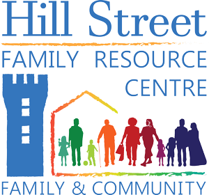
Rotunda Parent, Baby & Toddler Groups- Hillstreet Resource Centre
Rotunda Parent and Baby and Toddler Groups are offered by Hill Street Family Resource Centre. Location: Hill Street Family Resource Centre, Hill Street Playground, D01 TC90. Cost: €3 voluntary contribution. Contact: childteamleader@hillstreetfrc.ie. Outdoor Group. Time: Wednesday, 9.30-11am. Parent and Child (0-3 years). Time: Thursday, 11.30am-12.45pm. Parent and Baby Groups (0-2 years). Time: Friday, 11.30am-12.45pm. Preparation for Preschool Group. Time: Tuesday & Friday, 9.15-11.15am. Baby Massage: a 6-week programme offering a warm and welcoming space where parents and caregivers can learn the art of gentle massage for their little ones, while strengthening the bond between you and your child. Age 0-12 months. Time: Tuesday, 10.30-11.30am (these classes run in blocks and you need to sign up for them).
View full details →Rush Parent and Toddler Group
Rush Parent, Baby and Toddler Group offers various events throughout the year, including a Halloween box fort, a First Aid course, the Santa van and bauble-making crafts at Christmas, and giant hearts for Valentine's Day. They provide tea, coffee and biscuits for adults and small snacks for the babies and toddlers, and have a private Facebook group for more information. Location: Room 2, Rush Community Centre, Upper Main Street, Rush, K56 WF22. Time: most Tuesdays, 10am-12pm (during term time). Cost: €4 per family. Contact: 086 8810807. Keep an eye on social media for when the group starts back up after school holidays, as it may not always align with term time.
View full details →

SENSEable Tots Sensory Class in Dublin and Wicklow
SENSEable Tots is a fun sensory class for 6 months to 4 years. Classes are offered in Shankill and Greystones - enjoy a supportive and relaxed environment where children can explore different sensory materials and engage in fun action songs, using their imaginations, laughing and socialising with other children. Time: Mondays at 10am in Shankill, Stonebridge Community Centre. Time: Thursdays at 10am in Greystones, Nazarene Church. Check out our social media for locations and to stay up to date with new terms. Children must be accompanied by a parent/guardian who must stay for the duration of the class. It's recommended that you bring a change of clothes.
View full details →Sandyford Parent, Baby & Toddler Group
Sandyford Parent, Baby and Toddler Group is hosted by the Balally Family Resource Centre, also known as 'Our Wobblers & Toddlers'. Contact Sarah Jane to register, or just come along on Friday - we look forward to seeing everyone. Location: Balally Pastoral Centre. Time: every Friday, 10.30am-12pm. Cost: €3 per child or €5 per family. Contact: 0838721696.
View full details →Sandyford Parent, Baby & Toddler Group (Baby Talk)
Sandyford Parent, Baby and Toddler Group is also known as Baby Talk Playgroup, a welcoming environment for babies through to toddlers and their parents/caregivers. Have a coffee and a chat while the kids play - all welcome, drop in whenever suits between our opening times. Location: St Mary's Parish, Sandyford, D18 E5R3. Time: every Wednesday, 9.30-11.30am (during school term time). Cost: €3 per family (suggested donation). Contact: 01 2956414.
View full details →Santry Parent Toddler Group - Little Darlings Play café
Santry Parent and Toddler Group can be found at Little Darlings Play Café, a relaxed venue for mammies, daddies, grandparents and minders to explore with their babies, toddlers and wobblers - or come for a catch-up with a friend and let the kids play while you watch them and enjoy a coffee. Activities are included that bring the kids together and promote social interaction (between 11-11.30am). This group runs throughout the year, with additional classes at times for school breaks. Check @littledarlingsplaycafe00 to see the weekly activities for each day. Party packages also available. Location: Santry Scout Den, 62-66 Lorcan Green, Beaumont, Dublin 9, D09 EP46. Time: every Monday to Thursday, 9.30am-1pm. Cost: €6 per child, adults go free. Contact: Jodi on 0872673684.
View full details →Sensory Workshop for Neurodiverse Children - Balbriggan
Sensory Workshop for Neurodiverse Children: a fun, engaging session providing a safe space for children to explore sensory activities in a supportive environment. Max 8 children per session. Age: 4-10 years. Location: Balbriggan Library, George's Square, Balbriggan, Co. Dublin. Time: runs twice a month, 4-4.45pm. Cost: free. How to book: bookings open at the beginning of each month - email balbrigganlibrary@fingal.ie to secure a spot, and join the email list to be notified when bookings go live, as it's the first 8 each month. Important: parents/guardians must remain in the library during the session - you don't need to stay in the room, but must stay on the premises. Let's create a fun, inclusive space for all children.
View full details →Skerries Parent and Toddler Group
Skerries Parent and Toddler Group: join us for a fun-filled morning of play, crafts, and social time for both parents and toddlers. It's a great chance to meet other families in the community, let the little ones make friends, and enjoy some quality time together - new faces are always welcome. Location: Skerries Community Centre. Day/Time: every Wednesday during school terms, 10-11.30am. Cost: €5.
View full details →

Smithfield Parent, Baby & Toddler Group
Smithfield Parent, Baby and Toddler Group is hosted by One Family, a stay-and-play group for one-parent families with young children aged 0-33 months. Playful activities for children, and a chance to find a friendly and supportive community. You must register to join this playgroup - please call 016629212. Location: One Family, 8 Coke Lane, Smithfield, Dublin. Time: every Tuesday, 10am-12pm. Cost: free per family. Contact: 016629212.
View full details →

Soccer Stars
We introduce children to the joy of sport through fun, friendly, and pressure-free football sessions. Our engaging activities help kids develop coordination, confidence, and teamwork — all while having a great time with a ball at their feet and a smile on their face. We love seeing parents join in too! Your encouragement helps boost your child’s confidence and makes every session more enjoyable for both of you. Together, we create a positive and energetic environment where every child can shine. “It’s not just football, it’s the start of something bigger”
View full details →Stagekidz Academy
Classes in Terenure, Lucan, & Blanchardstown! For ages 4yrs+, classes led by industry professionals where all children are encouraged to develop confidence and self belief. No term fees, weekly payment!
View full details →Stillorgan Parent, Baby & Toddler Group
Stillorgan Parent, Baby and Toddler Group is also known as the Honey BeeHive Playgroup - the perfect morning out of the house to meet other mums, dads and caregivers with their babies, toddlers and preschoolers. Lots of toys on offer, plus a coffee/tea and a gorgeous homemade treat. The group operates on a drop-in basis, so no need to sign up for a term. Location: St Brigid's Parish Centre, Stillorgan. Time: every Tuesday, 9.30-11am (during school term time). Cost: €5 per family (cash or Revolut on the day). Contact: via the group's private Instagram account or WhatsApp group.
View full details →

Summer Swimming Camps for Children
SwimCamp offers intensive swimming camps for children throughout the year at Castle Park School Swimming Pool in Dalkey, Dublin, for kids aged 5 and up who have some previous swimming experience. Sessions usually last 45 minutes each day. Camps are divided into three skill levels (Groups 1, 2 and 3) to suit different abilities, from beginners to more advanced swimmers, with special clinics also available for teens aged 13+. Children can be accompanied by any caregiver - parents, grandparents, or childminders - though it's best to contact SwimCamp directly to confirm whether caregivers need to stay for the duration of the class, and for guidance on what to bring; typically for swim classes, children should bring a well-fitting swimsuit, a towel, goggles (if preferred), and a swim cap (if required by the pool). Each camp consists of three 45-minute sessions on consecutive days, focusing on improving existing swimming skills, building confidence in the water, and teaching water safety. Experienced, certified coaches lead small groups to ensure personalised attention, in a fun and engaging learning environment that helps children develop essential swimming strokes, strength, and endurance. Camps are priced at €65 for the three-day session, with multiple dates and time slots available throughout July and August.
View full details →Swords Riasc Centre Parent, Baby and Toddler Group
Swords Parent, Baby and Toddler Group welcomes parents, grandparents, minders and toddlers to meet, chat, drink coffee and tea, and catch up with friends. Location: Swords Baptist Church, The Riasc Centre, Feltrim Road, Swords. Time: every Wednesday, 10-11.30am (during term time). Cost: not listed. Contact: 086-8571011. Note: there is no social media for the group, but the website has a calendar which is updated regularly.
View full details →Tallaght Parent, Baby and Toddler Group -St Kevin's Family Resource Centre
Tallaght Parent, Baby and Toddler Group is hosted by St Kevin's Family Resource Centre, open to all families/carers and minders of young children. There is free play for the children, songs, arts and crafts, and refreshments to enjoy while getting to meet new people. Classes are drop-in, so don't worry if you're running late due to a nappy change. The group is in demand, so you must join the waiting list. Day/Time: every Tuesday during term time, 10.30am-12.30pm. Cost: €3 per family. Infant Massage: the Family Resource Centre offers baby massage classes on occasion, which are in demand due to their price - keep an eye on their socials to sign up for these highly recommended classes. Location: St Kevin's Family Resource Centre, St Kevin's Girls National School, Treepark Road, Kilnamanagh, Tallaght, Dublin 24, D24 R6PT.
View full details →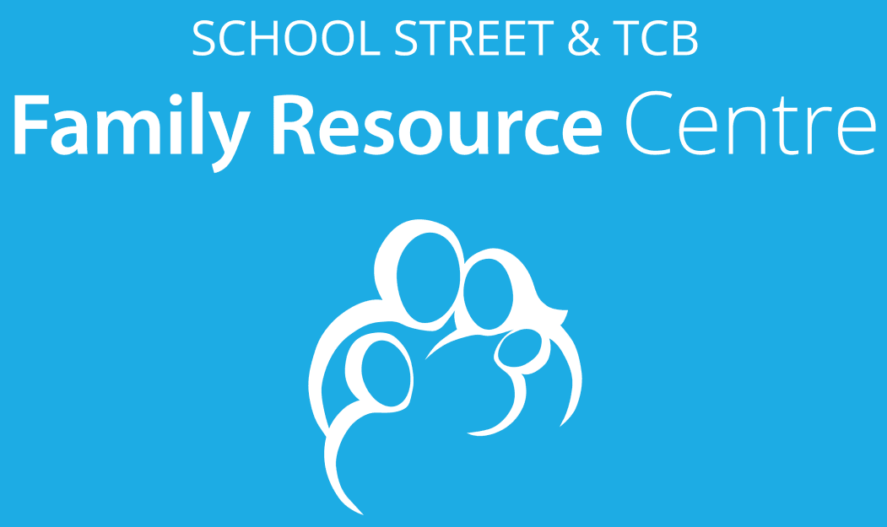
The Liberties Parent, Baby and Toddler Group
The Liberties Parent, Baby and Toddler Group, Dublin, is hosted by a Family Resource Centre and provides an excellent opportunity for parents to meet other parents socially and for children to engage with their peers. Activities include arts and crafts, baking, song and play. No booking needed, just drop in. Location: School Street Family Resource Centre, School St, The Liberties, Dublin 8. Day/Time: every Wednesday, 10.30am-12pm (during school term time). The resource centre also offers Baby Massage classes from birth to 10 months (and, on occasion, special Dad and Baby classes). Baby massage has huge benefits in facilitating the bonding process between babies and parents, and has also been well researched to contribute to digestion, circulation, colic and much more. Contact the resource centre to find out when the next class is running.
View full details →

The Toy Box - Sensory Family Fun
The Toy Box runs a sensory-friendly playgroup with the addition of a toy library too. They also run events throughout the year, so keep an eye on social media for upcoming events and playgroup dates. Join us for The Toy Box Family Fun Day, a fun, inclusive event for children of all ages, especially suited for ages 6 months to 8 years. Enjoy a Zumbini class, sensory play, face painting, the SENCO sensory van, and surprise character visits. Taking place at Fortlawn Community Centre on Saturday 7th June, 12-2pm. Tickets are €15 per child, with sibling discounts available. A relaxed, neurodiverse-friendly environment for families to connect, play, and explore. Book now on Eventbrite - all ages welcome.
View full details →
Tina Mation
For over 30 years, children across Dublin and Meath have enjoyed learning to draw with Tina, the much-loved artist and presenter behind the long-running RTÉ children's art television series 'Let's Draw with Tina'. Tina's fun and encouraging art classes help children build confidence, creativity and drawing skills in a relaxed and supportive environment. Each one-hour class is carefully designed to guide children step-by-step through exciting drawing and art projects, making it easy for all abilities to take part and enjoy. Tina's unique teaching method has inspired thousands of children over three decades, both on television and in person. All materials are supplied, so children simply arrive ready to create, learn and have fun. Classes take place in Lusk, Donabate, Glasnevin, Ashbourne, Ballyboughal, and Swords. Perfect for children who love drawing, cartoons, creativity and imaginative art activities.
View full details →
Tiny Tutus
Tiny Tutus offers magical ballet classes for children aged 2 to 14 years in a warm and nurturing environment. Our most popular classes are the Tutu & Me parent & child ballet sessions for toddlers aged 2 to 3.5 years. These special classes are designed for little dancers and their caregivers to enjoy music, movement, imagination and bonding time together. We also offer independent ballet classes for preschool and school-age children, helping students build confidence, coordination, creativity and a love for dance. Parents, grandparents or caregivers are welcome to attend the Tutu & Me classes and are required to stay for the duration of the session. For independent classes, drop-off options may vary depending on age. Children are required to wear appropriate ballet attire for regular classes. For trial classes, comfortable clothes suitable for movement are perfectly fine. Classes take place in different locations across North & South Dublin and Kildare. Please check our schedule at tinytutusie.com for class locations and times.
View full details →

Toddle Sense
Classes range from 13 months to 4.5 years. From Space to Under the Sea, to an Ugly Bug Ball and a trek in the Jungle, Toddler Sense explores it all. All activities are designed to work on a range of skills and developmental milestones, including hand-eye coordination, gross motor, fine motor, visual stimulation, emotional regulation, exploring the world around us, and social and emotional development, to name a few. A twin/sibling discount is available for all classes, and Baby Sensory graduates can avail of a discount when booking a class within the first 12 months of graduation. Multiple locations across Dublin: Balgriffin Hall, Malahide Road, Dublin; Fingallians GAA Club, Seatown West, Swords, Dublin; Gracepark Educate Together, DCU Campus, All Hallows, D09 KDW4, Dublin.
View full details →

Toddler Group Dublin 6 - Terenure Library
Terenure Toddler Group provides an opportunity for young children and their parents/carers to meet, chat and play. We warmly welcome new participants. Time: Terenure Library, every Tuesday at 10am, throughout the year. Location: Templeogue Road, Dublin 6W. Cost: free. Contact: terenurelibrary@dublincity.ie
View full details →Toddler Group Tallaght
Tallaght Parent, Baby and Toddler Group is hosted by Killinarden Family Resource Centre. Come meet new mums, dads and childminders, get support, meet other parents, and chat to staff. Learn new crafts, bake treats, or simply play with toys - all welcome, no need to book. Location: Killinarden Family Resource Centre, Killinarden Way, Dublin, D24 TC91. Time: every Wednesday, 9.30-11.30am, throughout the year. Cost: €2 per family. Contact: 01 452 7143. Come meet new parents, get parenting tips and support, and help your children develop their social skills within the group.
View full details →Toddler Groups with additional Parenting Support in Dublin
Shanganagh, Loughlinstown, Ballyogan, Mounttown, Balally and Hillview have Parent and Toddler Groups provided by Southside Partnership (contact the group to be referred into the PEEP Programme). These are friendly, weekly parent and baby/toddler groups using PEEP (Parents Early Education Learning Together), a programme that helps parents understand baby and toddler development and what it's like to become a new parent. Your baby/toddler learns to play with you, their most important person, while also learning to play alongside other very young children. Sessions include free play, snack time, circle time, song and story time, and a chance to talk to other parents and staff. The PEEP+ groups are designed for anyone who feels a bit isolated or excluded, or who wants to attend a smaller group (max 8 parents, 8 babies/toddlers) - we have a lot of experience including and welcoming parents, babies and toddlers like you. Cost: free per family. Contact: 01 7060100 / lorraine.stewart@sspship.ie
View full details →Tummy Time for babies
A class for mum, dad or caregiver to come with their baby and learn lots of tummy time positions, taking the tears out of tummy time in a fun sensory class. Learn in a small class of like-minded people. Class length: 1hr 30. Age suitability: newborn to pre-crawling. Next workshop is summer themed. Location: The Park Community Centre, Ballycragh, D24.
View full details →Turtle Tots Dublin
Turtle Tots lessons are truly child-centred. Each child is nurtured and activities are adapted to meet each individual’s needs. By the time you have reached the end of our baby programme we have taught you all the separate techniques and practices necessary for independent swimming. Our highly trained and skilled teachers ensure lessons are fun and sociable for everyone, whilst teaching your child essential life-saving skills. Babies from 3 months to 4.5 year olds can partake in Turtle Tot swimming lessons.
View full details →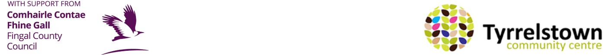
Tyrrelstown Parent, Baby and Toddler Group
Tyrrelstown Parent, Toddler and Baby Group in Dublin is an informal playgroup for parents and caregivers of babies and toddlers, offering the chance to meet a few new people, have a chat and a cup of coffee while your children play in your company. The group is aimed at babies up to 3 years. Location: Tyrrelstown Community Centre, Hollywood Rath, Holbstown Road, Tyrrelstown, Dublin 15. Time: every Friday, 9.30-11.30am (during term time). Cost: €2 per family. Contact: stayandplay.tyrrelstown@gmail.com. Keep an eye on social media for when the group starts back up after school holidays, as it does not always align with term time.
View full details →

WSKF Karate Academy Skerries
Volunteer-run club teaching traditional Shotokan and sports karate, strength and fitness. Ages 5 upwards. Come down and try a free class any time - sit in and see what goes on, or join in straight away. All you need is loose-fitting trousers and bare feet. Parents/caregivers can stay and watch or leave for the class. We always have beginner special offers too. All our volunteer coaches have coaching and child protection qualifications and are Garda vetted. Classes: Saturday, 2:30pm Beginners, 3:30pm Juniors; Monday, 6:45pm Juniors; Wednesday, 6:30pm Juniors. Location: Skerries Community Centre, Skerries. Find out more at wskfskerries.ie
View full details →

Walkinstown Baby & Toddler Storytime / Book clubs
Walkinstown Library has great groups on offer for families, all of which are free, so why not pop in? Toddler Storytime: children's story time with Ann is a fun outing for your little one, including stories and songs - no booking required, so please drop in and share in the fun. For babies to 2 years. Time: every Tuesday, 10.45-11.30am. Sensory Hour: have you tried the Cubbie or the Tovertafel (Magic Table) in Walkinstown Library yet? Now's your chance - chill out in the Cubbie, play with the games on the Tovertafel, explore the sensory toy box full of fun and educational toys, meet other parents, and get advice from our friendly staff about books suitable for your child. For primary school children and their parents/carers. Time: every Tuesday, 3.30-4.30pm. Children's Book Club: open to members aged 8-11, children are encouraged to read their favourite books and discuss them with other members, sharing likes and dislikes and having fun. Time: fourth Wednesday of each month at 3.30pm. Location: Walkinstown Library, Percy French Road, Dublin 12. Cost: free. Contact: walkinstownlibrary@dublincity.ie
View full details →Walkinstown/Kimmage/Crumlin Parent, Baby and Toddler Group
Crumlin Parent, Baby and Toddler Group: come along for a cuppa, a chat and the chance to share your parenting experiences. Give your toddlers a morning out interacting with other children of a similar age, with activities such as art time, song time, free play and snack time. The group is for babies up to 3 years. Please note: the group is for people of St Agnes' parish. Location: St Agnes Parish Centre Hall, St Agnes Rd, Crumlin, Dublin 12, D12 KC99. Time: every Thursday, 10am-12pm (during term time). Cost: not listed. Contact: 01 455 5383. Note: there is no social media for the group.
View full details →Yoni Hearts Club Baby Massage & Mum & Me Yoga
Location: Dublin City, Dublin (locations may vary - contact us through email or social media). Baby Massage: taught by a certified infant massage instructor with IAIM. Time: Fridays, 10.30am-12pm. Everything provided including refreshments - a 5-week in-person course, with an online option for weeks you're unable to attend in person. Mum and Baby Yoga: course/drop-in if available, light snack provided after class. Time: Tuesdays, 10.30-11.30am.
View full details →ZenDen
ZenDen combines the power of play and mindfulness to enable each child enrich their psyche and reach their individual best. ZenDen believes through the power of collaborative play children develop their social, emotional, physical and cognitive skills. Small classes will ensure your children feel secure, supported and build meaningful relationships with us and the other children. Classes are run on a weekly basis for 45 minutes. Children attend with an adult.
View full details →Round Towers GAA Club (Clondalkin)
Nursery programme introducing young children to Gaelic football and hurling fundamentals in a fun, friendship-focused environment at one of Clondalkin's oldest GAA clubs.
View full details →Stepaside FC
Entry-level football academy for young children, focused on fun, friendship and football fundamentals in a safe, supportive environment for complete beginners and those with some experience alike.
View full details →Monkstown Lawn Tennis Club
Junior tennis coaching for club members of all ages and standards at Ireland's oldest tennis club, running group coaching seven days a week during the school term with individual coaching also available.
View full details →
Dublin Stage School
Combined singing, dance and drama class for young children, developing rhythm, role-play confidence and early performance skills in a fun, safe, Garda-vetted environment.
View full details →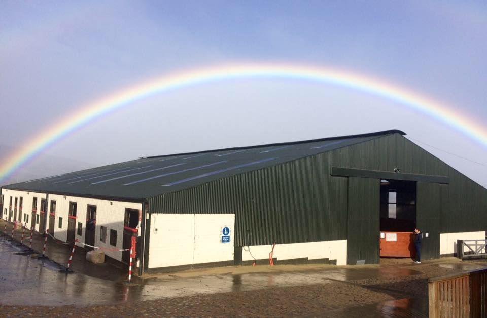
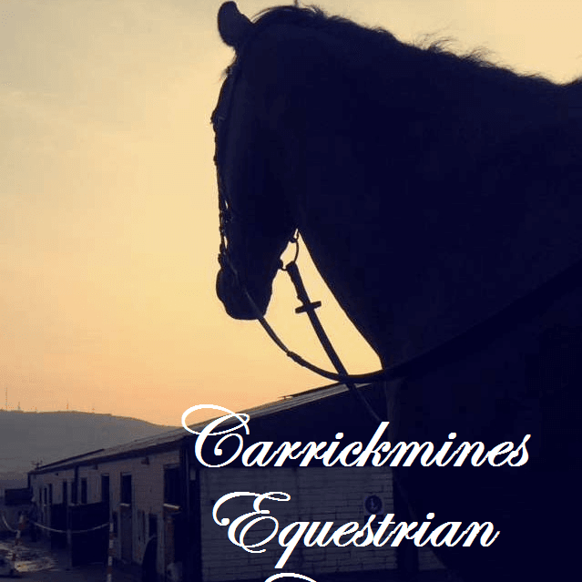
Carrickmines Equestrian Centre
Group horse riding lessons for children aged six and up, run in ability-based groups by a family-run, AIRE-approved riding school with an indoor arena, seven days a week.
View full details →
Churchtown School of Music
One-to-one instrumental and vocal lessons across 20+ instruments (piano, guitar, violin, drums, singing and more), taught in dedicated teaching rooms by specialist instructors, with optional exam preparation.
View full details →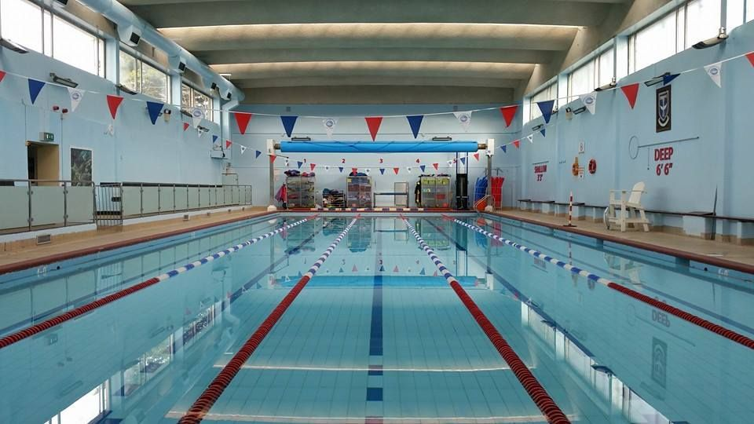
Templeogue College Swim Pool
Learn to Swim programme in a heated 25m community pool with extra-shallow sections for beginners, taking children from their first time in the water through to confident, fitness-focused swimming.
View full details →iSwim Academy (Club Vitae Tallaght)
Small-group children's swimming lessons run across seven progressive levels, with 30-minute classes capped at 6-8 children per group and continuous assessment through three annual terms.
View full details →Project Fashion
Four-day fashion design summer camp teaching creative thinking, fashion illustration, sewing machine skills and garment construction, guided by professional fashion designers.
View full details →

ClapHandies
Weekly PlayLab sessions of music, rhyme, baby massage technique, sign language and sensory play for babies, wobblers and toddlers, with parents actively encouraged to join in.
View full details →

Turtle Tots
Progressive baby and toddler swimming programme starting from birth, developed with personal trainers, combining water confidence activities with a toning workout for accompanying parents.
View full details →Tallaght Parent, Baby and Toddler Group (Killinarden Family Resource Centre)
Free community parent, baby and toddler group offering crafts, baking and play, plus a chance for parents and childminders to meet, get support and chat with centre staff.
View full details →
The Brickx Club
Creative brick-building (LEGO-based) and STEM activity club for children, offering pre-school clubs, after-school clubs, Saturday workshops, parties and popular Easter, summer and midterm camps.
View full details →Bounce Gymnastics Club
Community gymnastics club offering recreational classes for children, registered with the Dun Laoghaire-Rathdown Sports Partnership club directory.
View full details →

Muckross Park Gymnastics Club
Community gymnastics club offering recreational classes for children, registered with the Dun Laoghaire-Rathdown Sports Partnership club directory.
View full details →
Olympian Gymnastics
Community gymnastics club offering recreational classes for children at Wesley College, registered with the Dun Laoghaire-Rathdown Sports Partnership club directory.
View full details →

Blackrock Athletic Club
Community athletics club offering juvenile athletics training in track & field, cross country and road running, registered with the Dun Laoghaire-Rathdown Sports Partnership club directory.
View full details →

Cabinteely Athletic Club
Community athletics club offering juvenile athletics training in track & field, cross country and road running, registered with the Dun Laoghaire-Rathdown Sports Partnership club directory.
View full details →

Rathfarnham WSAF Athletic Club
Community athletics club offering juvenile athletics training in track & field, cross country and road running, registered with the Dun Laoghaire-Rathdown Sports Partnership club directory.
View full details →

St. Brigid's Rugby Club
Community rugby club offering mini and youth rugby sections for children, registered with the Dun Laoghaire-Rathdown Sports Partnership club directory.
View full details →
Seapoint Rugby Club
Community rugby club with grass pitches offering mini and youth rugby sections for children, registered with the Dun Laoghaire-Rathdown Sports Partnership club directory.
View full details →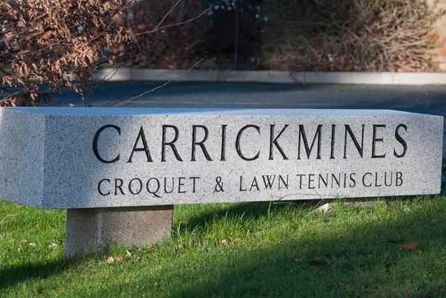
Carrickmines Croquet & Lawn Tennis Club
Community tennis club with clubhouse facilities offering junior tennis coaching, registered with the Dun Laoghaire-Rathdown Sports Partnership club directory.
View full details →Deerpark Tennis Club
Community tennis club with six courts offering junior tennis coaching, registered with the Dun Laoghaire-Rathdown Sports Partnership club directory.
View full details →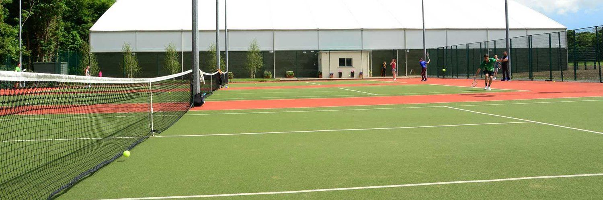
Shankill Tennis Club
Community tennis club with seven courts offering junior tennis coaching, registered with the Dun Laoghaire-Rathdown Sports Partnership club directory.
View full details →

Ballinteer St. Johns GAA Club
Community GAA club offering juvenile Gaelic football and hurling training and nursery sections for children, registered with the Dun Laoghaire-Rathdown Sports Partnership club directory.
View full details →

Naomh Olaf GAA
Community GAA club offering juvenile Gaelic football and hurling training and nursery sections for children, registered with the Dun Laoghaire-Rathdown Sports Partnership club directory.
View full details →
Shankill GAA Club
Community GAA club offering juvenile Gaelic football and hurling training and nursery sections for children, registered with the Dun Laoghaire-Rathdown Sports Partnership club directory.
View full details →Ballinteer Kenpo Karate Club
Community karate club offering Kenpo karate training for children and adults, registered with the Dun Laoghaire-Rathdown Sports Partnership club directory.
View full details →

Tae Kwon Do Tigers
Community taekwondo club offering training for children and adults, registered with the Dun Laoghaire-Rathdown Sports Partnership club directory.
View full details →

Active Mum .ie
Spend quality time with your baby - learn how to give your baby a massage, and meet other local mums for friendship and support. There are 3 classes on offer: Baby Massage, Story Massage & Sensory Play, and Massage in Schools.
View full details →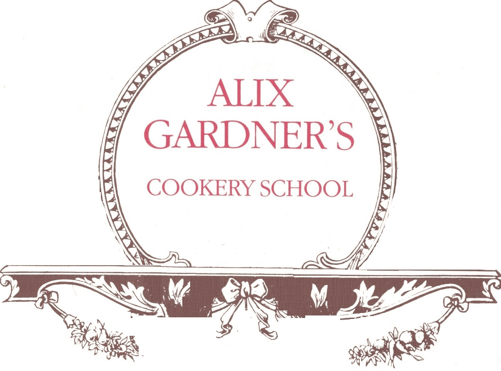
Alix Gardner's Cookery School
This is where young foodies are discovered. Alix Gardner's Cookery shows children the fun and wonder of cooking - they learn traditional cooking skills and have fun with good, honest, delicious food. From artisan kitchen crafts to experimenting with flavour combinations and exploring food cultures and kitchen traditions, their children's cookery courses are specifically designed to educate, inspire and engage young chefs into the world of cookery, while having a great time in the kitchen in a safe and warm environment.
View full details →All Court Tennis
All Court Tennis, based at the Railway Union Sports Grounds in Sandymount, Dublin 4, offers dynamic, confidence-building tennis coaching for children of all skill levels. Their programmes emphasize not just athletic growth—improving coordination, agility, balance, and focus—but also personal development through lessons in sportsmanship, problem-solving, independence, and teamwork. With a warm, inclusive philosophy, they aim to nurture not only skilled players but well-rounded individuals who love the game for life.
View full details →

Alliance Française
Alliance Française Dublin is a leading French language and cultural centre offering classes for toddlers, children, and teenagers (ages 2-18). Through fun and interactive activities, students build lasting language skills and an appreciation for French culture. Located in the heart of Dublin, the centre is easily accessible and offers a welcoming space for members to relax and socialise. Recognised for excellence, it has received the European Language Label and was named Best Language School in Ireland in 2018.
View full details →

Arabian Gymnastics Club
Arabian Gymnastics Club offers recreational and competitive gymnastics classes for boys and girls of all ages. Located in a 10,000 sq ft facility in Baldoyle, Dublin, the club is equipped with a range of gymnastics equipment, including sprung floors, AirTracks, bars, beams, vaults, trampolines, and resi mats. Established in 2005 as Dublin's first full-time gymnastics facility, Arabian Gymnastics provides structured training in artistic gymnastics, focusing on skill progression and fitness development. The club also runs holiday camps throughout the year to give children additional opportunities to practise and improve.
View full details →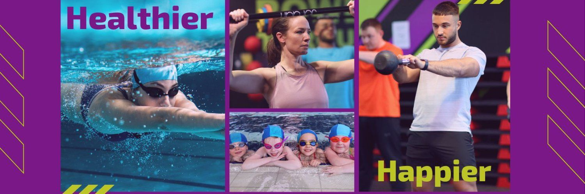
Aura Leisure
Aura Leisure De Paul on Navan Road, Dublin 7, offers a comprehensive and engaging swimming programme for children aged 4 and up. Their Swim Academy features 10 progressive levels, starting from foundational water skills in the 'Ducklings' class to advanced stroke techniques and lifesaving skills in the 'Sharks' level. Each stage is designed to build confidence, safety awareness, and swimming proficiency in a fun and supportive environment. Lessons are conducted by professionally trained instructors in both the learner and main pools, ensuring appropriate challenges as children advance. For younger swimmers, the Junior Swim Academy provides 'Swim Baby' classes for infants up to 30 months and 'Swim Tots' classes for toddlers, focusing on water familiarity and parent-child bonding. With free swim assessments available to determine the appropriate starting level, Aura Leisure De Paul ensures every child receives personalised instruction tailored to their needs.
View full details →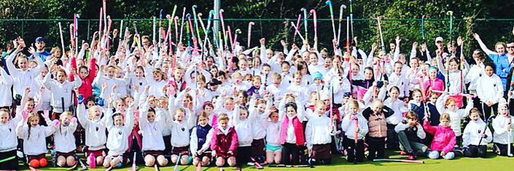
Avoca Hockey Club
Avoca Hockey Club, based in South Dublin, is one of Ireland's oldest and largest hockey clubs, with a vibrant junior section of around 800 boys and girls training each week. The club offers a fun, inclusive, and safe environment where children of all levels can develop their skills, make friends, and enjoy the sport, whether they're playing for fun or aspiring to compete. Junior training takes place across several South Dublin locations, including Newpark Comprehensive School, Sion Hill, Loreto Foxrock, and St Andrew's College, ensuring access for families throughout the area. Affiliated with Hockey Ireland and the Leinster Hockey Association, Avoca's junior section is a great entry point into the sport, supported by experienced coaches and a strong community spirit.
View full details →

B.A.N.T.S
With over 65 years of experience, B.A.N.T.S is Ireland's oldest theatre school, offering Speech and Drama classes for children and teenagers aged 4 to 18 in Dublin. Founded in 1951, the school has a rich legacy of excellence and a reputation for fostering a lifelong love of drama. Classes focus on building confidence, clear speech, and creativity, whether students are beginners or more advanced. Small class sizes ensure individual attention, and students have the opportunity to take grade examinations with Trinity College London and participate in solo and group competitions throughout the year.
View full details →

Back Street Dance
Located 4 minutes' drive from Dublin Airport, Back Street Dance has been home to a number of Ireland's funkiest kids' and hip hop champion dancers for over 5 years. They have classes for children from 2.5 years to adults.
View full details →Balance Ireland
Aikido is a dynamic martial art that combines practical self-defense techniques with a focus on building confidence and agility. Kids aged 7 to 15 can enjoy getting fit, increasing flexibility, and learning important skills like anti-bullying and coordination in a supportive and fun environment. Classes are led by highly qualified, Garda-vetted instructors with over 20 years of experience. Safety and wellbeing are a top priority, and all classes follow national child protection guidelines. Classes run with the school term and pause during holidays and midterm breaks. Wear tracksuit pants and a t-shirt for your first class.
View full details →
Balcultry Stables
Balcultry creates a happy environment in which kids can learn about horses, how to ride them, and how to look after them. The welfare of our animals is always paramount.
View full details →
Ballyfermot De La Salle
Ballyfermot De La Salle GAA has a proud history of fostering Gaelic games and community spirit in Dublin 10. Established in 1953, the club has grown from grassroots beginnings to become a central hub for football and hurling in Ballyfermot and beyond, serving families from Bluebell, Clondalkin, Palmerstown, Lucan and further afield. The club runs a vibrant juvenile programme, with over 12 teams and a growing youth membership. A standout initiative is the Bear Cubs nursery, started in 2019, offering children aged 3-6 the perfect introduction to Gaelic games through fun, active play.
View full details →
Ballymun Kickhams
Ballymun Kickhams is one of Dublin's most well-known GAA clubs, with a proud tradition of developing talented players and a strong community spirit. The club has produced several Dublin senior footballers and continues to grow with a thriving juvenile section. Their popular Saturday morning nursery welcomes boys and girls aged 3 to 8 years, offering a fun, friendly and supportive environment to learn the basic skills of Gaelic football. It's a great way for young children to stay active, make friends, and build confidence.
View full details →

Beann Éadair
Located in Howth, Beann Éadair GAA is one of Ireland's oldest clubs, founded in 1885. With a strong community spirit and deep roots in Gaelic games, the club has grown rapidly in recent years and now boasts over 1,400 members. Beann Éadair offers juvenile football and hurling/camogie for boys and girls from Under 8 to Under 16. All teams play both codes and are led by a dedicated group of mentors.
View full details →Bective Tennis
Bective Tennis Club is a family-friendly club welcoming children aged 4 and up, with a focus on fun, development, and inclusive participation. The junior programme includes after-school coaching throughout the year, holiday tennis camps, junior blitzes and supervised sessions, social tennis mixers and inter-club events, and junior championships and parent-child tournaments.
View full details →Billy Barry Stage School
The Billie Barry Stage School takes a practical and balanced approach that allows students of all abilities to enjoy themselves and be educated without false expectations or demands being placed upon them. The Billie Barry Stage School is a meeting place where students aged 3 to 20 can socialise together while learning a variety of performing art forms in a professional and disciplined environment.
View full details →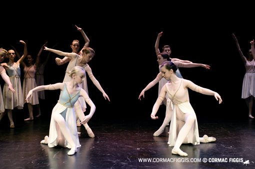
Bona MacNally School of Dance
The school is fundamentally a classical ballet school, training children in the Royal Academy of Dance (RAD) system. Students undergo the examination system as well as performing in the many school productions that take place. The school teaches children from 3 to 21 years of age at two venues in Blackrock, Co. Dublin. The junior children take part in classes that encourage the joy of dance, and examinations only begin when Brona feels the children are ready.
View full details →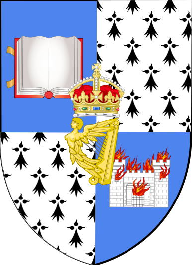
Bravehearts Halloween Camp at Trinity Sports Centre, Dublin city centre
Flexible day bookings now available for €50 per day. Join us this mid-term break for an action-packed Bravehearts Halloween Camp 2025 at Trinity Sport! Running from Tuesday 28 October to Friday 31 October, the camp offers a full day of fun from 9am to 4pm, with pre-care (from 8am) and post-care (until 5pm) options available. Children aged 4-14 years will enjoy a wide range of exciting activities, from swimming, rugby and climbing to arts & crafts, dance and nature walks, all led by friendly, qualified coaches. Prices start from €170 for the week, or €50 for day bookings, with flexible care options and sibling discounts available. Spaces are limited, so secure your spot now through the SportsKey booking platform at https://portal.sportskey.com/venues/trinity-college-santry-sports-grounds/events. For any queries, contact children.sports@tcd.ie or call reception on 01 896 1812.
View full details →
Bushy Park Tennis Academy
Bushy Park Tennis Academy offers fun and engaging tennis lessons for children aged 5 to 17. Classes are organised by age and skill level to ensure an enjoyable and supportive experience for all players. Lesson times: Monday to Thursday, 3-6pm; Saturday, 9am-1pm. Lessons take place at Bushy Park Tennis and Padel Club, providing a great environment for learning and playing.
View full details →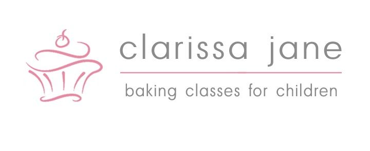
CJ Cookery
CJ Cookery offers weekly baking classes for children in a fun, safe and relaxed environment in Clontarf, encouraging discovery and creativity. During my baking classes, all children work independently to create their own masterpiece from start to finish.
View full details →

Cabinteely GAA
Cabinteely GAA has been at the heart of the community since 1977, providing Gaelic football and hurling/camogie for boys and girls of all ages. The club is based in Kilbogget Park and welcomes players from Cabinteely, Johnstown, Cherrywood, Ballybrack, Loughlinstown, and Killiney. For younger children, the Academy is the perfect introduction to Gaelic games, with fun, engaging sessions designed to build skills and confidence. Football runs on Saturdays at 9am, while hurling/camogie takes place on Thursdays at 6pm. From age 7, players move into teams that train weekly and take part in Go Games, a development-focused format ensuring inclusive and balanced play.
View full details →

Castleknock Hurling and Football Club
Castleknock Hurling and Football Club has been a cornerstone of the Carpenterstown, Castleknock, and Clonsilla communities since 1998, offering Gaelic football, hurling, camogie, and ladies football for all ages. With top-class facilities at Somerton Park and additional pitches in Porterstown, St Catherine's Park, and Tír na nÓg, the club provides a welcoming environment for players of all levels. For younger children, the Nursery runs every Saturday morning in Tír na nÓg, catering to boys and girls aged 4 to 8, with a focus on fun, teamwork, and skill development - the perfect introduction to Gaelic games.
View full details →

Cherry Orchard Equine Centre
Cherry Orchard Equine Centre offers a range of riding lessons for beginners to advanced riders, catering to all age groups. Lessons follow the AIRE syllabus and focus on fun, progression, and building confidence. Private lessons are also available for those who want one-on-one instruction or aim to advance more quickly. Therapeutic riding sessions are also offered for children and adults with additional needs, promoting strength, balance, coordination, and confidence through gentle, rhythmic movement. During school holidays, Cherry Orchard runs pony camps that include riding lessons, stable management, and fun activities like games and arts and crafts - camps are three hours long and led by qualified instructors. Lessons take place Monday to Friday, 3-8pm, and Saturday, 9am-5pm.
View full details →

Child Vision
ChildVision is the only place in Ireland totally dedicated to the education and therapy needs of blind and multi-disabled children. Thousands of children with sight loss and other profound disabilities have bravely overcome their obstacles and grown up to reach their full potential, guided by their expertise and support. ChildVision is primarily an equine therapy facility with a very limited number of horse riding lessons open to the public. Equine therapy lasts 30 minutes or 1 hour, in group blocks available subject to assessment by their occupational therapist. This input provides horsemanship experiences to people with physical, sensory, mental health, psychological and intellectual disabilities, in order to enhance the quality and productivity of their lives.
View full details →Clondalkin Leisure Centre
Clondalkin Leisure Centre offers a comprehensive range of children's swimming lessons designed to build confidence, safety, and skill in the water. Starting from 3.5 years old, their structured programmes cater to all levels, from beginners to advanced swimmers and junior lifesavers. Led by certified instructors in a modern, award-winning facility, each lesson focuses on fun, progression, and water safety. With classes available every day, it's an ideal choice for families in Dublin 22 seeking quality swim instruction in a supportive environment.
View full details →

Clontarf GAA Club
Clontarf GAA Club has been at the heart of the community since 1961 and is now the largest sports club in the area, with over 2,100 members playing Gaelic football, hurling, camogie, and ladies football. Our Saturday morning Nursery welcomes boys and girls aged 4-8, introducing them to Gaelic games in a fun, inclusive environment. We also run All Stars, a Friday evening session for children with additional needs. With a growing number of teams across all age groups, Clontarf GAA is a fantastic place for kids to develop skills, make friends, and be part of a thriving club.
View full details →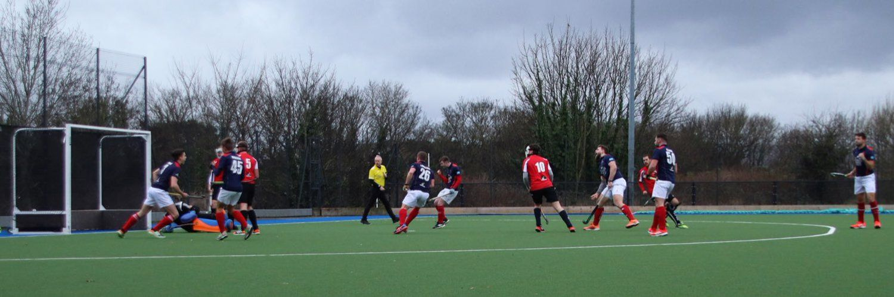
Clontarf Hockey Club
Clontarf Hockey Club runs a welcoming and fun junior hockey programme for both boys and girls, from Junior Infants to 6th Class. Sessions are held at Mount Temple Comprehensive School, with groupings based on age and gender to support development and enjoyment. Session times: 10:45-11:45am, 5th & 6th Class Girls; 12:00-12:45pm, Junior & Senior Infant Girls; 12:00-1:00pm, 1st-4th Class Girls; 1:00-1:45pm, Junior & Senior Infant Boys; 1:00-2:00pm, 1st-6th Class Boys.
View full details →

CoderDojo
CoderDojo believes that an understanding of programming languages is increasingly important in the modern world, that it’s both better and easier to learn these skills early, and that nobody should be denied the opportunity to do so! Any young person aged 7 – 17 can join and attend a Dojo for FREE! At a Dojo they will learn skills such as building a website, creating an app or a game, and explore technology in an informal, creative, and social environment.
View full details →Crumlin GAA Club
Crumlin GAA is a welcoming, family-focused club offering Gaelic football, hurling, and camogie for boys and girls from age 4. Their Academy/Nursery runs Wednesdays at 5:30pm and Saturdays at 10am in Pearse Park, focusing on fun, skill development, and teamwork. Juvenile teams (U8-U16) follow an ‘everybody plays’ policy, ensuring all children get involved.
View full details →Curtain's Up Drama School
Curtain’s Up Drama School provides small class sizes and individual attention to students from 4yrs and up. The aim of the school is to create a safe and structured environment where participants can play and create. Classes include poetry and scripted performance in preparation for the Irish Board of Speech and Drama exams and our showcase, as well as work on improvisation, communication, creative drama, vocal technique, confidence building, mime and imagination.
View full details →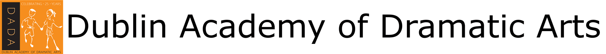
DADA
DADA has been nurturing young talent for 25 years, offering a wide range of classes for kids aged 3 to 18. Led by Hilary Cahill, their experienced and dedicated teaching staff focus on building confidence and creativity in a safe, fun environment. Students have the chance to perform in the annual show at the Civic Theatre, with recent productions including Oliver!, Chitty Chitty Bang Bang, Matilda, and Bugsy Malone. Plus, advanced students in 'Your Theatre' take part in their own productions at Smock Alley Theatre, with past shows like Into The Woods and The Secret Garden.
View full details →

Dance Sport
Whether your child is interested in learning hip hop, latin, ballroom or even stage and theatre, Kids Dance Classes have various styles to choose from. The earliest a child can start is 3. There are different age groups and levels. Simply get in touch and we will find a school that is close and suitable for your child or children.
View full details →Debbie Allen Dance School
The school provides classes in ballet, modern and tap for ages 3 ½ year and upwards. Classes are held in a friendly atmosphere, encouraging confidence and a love of dance. Pupils are entered for RAD and ISTD exams if they wish, which they encourage, as it gives them a goal. Taking exams improves the pupils technically, artistically and gives them confidence.
View full details →
Dlr Leisure
dlr Leisure provides a wide range of sports, from indoor and outdoor sports to water sports. All sports activities are delivered by quality coaches who make participation fun for everyone, no matter their current level of ability. All coaches are NGB qualified and Garda screened. Small groups at all sessions ensure maximum attention for all participants. dlr Leisure's Sports Section provides all sports equipment at the sessions, but it's important for parents/guardians to ensure their child is dressed appropriately to take part in the activity and to bring a non-fizzy drink with them. dlr Leisure also runs various kids' camps throughout the school holidays.
View full details →Dolphin Swim School
Dolphin Swim School has been a trusted name in Dublin's swimming community for over 40 years, offering expert-led swimming lessons for children of all ages and abilities. Founded by a former national champion swimmer, the school emphasises water safety, confidence, and skill development in a nurturing environment. With small class sizes and a low pupil-to-teacher ratio, each child receives personalised attention to thrive at their own pace. Lessons are conducted by fully qualified, Garda-vetted instructors, ensuring a safe and supportive atmosphere. Classes are held at multiple Dublin locations, including St Augustine's, Carmona School, Tullyvale Leisure Centre, and Islandbridge.
View full details →Dublin Cookery School
Dublin Cookery School offers hands-on culinary experiences for young food enthusiasts, with classes designed to build lifelong skills in a fun and supportive environment. Located in Blackrock, this award-winning school combines tradition with innovation to help kids and teens discover their passion for cooking. Join the Growing Gourmets Summer 2025 programme, with sessions available for both Juniors and Seniors. For those with a busy schedule, they've also introduced 2-day courses to fit in some quick culinary learning. With expert tutors guiding every step, students get the chance to create dishes from scratch and build confidence in the kitchen.
View full details →Dublin Stage School
Dublin Stage School offers acting, singing, and dance classes for young performers aged 4 to 18 in Blackrock, Killiney, and Castleknock. Their professional coaching helps build confidence and creativity in a fun, safe, and supportive environment. Students have the opportunity to perform at prestigious venues like the Bord Gáis Energy Theatre, The National Concert Hall, and The Gaiety Theatre. They have also appeared in major stage productions such as Miss Saigon, Les Misérables, Matilda, and Joseph and the Amazing Technicolor Dreamcoat, as well as TV and film projects including Vikings, Penny Dreadful, and Angela's Ashes.
View full details →Encore School of Performing Arts
With classes in Dance, Singing and Drama, as well as specialist Ballet, Vocal training, Hiphop, Advanced Drama and tots classes, Encore has a class for everyone. Located all around South Dublin, including Knocklyon, Dundrum (Taney and Mill Theatre), Sandyford, Rathfarnham and WestWood Leopardstown, they have classes every day of the week, in age groups from 3 to 18 years. Every single student has the opportunity to perform in our End of Year spectacular Shows at The Mill Theatre, Dundrum Town Centre.
View full details →

Faughs GAA
Faughs provides a fun and inclusive environment for children to learn and enjoy hurling and camogie. With teams from Under-8 to Under-16 and a thriving academy for younger players, the club focuses on skill development, teamwork, and a love for the game. Camogie has grown rapidly since joining Faughs in 2003, with teams now competing at all juvenile levels. The club's top-class facilities in Tymon Park, including a dedicated juvenile pitch, ball wall, and all-weather training area, offer young players the perfect space to train and improve.
View full details →First Swim
First Swim is Ireland's first purpose-built baby and toddler swim school, located in Sandyford, Dublin 18. Designed by parents for parents, it offers a warm, nurturing environment where little ones aged 10 weeks to 3 years can develop water confidence and essential safety skills. Classes are led by certified instructors in a 33°C pool, ensuring comfort for babies and toddlers alike. With spacious changing rooms, ample buggy parking, and an on-site café, First Swim provides a stress-free and enjoyable experience for families. Their structured programmes focus on bonding, sensory play, and building a lifelong love of the water.
View full details →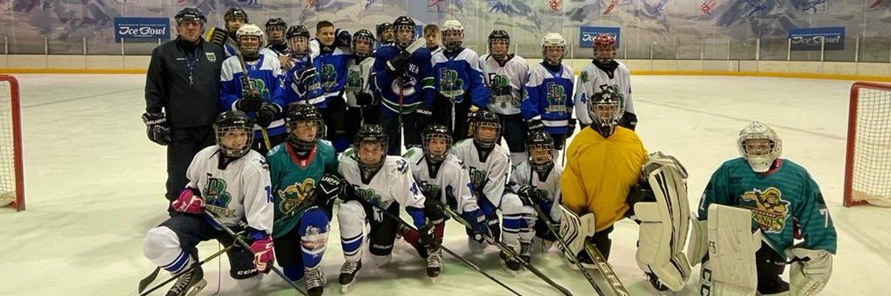
Flying Ducks
The Flying Ducks is a youth ice hockey and inline hockey club for boys and girls aged 5 and up, welcoming players from Dublin, Meath, Louth, and Kildare. The club offers both Learn-to-Play sessions for beginners and competitive teams from Under 10 to Under 18. Ice hockey training takes place from November to February on a temporary ice rink, while inline hockey training runs year-round at leisure centres in Dublin 15 and Gormanston, Co. Meath. Saturday training times: 09:15, Learn to Play & Development; 10:15, U13 & U15 Teams; 11:15, U18 & Senior Teams.
View full details →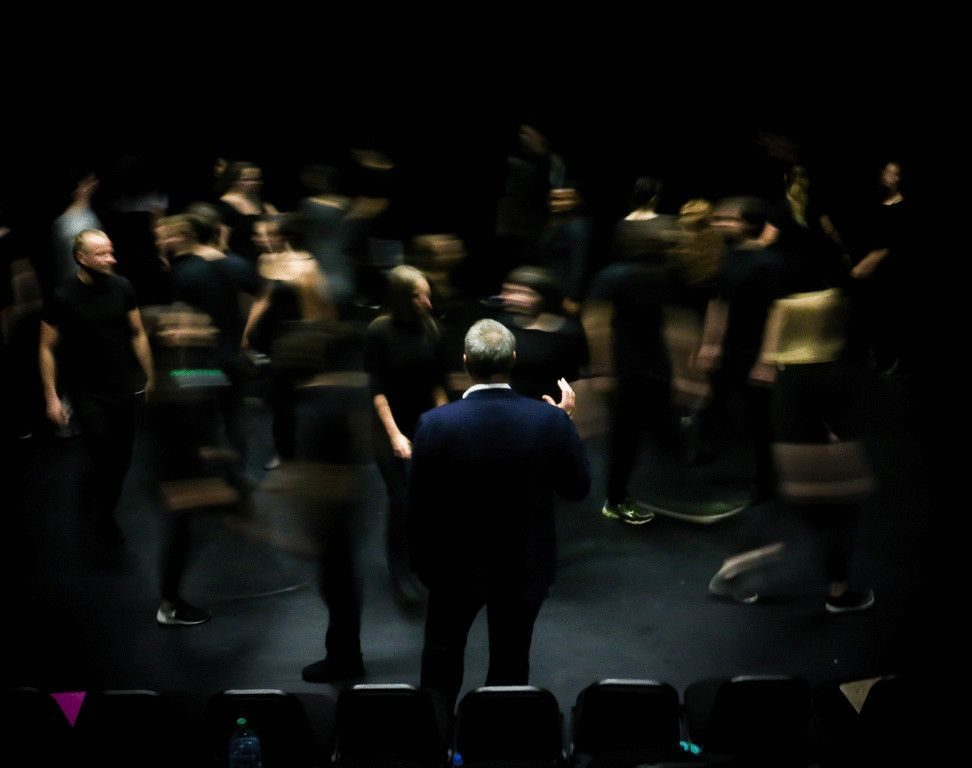
Gaiety School of Acting
The Gaiety School of Acting offers classes and drama for kids between 8 and 12 years old - have fun, meet new friends, gain confidence, and expand your little one's imagination. They offer several different courses, from the Young Gaiety Drama Workshop to an extensive list of acting summer camps to suit your budding thespians.
View full details →Genesis Hockey Club
Genesis Juniors is a thriving part of Genesis Hockey Club, welcoming girls from 1st class through to Under 16s. With over 380 junior members and 24 dedicated coaches, the club provides a safe, fun, and supportive environment for young players to learn, play, and grow through hockey. Training takes place on Sunday mornings for primary and secondary school groups at Mount Anville School, with U16 teams training and playing matches on Sunday afternoons at St Raphaela's School, Kilmacud. Beyond hockey, the club offers a vibrant social scene for juniors, with cinema outings, fun days, and trips that help foster friendships and team spirit.
View full details →GymStars
With locations in Ballinteer and Dublin 15, Gymstars Gymnastics provide a high-quality recreational gymnastics programme in which they encourage every child to have fun and do their very best. They are also a mobile company that brings the entire gym to locations convenient to you, coaching children in preschools, schools and community centres.
View full details →
Happy Cubs
Fun, confidence-building activities for your little ones with Happy Cubs. With swim classes and music classes across Dublin, Wicklow & Cork, they're all about helping babies, toddlers and preschoolers develop life skills at their own pace, through play, songs and plenty of smiles. Their Swim Cubs classes teach water safety, basic swim technique and confidence in the water, while Music Cubs gives kids aged as young as 3-6 months up to about 5-6 years a chance to explore rhythm, sounds and social connection with others. Whether your child is ready to splash or just loves to move and sing, it's a lovely way to bond, grow and have fun as a family.
View full details →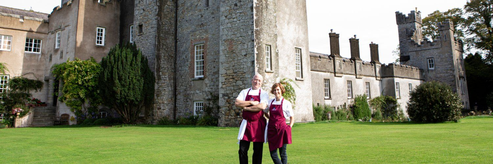
Howth Castle Cookery School
Howth Castle Cookery School offers hands-on workshops designed to inspire the next generation of chefs. Set in the magnificent castle kitchen, these 2-hour classes are perfect for teens and tweens looking to develop their cooking skills in a fun and engaging environment. Workshops cover a range of exciting cuisines, including Mexican street food, sushi, gourmet pizzas, Chinese street food, pasta making, and curry & naan, with new classes added regularly so there's always something fresh to try. No matter their experience level, young chefs will learn essential techniques from professional chefs, gaining confidence and independence in the kitchen.
View full details →Instituto Cervantes
Instituto Cervantes Dublin offers Spanish language courses for children and teenagers, helping them develop valuable language skills from an early age. Learning Spanish boosts educational success and future career prospects, as it's the second most widely used business language globally. Highly qualified native teachers use dynamic, communicative methods to make learning engaging and effective. Located in the heart of Dublin at Lincoln House, the school also offers access to an extensive library and cultural activities to enhance the learning experience.
View full details →
Inventor's Club
Inventors Club offers small, hands-on coding classes designed just for kids. With tiny class sizes, every student gets the attention they need to grasp new concepts and build confidence. Their teachers are not only programming experts but also great at making complex ideas easy to understand. Kids learn coding through fun, bite-sized lessons that keep them engaged and excited to create - perfect for curious minds who love to tinker and invent.
View full details →It’s a Small World
Little hands, big imaginations - where every visit is a new adventure: helping pets, building dreams, growing gardens, and taking the spotlight.
View full details →Kate Buckley School of Dance
Kate Buckley School of Dance provides ballet, modern jazz, hip-hop and tap dance classes for ages 3 years old to young adults, in Rathfarnham, Dundrum and Knocklyon. Classes are suitable for boys and girls of all abilities and levels, with the aim of giving pupils a love of dance. Pupils take part in shows, displays and YouTube videos, and can take RAD and ISTD dance examinations throughout the year, which gives students a goal and improves them technically and artistically while building confidence.
View full details →Kellystown Riding School
Kellystown Riding School's activities are oriented towards teaching the rider to progress in their equitation skills in a safe, fun and challenging environment. Every summer and public holiday season they run a programme of pony camps for children and young teenagers to learn first-hand the full joys and pleasures of equestrian companionship.
View full details →
Kevins
Kevins GAA Club provides hurling and camogie opportunities for children of all ages and skill levels. The club's ABC Nursery, open to boys and girls aged 4 to 7, focuses on agility, balance, and coordination through fun-based exercises that introduce the basics of the games in an engaging and supportive environment. Sessions take place at Loreto College on Crumlin Road every Saturday from 10:30-11:30am. Hurleys and helmets are provided for beginners. As children progress, they can join age-group teams that compete in hurling, camogie, and rounders.
View full details →
Kids Comp
KidsComp offers hands-on coding and robotics classes for children aged 5 and up. With a focus on interactive and fun learning, their classes help kids build problem-solving skills and gain confidence with technology. They offer in-person classes in community centres across Dublin, and online classes available nationwide. Led by coaches with computer science and maths backgrounds, KidsComp makes tech learning exciting and accessible for young minds.
View full details →

Kilmacud Crokes GAA
Kilmacud Crokes GAA Club provides a welcoming environment for children to learn and enjoy Gaelic games. The Nursery Programme, open to boys and girls aged 4 to 7, introduces them to Gaelic football, hurling, camogie, and ladies' football, with a focus on fun, skill development, and fundamental movement skills in a structured yet engaging setting. The club also offers a variety of summer camps, including inclusive programmes with Special Needs Assistants (SNAs) to ensure all children can participate. A highlight is the Mini-All Ireland Festival, where over 1,000 boys and girls take part in a friendly, community-driven competition.
View full details →
Kilronan Equestrian Centre
Kilronan Equestrian Centre in Swords, Co. Dublin, offers a welcoming environment for children to learn horse riding and equestrian skills. With highly trained instructors and well-mannered, well-schooled horses and ponies, Kilronan ensures a safe and enjoyable experience for riders of all levels. As an AIRE-approved centre, Kilronan prides itself on maintaining high standards of care and customer service. The family-run atmosphere and beautiful setting make it a unique place to learn and grow in the world of horse riding.
View full details →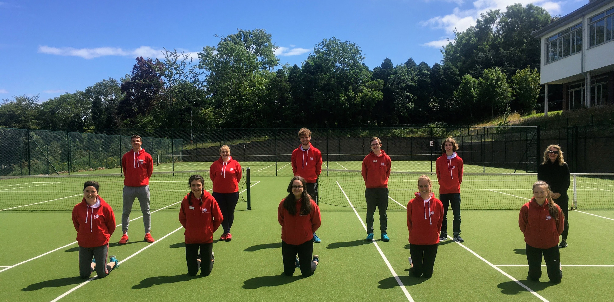
LC Tennis Academy
LC Tennis Academy offers a 30-minute Junior Intro Class for children new to tennis. For just €10, kids get a taste of the fun drills and games used in regular coaching, while parents can meet the coaches and ask questions - this session helps determine the best group for your child's level and interests. After the intro class, children can join the Junior Coaching Programme, which includes 11 weeks of coaching, 1 Team Tennis Event to practise skills in a friendly competition, 1 Family Social Event to enjoy tennis together, and 1 court booking for extra practice.
View full details →

Language Explorers Workshops (For families with children 3 to 6 years old)
Language Explorers is Mother Tongues' programme, designed for children aged 3 to 6 and their families. Facilitated by our specially trained multilingual artists, the Language Explorers workshops create a welcoming space for families from all linguistic and cultural backgrounds. Each session invites children and their adults to connect with their language(s) through storytelling, play, visual arts, music and movement. Our artists create a space full of imagination and creativity, in which speaking and listening to languages is fun and something to be proud of. Families take part in high-quality artistic activities while sharing and exploring the diversity of languages in the room, inspiring multilingual families and those curious about other languages and cultures. Workshops are delivered in English, and families are warmly encouraged to bring any and all languages they speak. Whether your child is fluent, just starting to learn, non-speaking, or communicates in a different way, this space is for you. View upcoming family workshops: https://mothertongues.ie/language-explorers-early-years/
View full details →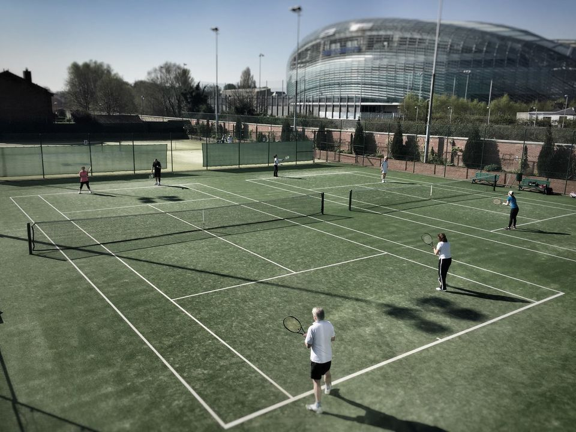
Lansdown Lawn
Lansdowne LTC runs a Junior Tennis Programme alongside the school year, offering group coaching from September to June and holiday camps during school breaks. The programme welcomes all levels, from complete beginners to experienced young players. Located in Ballsbridge, the club features 10 all-weather floodlit courts, a practice court, and a modern clubhouse with excellent viewing facilities. Lansdowne also hosts a variety of social and competitive events throughout the year, including the Leinster Junior Open Championships and other fun tournaments that help juniors stay active and involved in the sport.
View full details →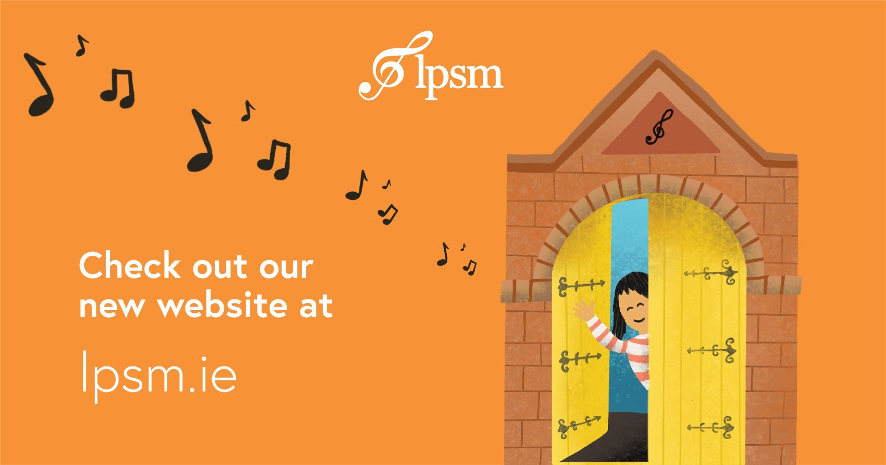
Leeson Park School of Music
Music Kindergarten takes the young child on a wonderful adventure through 'Musicland', where their sense of pitch and rhythm is developed alongside training of the inner ear. All classes introduce different musical concepts such as pitch, rhythm, melody, dynamics, tempo, character, form and style, in a playful way through a carefully chosen selection of well-known rhymes and children's songs. Music Kindergarten classes (1-4 years) take young children on this adventure through 'Musicland' via the Colourstrings approach. The Pre-Instrumental Programme (4-7 years) is the after-school introductory music class, a 2-year programme - these weekly classes allow children to attend on their own, which encourages them to build a relationship with music.
View full details →

Lucan Sarsfields GAA
Lucan Sarsfields GAA Club offers a welcoming environment for children born in 2018, 2019, 2020, and 2021 to get involved in football, hurling, ladies' football, and camogie. The club's academy is designed to introduce children to Gaelic games, focusing on developing fundamental skills, teamwork, and providing a fun and supportive setting. The academy helps children build coordination, confidence, and a love for the sport while encouraging participation and inclusivity. With a strong emphasis on creating a sense of community, Lucan Sarsfields is committed to nurturing the next generation of players and helping them grow both in sports and as individuals.
View full details →
Me & You Music
Me & You Music (suitable from 4 months to 6 years) is about playfully introducing the wonderful world of music and encouraging children to sing, dance, explore and, most importantly, have fun. Mischa takes her music classes and workshops all around Dublin.
View full details →

Mel Ryan School
Mel Ryan School offers a vibrant mix of dance, drama, and singing classes for children of all ages, with a warm, family-friendly atmosphere that encourages confidence and creativity. Based in Dublin, the school blends professional training with a focus on fun, ensuring every child feels welcome whether they’re taking their first steps in ballet or performing on stage. Classes are taught by experienced teachers who nurture both skills and self-expression, making it a perfect choice for young dancers who want to learn, grow, and shine.
View full details →
Messy Fun
Messy Fun is a sensory play class designed especially for babies and toddlers that gives children the opportunity to experience a wide range of sensory experiences. Prepared solutions such as fingerpaint, slime and gloop give children a wonderful opportunity to experiment with different textures and materials. During messy play, babies and toddlers develop eye-hand coordination and fine motor skills - what looks like a mess on the surface is truly a learning experience for your child. For adults, messy play can be a lot of work and feel stressful, but early childhood education experts say that play is the work of the child, especially for babies and toddlers - don't be afraid of the mess, roll up your sleeves and enjoy some messy play time with your little one. Keep an eye on Messy Fun's social media pages for themed events throughout the year (Halloween, Easter etc.).
View full details →

Mimi's French Classes
Muckross Park Gymnastics provides a range of gymnastics classes from Preschool Gymnastics to Adult Gym Classes. The majority of their gymnasts take part in a one-hour class per week. They also offer Preschool Gymnastics classes on Tuesday & Thursday afternoons at SportsCo.
View full details →

Mini Music Academy
Mini Music Academy, at The Castleknock School of Music, is an exciting, structured and educational music programme for children aged 6 months to 7 years. MMA provides your child with a fantastic opportunity to develop a love and understanding of music through an innovative and proven method of teaching. Classes are fun and educational, providing the foundation for your child's continued musical education - all the songs have been specially composed for the MMA series of classes. Busy Babies is a fun and educational music class for ages 6-24 months. Bonnie Bluebirds is the class for 2-3 years. Red Robins is the class for 3-4 years.
View full details →Monkstown Hockey Club
Monkstown Hockey Club's Academy is home to over 650 young players, with around 200 boys and 450 girls, aged 6 to 16. With a strong focus on fun, skill development, and team spirit, the Academy has been a core part of the club for over 50 years, creating a pathway from junior hockey to senior success. Training sessions are held across multiple pitches, and teams take part in regular matches and blitzes, following the IHA's Hooked for Life model. The Academy prioritises small-group coaching, player progression, and, most importantly, a safe and enjoyable environment.
View full details →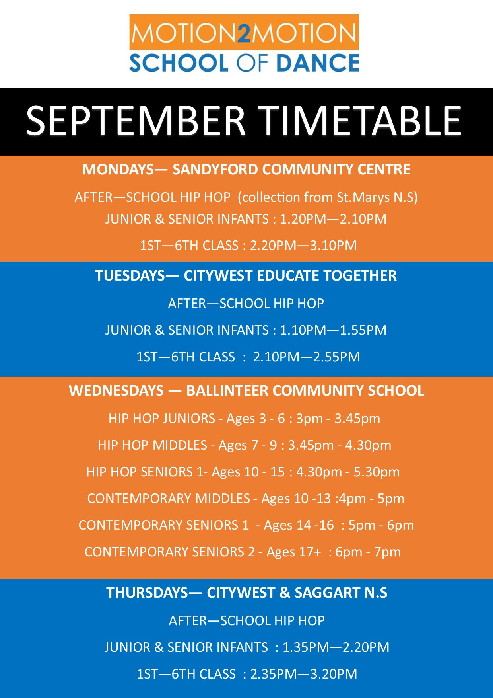
Motion2Motion School of Dance
Motion2Motion School of Dance offers classes in hip hop, jazz, contemporary and cheerleading for boys and girls aged 3 and up. The classes are fun, energetic and creative, aiming for each student to explore and release their full creative potential and open their imaginations to a fun way of learning dance.
View full details →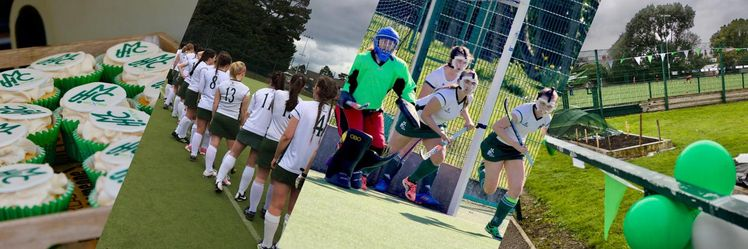
Muckross Hockey Club
Muckross Hockey Club's thriving Junior Section welcomes girls from 1st class to 4th year, offering a fun, inclusive introduction to hockey built on friendship, teamwork, and community spirit. Sessions run weekly, with Sunday morning Academy Hockey for younger age groups and Friday evening training for older players. Many juniors go on to join the club's senior squads, staying involved through their teens, college years, and beyond. Junior membership applications open each May for the season beginning in September - if applications exceed available spots, places are allocated by lottery.
View full details →
Muckross Park Gymnastics
At Muckross Park Gymnastics they provide a range of gymnastics classes from Preschool Gymnastics to Adult Gym Classes. The majority of their gymnasts take part in a one-hour class per week. They also offer Preschool Gymnastics classes on Tuesday & Thursday afternoons in SportsCo.
View full details →NPAS
The National Performing Arts School is located in the Docklands and Sandymount, and is open to students aged from 2 to 22 years old. Drama/acting classes include dramatic play, story enactment, imagination journeys, improvisation, theatre games, music, and dance - 'let's pretend' is the norm in creative drama class, not just a child's game. A show is performed in the Olympia Theatre every two years.
View full details →National Gallery of Ireland
Admission is free. The National Gallery of Ireland, right in the heart of Merrion Square, is a brilliant stop for families. Entry is free, and kids will love wandering through the bright galleries filled with colourful paintings and fascinating portraits. The gallery also runs creative workshops and family-friendly tours, making art feel accessible and fun for all ages. The Early Years, Children and Families Programme plays a major part in encouraging learning through art at the National Gallery of Ireland. This programme is for all the family, from babies and toddlers to younger teens and their parents/guardians, embracing play, enquiry, problem solving, independent thinking and collaboration through multi-disciplinary sensory activities responding to the national collection. The programme includes general activities on site for everyone, from seasoned museum visitors to tourist families on holiday. The gallery offers drop-in workshops, tours and activities, all with a family focus. The Atrium Creative Space is open every day, and free art packs are available. There are also scheduled workshops and events, designed with age-appropriate learning in mind. The gallery is currently developing an online strand for Early Years, Children and Families, which aims to take learning through art out of the gallery and into the home. After your visit, you can pop across to Merrion Square Park for a run-around - the perfect mix of culture and playtime.
View full details →National Sports Campus
The National Sports Campus runs a Pre-School Gymnastics Academy for 2-5 year olds, linking the development of fundamental movements for child development with fundamental gymnastics. Kids progress at their own rate, and the programme allows for individual differences in each participant's rate of achievement. The Gymnastics Academy for 6+ focuses on developing a wide range of gymnastic movements through structured classes, incorporating large periods of gymnastic skill acquisition across various pieces of apparatus. They also run a Trampoline Academy for 6-12 year olds.
View full details →
Newpark Music Centre
Early years music education is essential for a child's development, fostering a lifelong love of music through singing, playing instruments, or listening. Newpark Music Centre offers a gentle introduction to music, percussion, storytelling and rhythm for children aged 3 months to 7 years, accompanied by an adult. Classes are 45 minutes each, over 30 weeks, and grouped according to age: Newpark Nippers (3 months-4 years), Gateway to Music (4-6 years), and Gateway to Instruments (5-7 years).
View full details →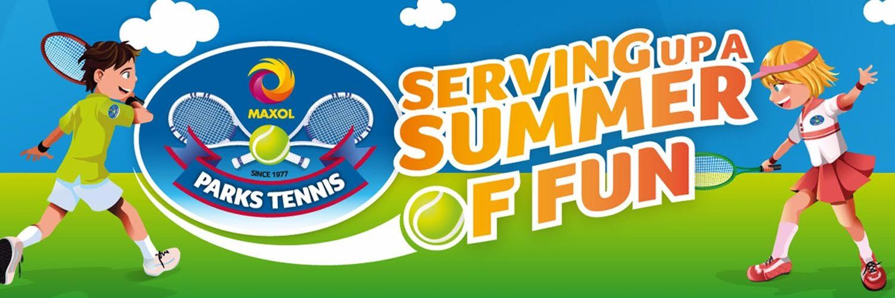
Parks Tennis
Parks Tennis Ireland is a non-profit-making company in operation for 40 years, run by 28 volunteers and supported by various organisations, such as the national governing body Tennis Ireland, Sport Ireland, and various local authorities. The aim is to provide tennis at a very low cost to children not otherwise exposed to the game, from all social and ethnic backgrounds, during the long summer holidays. The total audience is over 250,000 through the distribution of application forms, with over 20,000 children taking part in the programme annually.
View full details →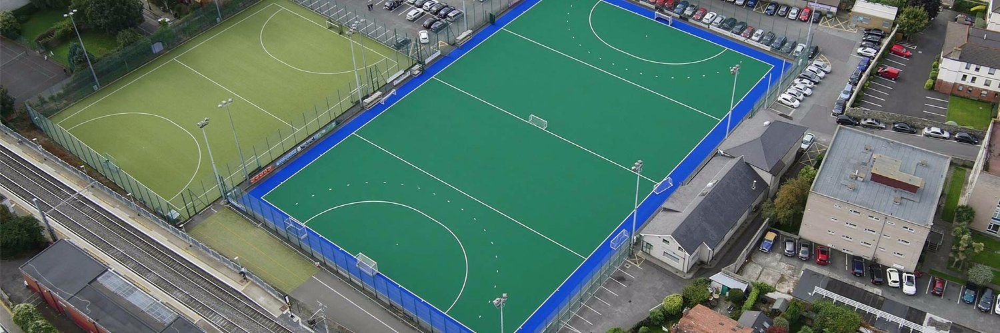
Pembroke
Pembroke Juniors provides a safe, respectful, and supportive environment for young players to develop both individual and team hockey skills. Welcoming boys and girls from Junior Infants to 4th Year (boys) and 6th Year (girls), the focus is on learning, fun, and personal growth through sport. Coaches promote teamwork, sportsmanship, and respect, while offering high-quality, enjoyable training for all levels. The regular season runs from September to April, with plenty of weekend hockey, and summer activities including youth tournaments and social mixed-gender games.
View full details →Petit Volant
Bring your child to fly! The world-renowned Petit Volant offers aerial silks classes that build strength, body confidence, and imagination, all in a fun and safe environment with experienced coaches, making sure your child has a great experience in the air. Perfect for curious kids and teens, these dynamic sessions bring creativity and movement to new heights. Petit Volant (Little Flyers) has been running in Dublin for 10 years, under the expert eye of instructor and aerialist Mari Rampazzo. See the website for info and booking details.
View full details →

PlayAct Drama School
PlayAct Drama School offers dynamic and creative drama workshops where kids and teens can build confidence, express themselves, and make new friends. Through acting, writing, and creating props, students develop social skills and learn to communicate in a fun and relaxed environment. The workshops are designed to meet students where they are, focusing on their interests and strengths to help them grow and explore their creativity - it's all about adventure, discovery, and learning through play.
View full details →Railway Union Hockey Club
Railway Union Hockey Club has a long-standing tradition of family and community values, earning its reputation as 'the family club' in Irish hockey circles. The junior section is open to boys aged 5+ and girls from 1st class (age 7+), offering a supportive and fun environment to learn and enjoy hockey. With a strong focus on playing the game the right way, the club fosters respect, teamwork, and a lifelong love of the sport.
View full details →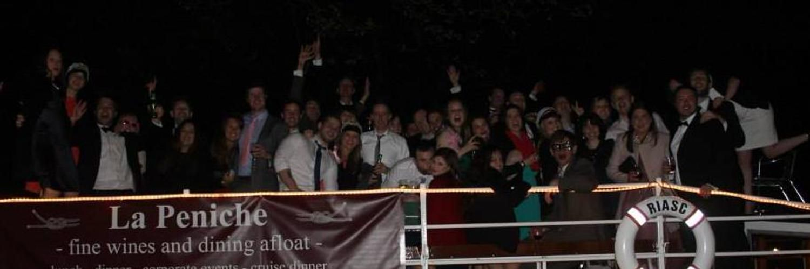
Rathgar Hockey Club
Rathgar Hockey Club offers a fun and inclusive environment for girls from 1st class through secondary school and boys from U8s to U12s. With a focus on learning, teamwork, and enjoyment, the club welcomes both beginners and experienced players. Training takes place at The High School, with sessions on Mondays (6:30-7:30pm): 6th Class & Minor Girls, U12 Boys; Fridays (6:30-7:30pm): Senior Infants to 5th Class Girls, U8 & U10 Boys; and Sundays: blitzes and matches.
View full details →
Skerries Sailing Club
Skerries Sailing Club (SSC) located off the coast of north County Dublin, offers a wide variety of classes. SSC Clubhouse Dinghy and keelboat racing for adults and juniors takes place up to three times weekly in season. SSC prides itself on its friendly atmosphere. Newcomers to sailing are warmly welcomed.
View full details →Splashtastic
Splashtastic Swim School offers high-quality children's swimming lessons in North Dublin, catering to kids aged 3.5 and up. Operating exclusively on Saturdays at St Michael's House Leisure Centre in Belcamp, the school provides a structured, fun, and supportive environment for swimmers of all levels. Classes range from beginner levels like Star Fish, focusing on water confidence and basic skills, to advanced levels such as Orca, where children refine all four competitive strokes and build stamina. For children requiring additional support, Dolphin classes offer small group sessions with a 4:1 student-to-teacher ratio, accompanied by a parent or guardian. Splashtastic also provides one-to-one lessons tailored for children with special needs. With experienced instructors and a commitment to safety and enjoyment, Splashtastic is a trusted choice for families in areas including Portmarnock, Swords, Malahide, and Donaghmede. Due to high demand, classes often fill quickly, but a waitlist is available for interested families.
View full details →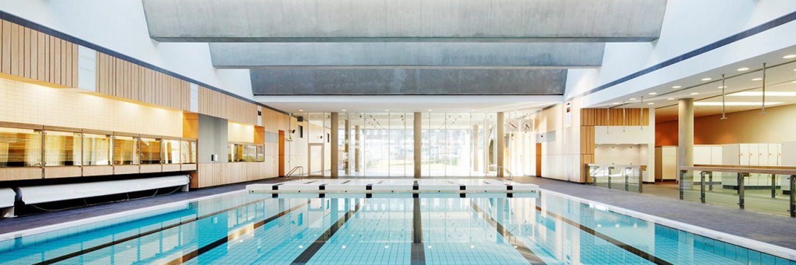
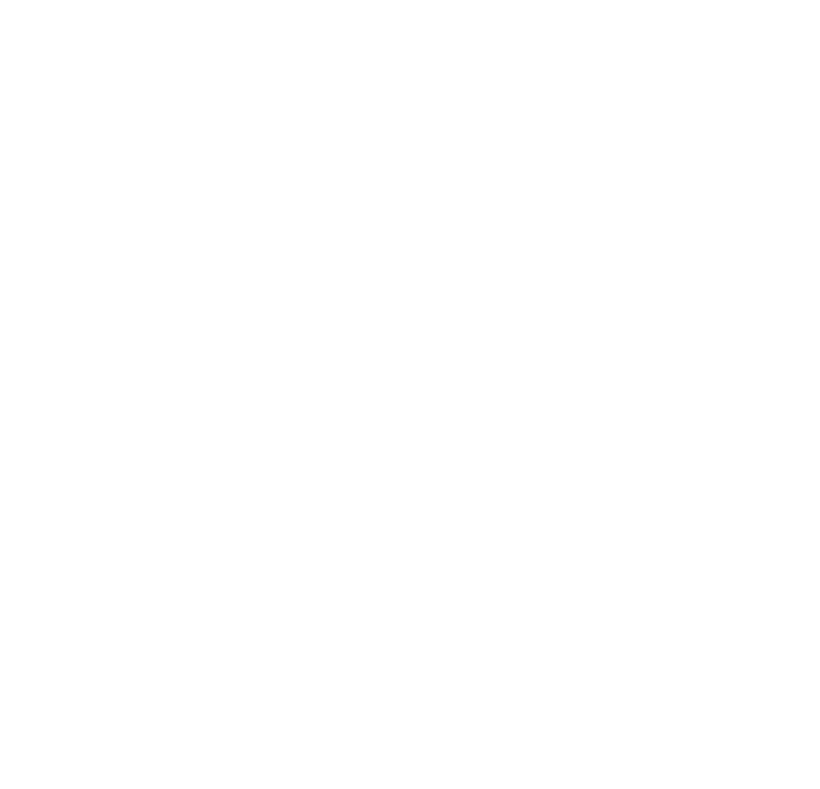
Swan Leisure
Swan Leisure in Rathmines offers high-quality children’s swimming lessons in a welcoming, family-friendly environment. With a strong focus on water safety, skill development, and fun, their structured programme supports swimmers of all levels—from beginners to more advanced. Led by experienced instructors, Swan Leisure’s lessons take place in a modern, well-maintained pool with a warm and supportive atmosphere that encourages confidence and progression. Conveniently located and loved by local families, it’s an ideal spot for children to learn essential swimming skills while enjoying every splash along the way.
View full details →

Swim Camp
SwimCamp at Castle Park School in Dalkey offers fun and engaging swimming lessons for kids of all abilities. With professional instructors and a welcoming, stress-free environment, your child will build confidence, stamina, and technique while having a blast. Parents love the patient approach that makes swimming enjoyable, even for kids who’ve struggled with lessons before.
View full details →Swim Stars
Swim Stars offers fun, confidence-building swimming lessons for children of all ages and abilities across multiple Dublin locations. Their structured programmes are led by experienced, fully qualified instructors who create a warm and supportive environment where children feel safe and encouraged. From first splashes to advanced strokes, Swim Stars focuses on developing strong swimming skills through positive reinforcement and small class sizes. Whether your little one is a beginner or ready to improve their technique, Swim Stars makes learning to swim an enjoyable and rewarding experience.
View full details →

Tempo Music School
Tempo Music School offers music appreciation classes for children and parents together in our Baby Beats and Mini Beats classes. 'Baby Beats' is a fun and interactive music class for young children between 9 months and 3 years of age - our super friendly facilitator will awaken the musicality in children using song and percussion. In the 'Mini Beats' class, kids from 4 to 6 years old experience a wide range of instruments, songs and compositions in a comfortable class setting, while having plenty of fun doing so. Benefits to the children include exercising their sensory motor ability, developing coordination, rhythm, listening and speaking, while promoting interaction between the children, and also between the child and their parent. Music appreciation classes also prepare children for an instrument class in the future, as kids will be introduced to strings, percussion and wind instruments. Class structure: a Welcome Song, a delightful way to start the session and help your child feel comfortable; Nursery Rhymes, singing along to classics that engage your baby's listening and language skills; Sound Exploration, introducing your child to new sounds with percussion instruments; Action Songs, enjoying dynamic and interactive movements with music; and a Goodbye Song, ending the class on a positive note with a fun and soothing farewell.
View full details →Tennis4Kids
Tennis4Kids is a specially designed programme for children aged 5 to 12, helping kids of all abilities enjoy and learn tennis in a fun, supportive environment. Using smaller courts, softer balls, and junior-sized rackets, children can develop skills at their own pace while building confidence and coordination. The friendly coaching team gets to know each player, encouraging progress and a love for the game - perfect for beginners and experienced young players alike.
View full details →

The Academy of Code
The Academy of Code offers coding courses for kids and teenagers aged 8-18 years in venues throughout Dublin. They de-mystify programming and technology, helping students see programmes, websites, apps and all sorts of gadgets and devices not as magical black boxes, but as relatable pieces of technology.
View full details →

The Gers
Geraldines P. Moran GAA Club, known as The Gers, is a well-established GAA club based in Cornelscourt-Foxrock, Dublin. With a strong focus on community, teamwork, and fun, the club provides a safe and inclusive environment for children of all ages to develop their skills in Gaelic football and hurling. With 29 thriving teams, The Gers is always open to new members, whether your child is a complete beginner or an experienced player. The club is dedicated to fostering a love for Gaelic games while helping young players build confidence, friendships, and a strong team spirit.
View full details →
The Paddocks Riding Centre
The Paddocks Riding Centre, located high in the Dublin Mountains, is a family run horse riding centre with stables and facilities to house a large number of horses. Get out of the city and enjoy some riding lessons, or a one/two hour trek through the Dublin mountains enjoying the amazing views and beautiful scenery. They also host birthday parties.
View full details →Three Rock Rovers
Three Rock Rovers (TRRHC) runs one of Ireland's most active youth hockey programmes, with over 350 boys and girls aged 5 to 16 training every weekend from August to March. With more than 16 hours of hockey each weekend, the club offers expert coaching in a fun, welcoming, and inclusive environment. The youth section includes dedicated goalkeeping sessions with high-quality coaching and equipment. With top-class facilities at Grange Road and a long-standing hockey tradition, Three Rock Rovers is a great place for young players to learn, grow, and enjoy the sport.
View full details →Trojan Gymnastic Academy
Trojan Gymnastics Academy offers 3 fun opportunities to play and learn. Bambinos Play Session (closed July & August, reopening Tuesday 9th September 2025) is a great way to let loose, have fun, and connect with your child - an open play session in which your little one can roam freely, exploring the gym by running, climbing, jumping, balancing and more, and socialising with other children. In these sessions, children must be supervised at all times by a parent, as an instructor will not be present. Tiny Tumblers gymnastics classes are for two-year-olds, lasting 30 minutes and suitable for both boys and girls - these sessions help develop your child's resilience and self-confidence, with experienced staff bringing a friendly, fun and caring element. The structured lessons make use of preschool gymnastics equipment, teaching aids, and a range of miniature obstacle courses, perfect if they have a lot of energy to burn off. Tumble Tots gymnastics classes are ideal for children aged 2.5 to 4.5, with small group classes lasting 45 minutes, suitable for both girls and boys. Tumble Tots classes help develop your child's balance and strength, and increase flexibility and improve coordination, key skills for supporting your child's growth. The obstacle courses, gymnastic rolls and balancing work teach your child how to work independently as well as in a group - a great way to reduce separation anxiety and encourage your child's emotional development.
View full details →Westwood Club
West Wood Club offers expert-led children's swimming lessons across three premier Dublin locations: Clontarf Road, Leopardstown, and Westmanstown. With over 25 years of experience, their structured programme caters to all ages and abilities, guiding children through nine progressive levels, from first splashes to mastering strokes like butterfly and breaststroke. Classes are divided by ability rather than age, ensuring each child receives personalised instruction in small groups led by qualified and experienced teachers. Free assessments help place your child at the right level, and all lessons adhere to Swim Ireland guidelines. With a focus on fun and safety, West Wood Club provides a supportive environment where children can build confidence and enjoy their swimming journey.
View full details →

Young Chef at Airfield Estate
Airfield Estate's Young Chef Workshops offer a hands-on cooking experience for budding chefs aged 8-12. Set in the beautiful Inspiration Kitchen, overlooking the estate's food garden, kids will learn to create wholesome, seasonal meals using ingredients grown on site whenever possible. Led by experienced educators, these Sunday workshops (10am-12:30pm) cover both sweet and savoury dishes, helping young chefs develop practical cooking skills and a deeper connection to fresh, sustainable ingredients.
View full details →iSwim Academy
iSwim Academy in Dublin offers swimming lessons designed to promote a healthy lifestyle and support children's physical, mental, and social development. Classes are divided by age and skill level, with small group sizes to ensure personal attention and allow kids to learn at their own pace. The focus is on making swimming enjoyable and building confidence in the water.
View full details →Turtle Tots
Teach your little one a skill for life with our inspiring and supportive baby, toddler, and preschool swimming lessons. From the first dip of the toe, Turtle Tots is a magical journey between parent and child. Develop water confidence, safety, and swimming skills through our unique and multi award-winning, child-led programme.
View full details →Finglas Sensory Sessions/ Baby Book Club - Finglas Library
Location: Finglas Library, Seamus Ennis Road, Dublin 11. Contact: 01 222 8330 / finglaslibrary@dublincity.ie. Baby Book Club: the perfect place to relax with your little one (perfect for 0-2 years) and listen to some stories, and pick up some books to borrow and bring home - booking is advised. Time: Tuesday and Thursday mornings from 10am. Cost: free. Sensory Library Sessions: the library provides a special sensory room, including a soft play area and the interactive Tovertafel games console, in addition to dimmed lighting, lowered noise, and reduced sensory triggers. Time: Saturdays, 10-11.30am. Cost: free.
View full details →Stretch n Grow Parent & Me Fun Fitness
Our Parent and Me Fun Fitness classes take place every Saturday morning at 9.15am in Kilternan Parish Centre, suitable for all little ones once they are walking. These fun Fitness Stars classes are non-stop, action-packed fun. We use props, music, imagination, obstacle courses, games and parachute fun to get little hearts and lungs pumping while strengthening muscles and improving flexibility. We hope to further develop motor skills through instruction, practice and fun.
View full details →Water Babies -Dublin
There are so many benefits to baby swimming - not only are our lessons brilliant for your child's development, they're also the perfect place to bond with your little one. Classes are 30 minutes long, with a maximum of 10 children (one carer per child) per class, teaching water skills through song, play and repetition.
View full details →Leopardstown Lawn Tennis Club
Junior tennis development programme at a long-established family tennis club with floodlit courts, offering coaching for children and teens from complete beginners to competitive players.
View full details →West Wood Club Leopardstown
Week-long summer tennis camp for children held inside Ireland's largest indoor tennis centre, combining coaching, games and skill-building for young beginner-to-intermediate players.
View full details →Donnybrook Lawn
Donnybrook Lawn Tennis Club offers a welcoming and inclusive environment where children of all ages and skill levels can enjoy and improve their tennis in a fun, relaxed setting. The Junior Programme supports both social and competitive play through regular events like Super Saturdays, Round Robin tournaments, Play & Pizza nights, and inter-club matches. Additional sessions are organised as needed, including match practice ahead of tournaments or league play. During school breaks, Donnybrook runs junior tennis camps in February, Easter, and summer. The Junior Club Championships in late August are a highlight of the year, giving young players a chance to compete and celebrate their progress.
View full details →Rathgar Tennis Club
Rathgar Tennis Club offers a fun, safe, and supportive environment for children and teenagers of all ages and skill levels. Junior members can enjoy year-round coaching, make friends and stay active. Led by coach Jamie Pilkington and a dedicated team, the Junior Programme follows the school calendar with three terms of group lessons each year. Using the ITF Tennis 10s approach, younger players benefit from short courts and low-bounce balls to help them learn effectively. Lessons are tailored by age and ability, and older juniors can join one of three squad groups for additional coaching and up to eight hours of weekly training.
View full details →Stratford Lawn
Stratford LTC offers year-round junior coaching on four floodlit all-weather courts, with access to four grass courts during summer. Coaching is available for children aged 5 and up, with lessons grouped by age and skill level. Classes follow the school year in 6-week blocks, focusing on technique, drills, and gameplay. Each 60-minute session uses the ITF Tennis 10s system, with red, orange, and green balls to support skill development. Summer camps replace weekly lessons during school holidays. All coaches are experienced, Garda vetted, and trained in child safeguarding.
View full details →Archaeology Camps – Booking Now
Our camps provide a fascinating alternative to sports-themed camps and other school break activities for children aged 7-12 years old. If your child is a curious explorer with a thirst for knowledge about the past, this is the camp for them! Running all year round, the camps introduce children to the mysteries and adventures of our past in a fun, practical and hands-on way that sparks their imagination.
View full details →Archaeology Camps – Booking Now
Our camps provide a fascinating alternative to sports-themed camps and other school break activities for children aged 7-12 years old. If your child is a curious explorer with a thirst for knowledge about the past, this is the camp for them! Running all year round, the camps introduce children to the mysteries and adventures of our past in a fun, practical and hands-on way that sparks their imagination.
View full details →Archaeology Camps – Booking Now
Our camps provide a fascinating alternative to sports-themed camps and other school break activities for children aged 7-12 years old. If your child is a curious explorer with a thirst for knowledge about the past, this is the camp for them! Running all year round, the camps introduce children to the mysteries and adventures of our past in a fun, practical and hands-on way that sparks their imagination.
View full details →Archaeology Camps – Booking Now
Our camps provide a fascinating alternative to sports-themed camps and other school break activities for children aged 7-12 years old. If your child is a curious explorer with a thirst for knowledge about the past, this is the camp for them! Running all year round, the camps introduce children to the mysteries and adventures of our past in a fun, practical and hands-on way that sparks their imagination.
View full details →Archaeology Camps – Booking Now
Our camps provide a fascinating alternative to sports-themed camps and other school break activities for children aged 7-12 years old. If your child is a curious explorer with a thirst for knowledge about the past, this is the camp for them! Running all year round, the camps introduce children to the mysteries and adventures of our past in a fun, practical and hands-on way that sparks their imagination.
View full details →Baby Sensory Ireland
An educational, interactive and developmental programme which will help your baby learn and develop important skills. Classes are built on your baby's natural play-rest-play cycle to ensure they are not overstimulated. Classes are located in multiple locations across Ireland - please see the website for dates and times. Classes are also run during school term time. An ideal place to meet new parents, ask questions, and share ideas, experiences and memories together.
View full details →Baby Sensory Ireland
An educational, interactive and developmental programme which will help your baby learn and develop important skills. Classes are built on your baby's natural play-rest-play cycle to ensure they are not overstimulated. Classes are located in multiple locations across Ireland - please see the website for dates and times. Classes are also run during school term time. An ideal place to meet new parents, ask questions, and share ideas, experiences and memories together.
View full details →Baby Sensory Ireland
An educational, interactive and developmental programme which will help your baby learn and develop important skills. Classes are built on your baby's natural play-rest-play cycle to ensure they are not overstimulated. Classes are located in multiple locations across Ireland - please see the website for dates and times. Classes are also run during school term time. An ideal place to meet new parents, ask questions, and share ideas, experiences and memories together.
View full details →Baby Sensory Ireland
An educational, interactive and developmental programme which will help your baby learn and develop important skills. Classes are built on your baby's natural play-rest-play cycle to ensure they are not overstimulated. Classes are located in multiple locations across Ireland - please see the website for dates and times. Classes are also run during school term time. An ideal place to meet new parents, ask questions, and share ideas, experiences and memories together.
View full details →

Bloom Baby Classes Wicklow and South Dublin
Classes suitable from 6 weeks to 14 months, or until baby begins to confidently walk. Venues in Dun Laoghaire, Blackrock, Mount Merrion, Bray, Greystones, Wicklow Town & Arklow. We use catchy music and beautiful bespoke props to support baby's development in all areas. With a strong focus on parent and baby bonding, we encourage lots of eye contact and cuddles throughout class. There is also time for those much-needed mum chats, of course!
View full details →Bloom Baby Classes Wicklow and South Dublin
Classes suitable from 6 weeks to 14 months, or until baby begins to confidently walk. Venues in Dun Laoghaire, Blackrock, Mount Merrion, Bray, Greystones, Wicklow Town & Arklow. We use catchy music and beautiful bespoke props to support baby's development in all areas. With a strong focus on parent and baby bonding, we encourage lots of eye contact and cuddles throughout class. There is also time for those much-needed mum chats, of course!
View full details →Bloom Baby Classes Wicklow and South Dublin
Classes suitable from 6 weeks to 14 months, or until baby begins to confidently walk. Venues in Dun Laoghaire, Blackrock, Mount Merrion, Bray, Greystones, Wicklow Town & Arklow. We use catchy music and beautiful bespoke props to support baby's development in all areas. With a strong focus on parent and baby bonding, we encourage lots of eye contact and cuddles throughout class. There is also time for those much-needed mum chats, of course!
View full details →Butterfield Wellness Learn to Swim Classes for Kids
Our kids' classes are perfect for complete beginners to improvers. Classes are small (8:1 teaching ratio) and taught by experienced teachers, ideal for little ones new to classes or looking to gain more confidence. We teach using fun activities, building confidence to help them learn to love the water and develop into competent, happy little swimmers. We teach from age 4 up. Weekly 30-minute classes, 10 weeks at €130, with a 5% sibling discount. To register your interest, visit our website. Camps are also available.
View full details →ClapHandies PlayLabs - Dublin
The PlayLabs are weekly developmental sensory play classes for babies, wobblers and/or toddlers. The classes are designed to provide a fun and engaging environment for both children and adults! With music, learning, social interaction, and sensory play, you and your little one are sure to have a great time together. They are also a chance for children to socialise with children of their own age, while offering parents/caregivers the opportunity to get to know others in their area too. Baby PlayLabs (6 weeks - 7 months) - 55 minute class duration Wobbler PlayLabs (8 months - 15 months) - 50 minute class duration Toddler PlayLabs (16 months - 3.5 years) - 50 minute class duration We typically run toddlers at 9.45am/10am, wobblers at 10.45am/11am and babies at 11.45am/12pm - venue dependent. You can check out more information about our classes on our website: https://site.claphandies.com/ In addition to your term's booking, we also offer you 3 months free access to ClapHandies at Home which is an online resource filled with hours of follow-along music and guided playtime videos for you and your little ones to enjoy at home. So if you miss any of your classes during a term, you can run your own PlayLab at home or just tune in to have some extra fun during the week. If you are signing up for our Baby PlayLabs in particular, we also provide you with a link to our informative Baby Massage e-manual so you can continue practising the massage strokes at home.
View full details →ClapHandies PlayLabs - Dublin
The PlayLabs are weekly developmental sensory play classes for babies, wobblers and/or toddlers. The classes are designed to provide a fun and engaging environment for both children and adults! With music, learning, social interaction, and sensory play, you and your little one are sure to have a great time together. They are also a chance for children to socialise with children of their own age, while offering parents/caregivers the opportunity to get to know others in their area too. Baby PlayLabs (6 weeks - 7 months) - 55 minute class duration Wobbler PlayLabs (8 months - 15 months) - 50 minute class duration Toddler PlayLabs (16 months - 3.5 years) - 50 minute class duration We typically run toddlers at 9.45am/10am, wobblers at 10.45am/11am and babies at 11.45am/12pm - venue dependent. You can check out more information about our classes on our website: https://site.claphandies.com/ In addition to your term's booking, we also offer you 3 months free access to ClapHandies at Home which is an online resource filled with hours of follow-along music and guided playtime videos for you and your little ones to enjoy at home. So if you miss any of your classes during a term, you can run your own PlayLab at home or just tune in to have some extra fun during the week. If you are signing up for our Baby PlayLabs in particular, we also provide you with a link to our informative Baby Massage e-manual so you can continue practising the massage strokes at home.
View full details →ClapHandies PlayLabs - Dublin
The PlayLabs are weekly developmental sensory play classes for babies, wobblers and/or toddlers. The classes are designed to provide a fun and engaging environment for both children and adults! With music, learning, social interaction, and sensory play, you and your little one are sure to have a great time together. They are also a chance for children to socialise with children of their own age, while offering parents/caregivers the opportunity to get to know others in their area too. Baby PlayLabs (6 weeks - 7 months) - 55 minute class duration Wobbler PlayLabs (8 months - 15 months) - 50 minute class duration Toddler PlayLabs (16 months - 3.5 years) - 50 minute class duration We typically run toddlers at 9.45am/10am, wobblers at 10.45am/11am and babies at 11.45am/12pm - venue dependent. You can check out more information about our classes on our website: https://site.claphandies.com/ In addition to your term's booking, we also offer you 3 months free access to ClapHandies at Home which is an online resource filled with hours of follow-along music and guided playtime videos for you and your little ones to enjoy at home. So if you miss any of your classes during a term, you can run your own PlayLab at home or just tune in to have some extra fun during the week. If you are signing up for our Baby PlayLabs in particular, we also provide you with a link to our informative Baby Massage e-manual so you can continue practising the massage strokes at home.
View full details →ClapHandies PlayLabs - Dublin
The PlayLabs are weekly developmental sensory play classes for babies, wobblers and/or toddlers. The classes are designed to provide a fun and engaging environment for both children and adults! With music, learning, social interaction, and sensory play, you and your little one are sure to have a great time together. They are also a chance for children to socialise with children of their own age, while offering parents/caregivers the opportunity to get to know others in their area too. Baby PlayLabs (6 weeks - 7 months) - 55 minute class duration Wobbler PlayLabs (8 months - 15 months) - 50 minute class duration Toddler PlayLabs (16 months - 3.5 years) - 50 minute class duration We typically run toddlers at 9.45am/10am, wobblers at 10.45am/11am and babies at 11.45am/12pm - venue dependent. You can check out more information about our classes on our website: https://site.claphandies.com/ In addition to your term's booking, we also offer you 3 months free access to ClapHandies at Home which is an online resource filled with hours of follow-along music and guided playtime videos for you and your little ones to enjoy at home. So if you miss any of your classes during a term, you can run your own PlayLab at home or just tune in to have some extra fun during the week. If you are signing up for our Baby PlayLabs in particular, we also provide you with a link to our informative Baby Massage e-manual so you can continue practising the massage strokes at home.
View full details →ClapHandies PlayLabs - Dublin
The PlayLabs are weekly developmental sensory play classes for babies, wobblers and/or toddlers. The classes are designed to provide a fun and engaging environment for both children and adults! With music, learning, social interaction, and sensory play, you and your little one are sure to have a great time together. They are also a chance for children to socialise with children of their own age, while offering parents/caregivers the opportunity to get to know others in their area too. Baby PlayLabs (6 weeks - 7 months) - 55 minute class duration Wobbler PlayLabs (8 months - 15 months) - 50 minute class duration Toddler PlayLabs (16 months - 3.5 years) - 50 minute class duration We typically run toddlers at 9.45am/10am, wobblers at 10.45am/11am and babies at 11.45am/12pm - venue dependent. You can check out more information about our classes on our website: https://site.claphandies.com/ In addition to your term's booking, we also offer you 3 months free access to ClapHandies at Home which is an online resource filled with hours of follow-along music and guided playtime videos for you and your little ones to enjoy at home. So if you miss any of your classes during a term, you can run your own PlayLab at home or just tune in to have some extra fun during the week. If you are signing up for our Baby PlayLabs in particular, we also provide you with a link to our informative Baby Massage e-manual so you can continue practising the massage strokes at home.
View full details →ClapHandies PlayLabs - Dublin
The PlayLabs are weekly developmental sensory play classes for babies, wobblers and/or toddlers. The classes are designed to provide a fun and engaging environment for both children and adults! With music, learning, social interaction, and sensory play, you and your little one are sure to have a great time together. They are also a chance for children to socialise with children of their own age, while offering parents/caregivers the opportunity to get to know others in their area too. Baby PlayLabs (6 weeks - 7 months) - 55 minute class duration Wobbler PlayLabs (8 months - 15 months) - 50 minute class duration Toddler PlayLabs (16 months - 3.5 years) - 50 minute class duration We typically run toddlers at 9.45am/10am, wobblers at 10.45am/11am and babies at 11.45am/12pm - venue dependent. You can check out more information about our classes on our website: https://site.claphandies.com/ In addition to your term's booking, we also offer you 3 months free access to ClapHandies at Home which is an online resource filled with hours of follow-along music and guided playtime videos for you and your little ones to enjoy at home. So if you miss any of your classes during a term, you can run your own PlayLab at home or just tune in to have some extra fun during the week. If you are signing up for our Baby PlayLabs in particular, we also provide you with a link to our informative Baby Massage e-manual so you can continue practising the massage strokes at home.
View full details →ClapHandies PlayLabs - Dublin
The PlayLabs are weekly developmental sensory play classes for babies, wobblers and/or toddlers. The classes are designed to provide a fun and engaging environment for both children and adults! With music, learning, social interaction, and sensory play, you and your little one are sure to have a great time together. They are also a chance for children to socialise with children of their own age, while offering parents/caregivers the opportunity to get to know others in their area too. Baby PlayLabs (6 weeks - 7 months) - 55 minute class duration Wobbler PlayLabs (8 months - 15 months) - 50 minute class duration Toddler PlayLabs (16 months - 3.5 years) - 50 minute class duration We typically run toddlers at 9.45am/10am, wobblers at 10.45am/11am and babies at 11.45am/12pm - venue dependent. You can check out more information about our classes on our website: https://site.claphandies.com/ In addition to your term's booking, we also offer you 3 months free access to ClapHandies at Home which is an online resource filled with hours of follow-along music and guided playtime videos for you and your little ones to enjoy at home. So if you miss any of your classes during a term, you can run your own PlayLab at home or just tune in to have some extra fun during the week. If you are signing up for our Baby PlayLabs in particular, we also provide you with a link to our informative Baby Massage e-manual so you can continue practising the massage strokes at home.
View full details →ClapHandies PlayLabs - Dublin
The PlayLabs are weekly developmental sensory play classes for babies, wobblers and/or toddlers. The classes are designed to provide a fun and engaging environment for both children and adults! With music, learning, social interaction, and sensory play, you and your little one are sure to have a great time together. They are also a chance for children to socialise with children of their own age, while offering parents/caregivers the opportunity to get to know others in their area too. Baby PlayLabs (6 weeks - 7 months) - 55 minute class duration Wobbler PlayLabs (8 months - 15 months) - 50 minute class duration Toddler PlayLabs (16 months - 3.5 years) - 50 minute class duration We typically run toddlers at 9.45am/10am, wobblers at 10.45am/11am and babies at 11.45am/12pm - venue dependent. You can check out more information about our classes on our website: https://site.claphandies.com/ In addition to your term's booking, we also offer you 3 months free access to ClapHandies at Home which is an online resource filled with hours of follow-along music and guided playtime videos for you and your little ones to enjoy at home. So if you miss any of your classes during a term, you can run your own PlayLab at home or just tune in to have some extra fun during the week. If you are signing up for our Baby PlayLabs in particular, we also provide you with a link to our informative Baby Massage e-manual so you can continue practising the massage strokes at home.
View full details →ClapHandies PlayLabs - Dublin
The PlayLabs are weekly developmental sensory play classes for babies, wobblers and/or toddlers. The classes are designed to provide a fun and engaging environment for both children and adults! With music, learning, social interaction, and sensory play, you and your little one are sure to have a great time together. They are also a chance for children to socialise with children of their own age, while offering parents/caregivers the opportunity to get to know others in their area too. Baby PlayLabs (6 weeks - 7 months) - 55 minute class duration Wobbler PlayLabs (8 months - 15 months) - 50 minute class duration Toddler PlayLabs (16 months - 3.5 years) - 50 minute class duration We typically run toddlers at 9.45am/10am, wobblers at 10.45am/11am and babies at 11.45am/12pm - venue dependent. You can check out more information about our classes on our website: https://site.claphandies.com/ In addition to your term's booking, we also offer you 3 months free access to ClapHandies at Home which is an online resource filled with hours of follow-along music and guided playtime videos for you and your little ones to enjoy at home. So if you miss any of your classes during a term, you can run your own PlayLab at home or just tune in to have some extra fun during the week. If you are signing up for our Baby PlayLabs in particular, we also provide you with a link to our informative Baby Massage e-manual so you can continue practising the massage strokes at home.
View full details →ClapHandies PlayLabs - Dublin
The PlayLabs are weekly developmental sensory play classes for babies, wobblers and/or toddlers. The classes are designed to provide a fun and engaging environment for both children and adults! With music, learning, social interaction, and sensory play, you and your little one are sure to have a great time together. They are also a chance for children to socialise with children of their own age, while offering parents/caregivers the opportunity to get to know others in their area too. Baby PlayLabs (6 weeks - 7 months) - 55 minute class duration Wobbler PlayLabs (8 months - 15 months) - 50 minute class duration Toddler PlayLabs (16 months - 3.5 years) - 50 minute class duration We typically run toddlers at 9.45am/10am, wobblers at 10.45am/11am and babies at 11.45am/12pm - venue dependent. You can check out more information about our classes on our website: https://site.claphandies.com/ In addition to your term's booking, we also offer you 3 months free access to ClapHandies at Home which is an online resource filled with hours of follow-along music and guided playtime videos for you and your little ones to enjoy at home. So if you miss any of your classes during a term, you can run your own PlayLab at home or just tune in to have some extra fun during the week. If you are signing up for our Baby PlayLabs in particular, we also provide you with a link to our informative Baby Massage e-manual so you can continue practising the massage strokes at home.
View full details →ClapHandies PlayLabs - Dublin
The PlayLabs are weekly developmental sensory play classes for babies, wobblers and/or toddlers. The classes are designed to provide a fun and engaging environment for both children and adults! With music, learning, social interaction, and sensory play, you and your little one are sure to have a great time together. They are also a chance for children to socialise with children of their own age, while offering parents/caregivers the opportunity to get to know others in their area too. Baby PlayLabs (6 weeks - 7 months) - 55 minute class duration Wobbler PlayLabs (8 months - 15 months) - 50 minute class duration Toddler PlayLabs (16 months - 3.5 years) - 50 minute class duration We typically run toddlers at 9.45am/10am, wobblers at 10.45am/11am and babies at 11.45am/12pm - venue dependent. You can check out more information about our classes on our website: https://site.claphandies.com/ In addition to your term's booking, we also offer you 3 months free access to ClapHandies at Home which is an online resource filled with hours of follow-along music and guided playtime videos for you and your little ones to enjoy at home. So if you miss any of your classes during a term, you can run your own PlayLab at home or just tune in to have some extra fun during the week. If you are signing up for our Baby PlayLabs in particular, we also provide you with a link to our informative Baby Massage e-manual so you can continue practising the massage strokes at home.
View full details →ClapHandies PlayLabs - Dublin
The PlayLabs are weekly developmental sensory play classes for babies, wobblers and/or toddlers. The classes are designed to provide a fun and engaging environment for both children and adults! With music, learning, social interaction, and sensory play, you and your little one are sure to have a great time together. They are also a chance for children to socialise with children of their own age, while offering parents/caregivers the opportunity to get to know others in their area too. Baby PlayLabs (6 weeks - 7 months) - 55 minute class duration Wobbler PlayLabs (8 months - 15 months) - 50 minute class duration Toddler PlayLabs (16 months - 3.5 years) - 50 minute class duration We typically run toddlers at 9.45am/10am, wobblers at 10.45am/11am and babies at 11.45am/12pm - venue dependent. You can check out more information about our classes on our website: https://site.claphandies.com/ In addition to your term's booking, we also offer you 3 months free access to ClapHandies at Home which is an online resource filled with hours of follow-along music and guided playtime videos for you and your little ones to enjoy at home. So if you miss any of your classes during a term, you can run your own PlayLab at home or just tune in to have some extra fun during the week. If you are signing up for our Baby PlayLabs in particular, we also provide you with a link to our informative Baby Massage e-manual so you can continue practising the massage strokes at home.
View full details →ClapHandies PlayLabs - Dublin
The PlayLabs are weekly developmental sensory play classes for babies, wobblers and/or toddlers. The classes are designed to provide a fun and engaging environment for both children and adults! With music, learning, social interaction, and sensory play, you and your little one are sure to have a great time together. They are also a chance for children to socialise with children of their own age, while offering parents/caregivers the opportunity to get to know others in their area too. Baby PlayLabs (6 weeks - 7 months) - 55 minute class duration Wobbler PlayLabs (8 months - 15 months) - 50 minute class duration Toddler PlayLabs (16 months - 3.5 years) - 50 minute class duration We typically run toddlers at 9.45am/10am, wobblers at 10.45am/11am and babies at 11.45am/12pm - venue dependent. You can check out more information about our classes on our website: https://site.claphandies.com/ In addition to your term's booking, we also offer you 3 months free access to ClapHandies at Home which is an online resource filled with hours of follow-along music and guided playtime videos for you and your little ones to enjoy at home. So if you miss any of your classes during a term, you can run your own PlayLab at home or just tune in to have some extra fun during the week. If you are signing up for our Baby PlayLabs in particular, we also provide you with a link to our informative Baby Massage e-manual so you can continue practising the massage strokes at home.
View full details →Claphandies
ClapHandies PlayLabs offer babies, wobblers and toddlers (birth to 3.5 years) a chance to play, meet other children and develop new skills. Sessions include music, song and rhyme time, and a class teaching the core baby massage techniques. We also focus on gross motor skills and language development, teaching baby sign language. The weekly classes offer a wide variety of engaging experiences tailored to the needs of each age group, and are also a chance for children to socialise with children of their own age, while giving parents/caregivers the opportunity to get to know others in their area too. Each term runs for 7 weeks, with a 50% sibling discount. Classes are offered in various locations across Ireland.
View full details →Claphandies
ClapHandies PlayLabs offer babies, wobblers and toddlers (birth to 3.5 years) a chance to play, meet other children and develop new skills. Sessions include music, song and rhyme time, and a class teaching the core baby massage techniques. We also focus on gross motor skills and language development, teaching baby sign language. The weekly classes offer a wide variety of engaging experiences tailored to the needs of each age group, and are also a chance for children to socialise with children of their own age, while giving parents/caregivers the opportunity to get to know others in their area too. Each term runs for 7 weeks, with a 50% sibling discount. Classes are offered in various locations across Ireland.
View full details →Claphandies
ClapHandies PlayLabs offer babies, wobblers and toddlers (birth to 3.5 years) a chance to play, meet other children and develop new skills. Sessions include music, song and rhyme time, and a class teaching the core baby massage techniques. We also focus on gross motor skills and language development, teaching baby sign language. The weekly classes offer a wide variety of engaging experiences tailored to the needs of each age group, and are also a chance for children to socialise with children of their own age, while giving parents/caregivers the opportunity to get to know others in their area too. Each term runs for 7 weeks, with a 50% sibling discount. Classes are offered in various locations across Ireland.
View full details →Claphandies
ClapHandies PlayLabs offer babies, wobblers and toddlers (birth to 3.5 years) a chance to play, meet other children and develop new skills. Sessions include music, song and rhyme time, and a class teaching the core baby massage techniques. We also focus on gross motor skills and language development, teaching baby sign language. The weekly classes offer a wide variety of engaging experiences tailored to the needs of each age group, and are also a chance for children to socialise with children of their own age, while giving parents/caregivers the opportunity to get to know others in their area too. Each term runs for 7 weeks, with a 50% sibling discount. Classes are offered in various locations across Ireland.
View full details →Claphandies
ClapHandies PlayLabs offer babies, wobblers and toddlers (birth to 3.5 years) a chance to play, meet other children and develop new skills. Sessions include music, song and rhyme time, and a class teaching the core baby massage techniques. We also focus on gross motor skills and language development, teaching baby sign language. The weekly classes offer a wide variety of engaging experiences tailored to the needs of each age group, and are also a chance for children to socialise with children of their own age, while giving parents/caregivers the opportunity to get to know others in their area too. Each term runs for 7 weeks, with a 50% sibling discount. Classes are offered in various locations across Ireland.
View full details →Claphandies
ClapHandies PlayLabs offer babies, wobblers and toddlers (birth to 3.5 years) a chance to play, meet other children and develop new skills. Sessions include music, song and rhyme time, and a class teaching the core baby massage techniques. We also focus on gross motor skills and language development, teaching baby sign language. The weekly classes offer a wide variety of engaging experiences tailored to the needs of each age group, and are also a chance for children to socialise with children of their own age, while giving parents/caregivers the opportunity to get to know others in their area too. Each term runs for 7 weeks, with a 50% sibling discount. Classes are offered in various locations across Ireland.
View full details →Claphandies
ClapHandies PlayLabs offer babies, wobblers and toddlers (birth to 3.5 years) a chance to play, meet other children and develop new skills. Sessions include music, song and rhyme time, and a class teaching the core baby massage techniques. We also focus on gross motor skills and language development, teaching baby sign language. The weekly classes offer a wide variety of engaging experiences tailored to the needs of each age group, and are also a chance for children to socialise with children of their own age, while giving parents/caregivers the opportunity to get to know others in their area too. Each term runs for 7 weeks, with a 50% sibling discount. Classes are offered in various locations across Ireland.
View full details →Claphandies
ClapHandies PlayLabs offer babies, wobblers and toddlers (birth to 3.5 years) a chance to play, meet other children and develop new skills. Sessions include music, song and rhyme time, and a class teaching the core baby massage techniques. We also focus on gross motor skills and language development, teaching baby sign language. The weekly classes offer a wide variety of engaging experiences tailored to the needs of each age group, and are also a chance for children to socialise with children of their own age, while giving parents/caregivers the opportunity to get to know others in their area too. Each term runs for 7 weeks, with a 50% sibling discount. Classes are offered in various locations across Ireland.
View full details →Claphandies
ClapHandies PlayLabs offer babies, wobblers and toddlers (birth to 3.5 years) a chance to play, meet other children and develop new skills. Sessions include music, song and rhyme time, and a class teaching the core baby massage techniques. We also focus on gross motor skills and language development, teaching baby sign language. The weekly classes offer a wide variety of engaging experiences tailored to the needs of each age group, and are also a chance for children to socialise with children of their own age, while giving parents/caregivers the opportunity to get to know others in their area too. Each term runs for 7 weeks, with a 50% sibling discount. Classes are offered in various locations across Ireland.
View full details →Claphandies
ClapHandies PlayLabs offer babies, wobblers and toddlers (birth to 3.5 years) a chance to play, meet other children and develop new skills. Sessions include music, song and rhyme time, and a class teaching the core baby massage techniques. We also focus on gross motor skills and language development, teaching baby sign language. The weekly classes offer a wide variety of engaging experiences tailored to the needs of each age group, and are also a chance for children to socialise with children of their own age, while giving parents/caregivers the opportunity to get to know others in their area too. Each term runs for 7 weeks, with a 50% sibling discount. Classes are offered in various locations across Ireland.
View full details →Claphandies
ClapHandies PlayLabs offer babies, wobblers and toddlers (birth to 3.5 years) a chance to play, meet other children and develop new skills. Sessions include music, song and rhyme time, and a class teaching the core baby massage techniques. We also focus on gross motor skills and language development, teaching baby sign language. The weekly classes offer a wide variety of engaging experiences tailored to the needs of each age group, and are also a chance for children to socialise with children of their own age, while giving parents/caregivers the opportunity to get to know others in their area too. Each term runs for 7 weeks, with a 50% sibling discount. Classes are offered in various locations across Ireland.
View full details →Claphandies
ClapHandies PlayLabs offer babies, wobblers and toddlers (birth to 3.5 years) a chance to play, meet other children and develop new skills. Sessions include music, song and rhyme time, and a class teaching the core baby massage techniques. We also focus on gross motor skills and language development, teaching baby sign language. The weekly classes offer a wide variety of engaging experiences tailored to the needs of each age group, and are also a chance for children to socialise with children of their own age, while giving parents/caregivers the opportunity to get to know others in their area too. Each term runs for 7 weeks, with a 50% sibling discount. Classes are offered in various locations across Ireland.
View full details →Claphandies
ClapHandies PlayLabs offer babies, wobblers and toddlers (birth to 3.5 years) a chance to play, meet other children and develop new skills. Sessions include music, song and rhyme time, and a class teaching the core baby massage techniques. We also focus on gross motor skills and language development, teaching baby sign language. The weekly classes offer a wide variety of engaging experiences tailored to the needs of each age group, and are also a chance for children to socialise with children of their own age, while giving parents/caregivers the opportunity to get to know others in their area too. Each term runs for 7 weeks, with a 50% sibling discount. Classes are offered in various locations across Ireland.
View full details →Finglas Baby & Toddler Groups /Breastfeeding /Baby Massage
St Helena's Family Resource Centre has plenty to offer families in Finglas, from breastfeeding groups and baby massage to baby groups, toddler groups and much more. Many of the groups are free or low cost. Some groups are in demand, so it's best to reach out to the centre to register. Keep an eye on Better Finglas socials to stay up to date with classes, especially around school holidays, as times may change or a class may not operate. Contact: 01 880 0500. Baby Group. Time: every Friday at 10am. Location: St Helena's Family Resource Centre, St Helena's Road, Finglas, Dublin 11. Toddler Group. Time: every Friday at 10am. Location: St Helena's Family Resource Centre, St Helena's Road, Finglas, Dublin 11. Baby and Toddler Book Club: waitlist in place. Location: St Helena's Family Resource Centre, St Helena's Road, Finglas, Dublin 11. Baby Massage: waitlist in place. Location: St Helena's Family Resource Centre, St Helena's Road, Finglas, Dublin 11. Breastfeeding Group: every Monday, 11am-12.30pm. Location: Wellmount Health Centre.
View full details →Gentle Hands Baby Massage
Baby massage classes teach parents how to use gentle, rhythmic strokes to massage their babies, promoting bonding, relaxation, and potentially aiding in digestion and sleep. Classes run for 5 weeks. Swords term starts Tuesday 2nd September, 10-11.30am. Howth term starts Thursday 4th September, 10-11.30am. Most health insurance will refund up to €100 depending on your level of cover.
View full details →HoopSkool Basketball Academy 🏀
HoopSkool Basketball is Ireland's first player development programme. Introduce your child to basketball in a fun learning environment with high-quality coaches. Classes run weekly in Leopardstown, Stillorgan and Kilcoole: Tiny Ballers (5-7 years), Little Ballers (7-9 years), Shooters Academy (10-12 years), Shooters Club (13-18 years). www.hoopskoolbasketball.com
View full details →Little Kickers Dublin South & Wicklow
Join the world's No. 1 preschool football programme, with over 100,000 children participating every week. Our play-orientated classes are fun, engaging, and nurture a love of sport from an early age. We are proud to be more than just football - while football is the tool we use, our goal is to develop the fundamentals of movement (balance, agility & coordination), fundamental movement skills (running, hopping, skipping, jumping), social skills such as listening, sharing and taking turns, and early learning concepts like numbers, colours and body parts. We have 4 different age groups to ensure children participate with their peers at around the same developmental level. Our Little Kickers programme is suitable for children aged 18 months to 2.5 years - it's a parent-toddler programme requiring active parental participation, which ensures your child gets the very best out of the sessions; learning to listen and follow instructions through engaging, fun games is the goal at this level. Our Junior Kickers classes are for 2.5 to 3.5 year olds, who are starting to get more independent at this stage - children participate more by themselves, though many will still like to have their parents close to them at the magic wall, with Play, Practice, Understand as the learning outcome. The next stage is Mighty Kickers, suitable for 3.5 to 5 year olds, where most children participate independently with parents encouraged to support from the sidelines, further developing Play, Practice, Understand. The Mega Kickers programme brings together all the learning outcomes from the previous levels, relying less on the play-orientated structure of earlier stages, with a 20-minute match at the end of each session preparing children to move onto football academies and continue their football journey. Throughout all stages, our core philosophy of Play not Push is embodied - we believe children should be gently encouraged to participate and allowed to watch if they are unsure, in the hope that seeing other children in the class participating will spur them on to join in the fun.
View full details →Little Kickers Dublin South & Wicklow
Join the world's No. 1 preschool football programme, with over 100,000 children participating every week. Our play-orientated classes are fun, engaging, and nurture a love of sport from an early age. We are proud to be more than just football - while football is the tool we use, our goal is to develop the fundamentals of movement (balance, agility & coordination), fundamental movement skills (running, hopping, skipping, jumping), social skills such as listening, sharing and taking turns, and early learning concepts like numbers, colours and body parts. We have 4 different age groups to ensure children participate with their peers at around the same developmental level. Our Little Kickers programme is suitable for children aged 18 months to 2.5 years - it's a parent-toddler programme requiring active parental participation, which ensures your child gets the very best out of the sessions; learning to listen and follow instructions through engaging, fun games is the goal at this level. Our Junior Kickers classes are for 2.5 to 3.5 year olds, who are starting to get more independent at this stage - children participate more by themselves, though many will still like to have their parents close to them at the magic wall, with Play, Practice, Understand as the learning outcome. The next stage is Mighty Kickers, suitable for 3.5 to 5 year olds, where most children participate independently with parents encouraged to support from the sidelines, further developing Play, Practice, Understand. The Mega Kickers programme brings together all the learning outcomes from the previous levels, relying less on the play-orientated structure of earlier stages, with a 20-minute match at the end of each session preparing children to move onto football academies and continue their football journey. Throughout all stages, our core philosophy of Play not Push is embodied - we believe children should be gently encouraged to participate and allowed to watch if they are unsure, in the hope that seeing other children in the class participating will spur them on to join in the fun.
View full details →Little Kickers Dublin South & Wicklow
Join the world's No. 1 preschool football programme, with over 100,000 children participating every week. Our play-orientated classes are fun, engaging, and nurture a love of sport from an early age. We are proud to be more than just football - while football is the tool we use, our goal is to develop the fundamentals of movement (balance, agility & coordination), fundamental movement skills (running, hopping, skipping, jumping), social skills such as listening, sharing and taking turns, and early learning concepts like numbers, colours and body parts. We have 4 different age groups to ensure children participate with their peers at around the same developmental level. Our Little Kickers programme is suitable for children aged 18 months to 2.5 years - it's a parent-toddler programme requiring active parental participation, which ensures your child gets the very best out of the sessions; learning to listen and follow instructions through engaging, fun games is the goal at this level. Our Junior Kickers classes are for 2.5 to 3.5 year olds, who are starting to get more independent at this stage - children participate more by themselves, though many will still like to have their parents close to them at the magic wall, with Play, Practice, Understand as the learning outcome. The next stage is Mighty Kickers, suitable for 3.5 to 5 year olds, where most children participate independently with parents encouraged to support from the sidelines, further developing Play, Practice, Understand. The Mega Kickers programme brings together all the learning outcomes from the previous levels, relying less on the play-orientated structure of earlier stages, with a 20-minute match at the end of each session preparing children to move onto football academies and continue their football journey. Throughout all stages, our core philosophy of Play not Push is embodied - we believe children should be gently encouraged to participate and allowed to watch if they are unsure, in the hope that seeing other children in the class participating will spur them on to join in the fun.
View full details →Little Kickers Dublin South & Wicklow
Join the world's No. 1 preschool football programme, with over 100,000 children participating every week. Our play-orientated classes are fun, engaging, and nurture a love of sport from an early age. We are proud to be more than just football - while football is the tool we use, our goal is to develop the fundamentals of movement (balance, agility & coordination), fundamental movement skills (running, hopping, skipping, jumping), social skills such as listening, sharing and taking turns, and early learning concepts like numbers, colours and body parts. We have 4 different age groups to ensure children participate with their peers at around the same developmental level. Our Little Kickers programme is suitable for children aged 18 months to 2.5 years - it's a parent-toddler programme requiring active parental participation, which ensures your child gets the very best out of the sessions; learning to listen and follow instructions through engaging, fun games is the goal at this level. Our Junior Kickers classes are for 2.5 to 3.5 year olds, who are starting to get more independent at this stage - children participate more by themselves, though many will still like to have their parents close to them at the magic wall, with Play, Practice, Understand as the learning outcome. The next stage is Mighty Kickers, suitable for 3.5 to 5 year olds, where most children participate independently with parents encouraged to support from the sidelines, further developing Play, Practice, Understand. The Mega Kickers programme brings together all the learning outcomes from the previous levels, relying less on the play-orientated structure of earlier stages, with a 20-minute match at the end of each session preparing children to move onto football academies and continue their football journey. Throughout all stages, our core philosophy of Play not Push is embodied - we believe children should be gently encouraged to participate and allowed to watch if they are unsure, in the hope that seeing other children in the class participating will spur them on to join in the fun.
View full details →Messy Adventures
Play promotes physical development, encouraging children to practise their fine and gross motor skills as well as hand-eye coordination. Children are given the opportunity to explore their senses by using their whole bodies and developing these movements. Our classes allow parents and carers to play one-on-one with their children, and also encourage children to learn how to engage in activities independently as well as with other children - all vital skills for their development. We pride ourselves on providing classes which are fully inclusive, warmly welcoming all babies and children. Tuesday: Malahide, 11am (messy play). Thursday: Malahide, 10am & 11:20am (Role Play Village Active). Friday: Swords, 9:30am & 11:15am (messy play). Friday: Raheny, 9:30am & 11:15am (messy play). A 30% sibling discount is automatically applied at checkout.
View full details →Messy Adventures
Play promotes physical development, encouraging children to practise their fine and gross motor skills as well as hand-eye coordination. Children are given the opportunity to explore their senses by using their whole bodies and developing these movements. Our classes allow parents and carers to play one-on-one with their children, and also encourage children to learn how to engage in activities independently as well as with other children - all vital skills for their development. We pride ourselves on providing classes which are fully inclusive, warmly welcoming all babies and children. Tuesday: Malahide, 11am (messy play). Thursday: Malahide, 10am & 11:20am (Role Play Village Active). Friday: Swords, 9:30am & 11:15am (messy play). Friday: Raheny, 9:30am & 11:15am (messy play). A 30% sibling discount is automatically applied at checkout.
View full details →Messy Adventures
Play promotes physical development, encouraging children to practise their fine and gross motor skills as well as hand-eye coordination. Children are given the opportunity to explore their senses by using their whole bodies and developing these movements. Our classes allow parents and carers to play one-on-one with their children, and also encourage children to learn how to engage in activities independently as well as with other children - all vital skills for their development. We pride ourselves on providing classes which are fully inclusive, warmly welcoming all babies and children. Tuesday: Malahide, 11am (messy play). Thursday: Malahide, 10am & 11:20am (Role Play Village Active). Friday: Swords, 9:30am & 11:15am (messy play). Friday: Raheny, 9:30am & 11:15am (messy play). A 30% sibling discount is automatically applied at checkout.
View full details →
Mini Athletics Dundalk Drogheda and Swords
We take what children love to do most (running super fast, jumping high and throwing far) and mix it with imaginative themes, learning to follow instructions, making friends and developing gross motor skills, taking inspiration from track and field - the magical combination of imaginative play, sport and burning energy. A caregiver must attend; it's best to bring a bottle of water, as little ones will work up a thirst. Classes are Saturday and Sunday mornings.
View full details →Mini Me Massage
Mum & Baby Yoga is a 1-hour class, and Baby Massage is 1.5 hours long. Classes are baby-led. I offer a safe space with an intimate setting for mammies to come with baby and enjoy 1-to-1 time to bond with baby, while meeting other new mammies.
View full details →Music 4 Tots
Music 4 Tots offers music and movement classes for preschoolers. Classes also offered in Firhouse Community Centre / Blackrock. Please stay up to date with our locations and times on our social media accounts. All caregivers are welcome and must stay with children.
View full details →Music Cubs
Parent & child music classes for babies, toddlers and big cubs aged 0 to 5 years. Music Cubs classes are 30 minutes of fun, melody and play, introducing musical rhythms, beats and tempos, and teaching simple percussion to your bear cub. Enjoy live performances on a variety of instruments, and a time to immerse yourselves in music together. Little ones have a natural love of music - grow that love in a gentle, fun way. Classes in various locations across Dublin.
View full details →Music Cubs
Parent & child music classes for babies, toddlers and big cubs aged 0 to 5 years. Music Cubs classes are 30 minutes of fun, melody and play, introducing musical rhythms, beats and tempos, and teaching simple percussion to your bear cub. Enjoy live performances on a variety of instruments, and a time to immerse yourselves in music together. Little ones have a natural love of music - grow that love in a gentle, fun way. Classes in various locations across Dublin.
View full details →Music Cubs
Parent & child music classes for babies, toddlers and big cubs aged 0 to 5 years. Music Cubs classes are 30 minutes of fun, melody and play, introducing musical rhythms, beats and tempos, and teaching simple percussion to your bear cub. Enjoy live performances on a variety of instruments, and a time to immerse yourselves in music together. Little ones have a natural love of music - grow that love in a gentle, fun way. Classes in various locations across Dublin.
View full details →Parent and Toddler Group - Fingal Sports Hub
Balbriggan, Swords, Baldoyle, Lusk and Meakstown Parent and Toddler Movement Classes are brought to you by Fingal Sports Office. The group is suitable for babies who are walking, up to 3-4 years old. Movement classes promote development through exercise, yoga and fun games. Registration is required (check their socials) - classes operate on a drop-in basis, but you must register ahead of time. Keep an eye on social media for when the group starts back up after school holidays, as it does not always align with term time. Cost: free. Contact: sports@fingal.ie. Balbriggan: Balbriggan Combined Club, every Thursday at 9.30am (during term time). Baldoyle/Howth: Baldoyle Community Centre, every Thursday at 10am (during term time). Swords: Applewood Community Centre, every Tuesday at 10.30am (during term time), and Holywell Community Centre, every Tuesday at 9.15am (during term time). Lusk: St Macullin's Centre, Lusk Parish Hall, every Friday at 9.15am (during term time). Meakstown: Meakstown Community Centre, every Tuesday at 10am (during term time).
View full details →Parent and Toddler Group - Fingal Sports Hub
Balbriggan, Swords, Baldoyle, Lusk and Meakstown Parent and Toddler Movement Classes are brought to you by Fingal Sports Office. The group is suitable for babies who are walking, up to 3-4 years old. Movement classes promote development through exercise, yoga and fun games. Registration is required (check their socials) - classes operate on a drop-in basis, but you must register ahead of time. Keep an eye on social media for when the group starts back up after school holidays, as it does not always align with term time. Cost: free. Contact: sports@fingal.ie. Balbriggan: Balbriggan Combined Club, every Thursday at 9.30am (during term time). Baldoyle/Howth: Baldoyle Community Centre, every Thursday at 10am (during term time). Swords: Applewood Community Centre, every Tuesday at 10.30am (during term time), and Holywell Community Centre, every Tuesday at 9.15am (during term time). Lusk: St Macullin's Centre, Lusk Parish Hall, every Friday at 9.15am (during term time). Meakstown: Meakstown Community Centre, every Tuesday at 10am (during term time).
View full details →Parent and Toddler Group - Fingal Sports Hub
Balbriggan, Swords, Baldoyle, Lusk and Meakstown Parent and Toddler Movement Classes are brought to you by Fingal Sports Office. The group is suitable for babies who are walking, up to 3-4 years old. Movement classes promote development through exercise, yoga and fun games. Registration is required (check their socials) - classes operate on a drop-in basis, but you must register ahead of time. Keep an eye on social media for when the group starts back up after school holidays, as it does not always align with term time. Cost: free. Contact: sports@fingal.ie. Balbriggan: Balbriggan Combined Club, every Thursday at 9.30am (during term time). Baldoyle/Howth: Baldoyle Community Centre, every Thursday at 10am (during term time). Swords: Applewood Community Centre, every Tuesday at 10.30am (during term time), and Holywell Community Centre, every Tuesday at 9.15am (during term time). Lusk: St Macullin's Centre, Lusk Parish Hall, every Friday at 9.15am (during term time). Meakstown: Meakstown Community Centre, every Tuesday at 10am (during term time).
View full details →Parent and Toddler Group - Fingal Sports Hub
Balbriggan, Swords, Baldoyle, Lusk and Meakstown Parent and Toddler Movement Classes are brought to you by Fingal Sports Office. The group is suitable for babies who are walking, up to 3-4 years old. Movement classes promote development through exercise, yoga and fun games. Registration is required (check their socials) - classes operate on a drop-in basis, but you must register ahead of time. Keep an eye on social media for when the group starts back up after school holidays, as it does not always align with term time. Cost: free. Contact: sports@fingal.ie. Balbriggan: Balbriggan Combined Club, every Thursday at 9.30am (during term time). Baldoyle/Howth: Baldoyle Community Centre, every Thursday at 10am (during term time). Swords: Applewood Community Centre, every Tuesday at 10.30am (during term time), and Holywell Community Centre, every Tuesday at 9.15am (during term time). Lusk: St Macullin's Centre, Lusk Parish Hall, every Friday at 9.15am (during term time). Meakstown: Meakstown Community Centre, every Tuesday at 10am (during term time).
View full details →Rathcoole and Templeogue - Toddlers World
Toddlers World brings a fun, interactive class for babies, toddlers and preschool kids, with music, songs and movement using egg shakers, maracas, handclappers, puppets, balloons, bubbles and more. It's a great way for kids to develop social skills and speech and language, and a lovely stepping stone to Montessori. Suitable from 4 months to 4 years and beyond - some 6, 7 and 8 year olds still come back over the summer months and midterm. It's also a lovely way to connect with other mams and grandparents, for minders to bond with the child, and to create lifelong friendships. Pre-booking is essential, and spaces are limited. For more information, DM the Toddlers World Facebook group or call 0861700806 - also on Instagram if you'd like to see reviews of the classes. Runs every Wednesday in Rathcoole Community Centre, 9.30-10.45am, and every Monday, Thursday and Friday in St Jude's Pastoral Centre, Templeogue, 9.45-11am.
View full details →Stagekidz Academy
Classes in Terenure, Lucan, & Blanchardstown! For ages 4yrs+, classes led by industry professionals where all children are encouraged to develop confidence and self belief. No term fees, weekly payment!
View full details →Stagekidz Academy
Classes in Terenure, Lucan, & Blanchardstown! For ages 4yrs+, classes led by industry professionals where all children are encouraged to develop confidence and self belief. No term fees, weekly payment!
View full details →The Toy Box - Sensory Family Fun
The Toy Box runs a sensory-friendly playgroup with the addition of a toy library too. They also run events throughout the year, so keep an eye on social media for upcoming events and playgroup dates. Join us for The Toy Box Family Fun Day, a fun, inclusive event for children of all ages, especially suited for ages 6 months to 8 years. Enjoy a Zumbini class, sensory play, face painting, the SENCO sensory van, and surprise character visits. Taking place at Fortlawn Community Centre on Saturday 7th June, 12-2pm. Tickets are €15 per child, with sibling discounts available. A relaxed, neurodiverse-friendly environment for families to connect, play, and explore. Book now on Eventbrite - all ages welcome.
View full details →Tina Mation
For over 30 years, children across Dublin and Meath have enjoyed learning to draw with Tina, the much-loved artist and presenter behind the long-running RTÉ children's art television series 'Let's Draw with Tina'. Tina's fun and encouraging art classes help children build confidence, creativity and drawing skills in a relaxed and supportive environment. Each one-hour class is carefully designed to guide children step-by-step through exciting drawing and art projects, making it easy for all abilities to take part and enjoy. Tina's unique teaching method has inspired thousands of children over three decades, both on television and in person. All materials are supplied, so children simply arrive ready to create, learn and have fun. Classes take place in Lusk, Donabate, Glasnevin, Ashbourne, Ballyboughal, and Swords. Perfect for children who love drawing, cartoons, creativity and imaginative art activities.
View full details →Tina Mation
For over 30 years, children across Dublin and Meath have enjoyed learning to draw with Tina, the much-loved artist and presenter behind the long-running RTÉ children's art television series 'Let's Draw with Tina'. Tina's fun and encouraging art classes help children build confidence, creativity and drawing skills in a relaxed and supportive environment. Each one-hour class is carefully designed to guide children step-by-step through exciting drawing and art projects, making it easy for all abilities to take part and enjoy. Tina's unique teaching method has inspired thousands of children over three decades, both on television and in person. All materials are supplied, so children simply arrive ready to create, learn and have fun. Classes take place in Lusk, Donabate, Glasnevin, Ashbourne, Ballyboughal, and Swords. Perfect for children who love drawing, cartoons, creativity and imaginative art activities.
View full details →Tina Mation
For over 30 years, children across Dublin and Meath have enjoyed learning to draw with Tina, the much-loved artist and presenter behind the long-running RTÉ children's art television series 'Let's Draw with Tina'. Tina's fun and encouraging art classes help children build confidence, creativity and drawing skills in a relaxed and supportive environment. Each one-hour class is carefully designed to guide children step-by-step through exciting drawing and art projects, making it easy for all abilities to take part and enjoy. Tina's unique teaching method has inspired thousands of children over three decades, both on television and in person. All materials are supplied, so children simply arrive ready to create, learn and have fun. Classes take place in Lusk, Donabate, Glasnevin, Ashbourne, Ballyboughal, and Swords. Perfect for children who love drawing, cartoons, creativity and imaginative art activities.
View full details →Tina Mation
For over 30 years, children across Dublin and Meath have enjoyed learning to draw with Tina, the much-loved artist and presenter behind the long-running RTÉ children's art television series 'Let's Draw with Tina'. Tina's fun and encouraging art classes help children build confidence, creativity and drawing skills in a relaxed and supportive environment. Each one-hour class is carefully designed to guide children step-by-step through exciting drawing and art projects, making it easy for all abilities to take part and enjoy. Tina's unique teaching method has inspired thousands of children over three decades, both on television and in person. All materials are supplied, so children simply arrive ready to create, learn and have fun. Classes take place in Lusk, Donabate, Glasnevin, Ashbourne, Ballyboughal, and Swords. Perfect for children who love drawing, cartoons, creativity and imaginative art activities.
View full details →Tiny Tutus
Tiny Tutus offers magical ballet classes for children aged 2 to 14 years in a warm and nurturing environment. Our most popular classes are the Tutu & Me parent & child ballet sessions for toddlers aged 2 to 3.5 years. These special classes are designed for little dancers and their caregivers to enjoy music, movement, imagination and bonding time together. We also offer independent ballet classes for preschool and school-age children, helping students build confidence, coordination, creativity and a love for dance. Parents, grandparents or caregivers are welcome to attend the Tutu & Me classes and are required to stay for the duration of the session. For independent classes, drop-off options may vary depending on age. Children are required to wear appropriate ballet attire for regular classes. For trial classes, comfortable clothes suitable for movement are perfectly fine. Classes take place in different locations across North & South Dublin and Kildare. Please check our schedule at tinytutusie.com for class locations and times.
View full details →Tiny Tutus
Tiny Tutus offers magical ballet classes for children aged 2 to 14 years in a warm and nurturing environment. Our most popular classes are the Tutu & Me parent & child ballet sessions for toddlers aged 2 to 3.5 years. These special classes are designed for little dancers and their caregivers to enjoy music, movement, imagination and bonding time together. We also offer independent ballet classes for preschool and school-age children, helping students build confidence, coordination, creativity and a love for dance. Parents, grandparents or caregivers are welcome to attend the Tutu & Me classes and are required to stay for the duration of the session. For independent classes, drop-off options may vary depending on age. Children are required to wear appropriate ballet attire for regular classes. For trial classes, comfortable clothes suitable for movement are perfectly fine. Classes take place in different locations across North & South Dublin and Kildare. Please check our schedule at tinytutusie.com for class locations and times.
View full details →Tiny Tutus
Tiny Tutus offers magical ballet classes for children aged 2 to 14 years in a warm and nurturing environment. Our most popular classes are the Tutu & Me parent & child ballet sessions for toddlers aged 2 to 3.5 years. These special classes are designed for little dancers and their caregivers to enjoy music, movement, imagination and bonding time together. We also offer independent ballet classes for preschool and school-age children, helping students build confidence, coordination, creativity and a love for dance. Parents, grandparents or caregivers are welcome to attend the Tutu & Me classes and are required to stay for the duration of the session. For independent classes, drop-off options may vary depending on age. Children are required to wear appropriate ballet attire for regular classes. For trial classes, comfortable clothes suitable for movement are perfectly fine. Classes take place in different locations across North & South Dublin and Kildare. Please check our schedule at tinytutusie.com for class locations and times.
View full details →Tiny Tutus
Tiny Tutus offers magical ballet classes for children aged 2 to 14 years in a warm and nurturing environment. Our most popular classes are the Tutu & Me parent & child ballet sessions for toddlers aged 2 to 3.5 years. These special classes are designed for little dancers and their caregivers to enjoy music, movement, imagination and bonding time together. We also offer independent ballet classes for preschool and school-age children, helping students build confidence, coordination, creativity and a love for dance. Parents, grandparents or caregivers are welcome to attend the Tutu & Me classes and are required to stay for the duration of the session. For independent classes, drop-off options may vary depending on age. Children are required to wear appropriate ballet attire for regular classes. For trial classes, comfortable clothes suitable for movement are perfectly fine. Classes take place in different locations across North & South Dublin and Kildare. Please check our schedule at tinytutusie.com for class locations and times.
View full details →Toddle Sense
Classes range from 13 months to 4.5 years. From Space to Under the Sea, to an Ugly Bug Ball and a trek in the Jungle, Toddler Sense explores it all. All activities are designed to work on a range of skills and developmental milestones, including hand-eye coordination, gross motor, fine motor, visual stimulation, emotional regulation, exploring the world around us, and social and emotional development, to name a few. A twin/sibling discount is available for all classes, and Baby Sensory graduates can avail of a discount when booking a class within the first 12 months of graduation. Multiple locations across Dublin: Balgriffin Hall, Malahide Road, Dublin; Fingallians GAA Club, Seatown West, Swords, Dublin; Gracepark Educate Together, DCU Campus, All Hallows, D09 KDW4, Dublin.
View full details →Toddle Sense
Classes range from 13 months to 4.5 years. From Space to Under the Sea, to an Ugly Bug Ball and a trek in the Jungle, Toddler Sense explores it all. All activities are designed to work on a range of skills and developmental milestones, including hand-eye coordination, gross motor, fine motor, visual stimulation, emotional regulation, exploring the world around us, and social and emotional development, to name a few. A twin/sibling discount is available for all classes, and Baby Sensory graduates can avail of a discount when booking a class within the first 12 months of graduation. Multiple locations across Dublin: Balgriffin Hall, Malahide Road, Dublin; Fingallians GAA Club, Seatown West, Swords, Dublin; Gracepark Educate Together, DCU Campus, All Hallows, D09 KDW4, Dublin.
View full details →Toddler Groups with additional Parenting Support in Dublin
Shanganagh, Loughlinstown, Ballyogan, Mounttown, Balally and Hillview have Parent and Toddler Groups provided by Southside Partnership (contact the group to be referred into the PEEP Programme). These are friendly, weekly parent and baby/toddler groups using PEEP (Parents Early Education Learning Together), a programme that helps parents understand baby and toddler development and what it's like to become a new parent. Your baby/toddler learns to play with you, their most important person, while also learning to play alongside other very young children. Sessions include free play, snack time, circle time, song and story time, and a chance to talk to other parents and staff. The PEEP+ groups are designed for anyone who feels a bit isolated or excluded, or who wants to attend a smaller group (max 8 parents, 8 babies/toddlers) - we have a lot of experience including and welcoming parents, babies and toddlers like you. Cost: free per family. Contact: 01 7060100 / lorraine.stewart@sspship.ie
View full details →Toddler Groups with additional Parenting Support in Dublin
Shanganagh, Loughlinstown, Ballyogan, Mounttown, Balally and Hillview have Parent and Toddler Groups provided by Southside Partnership (contact the group to be referred into the PEEP Programme). These are friendly, weekly parent and baby/toddler groups using PEEP (Parents Early Education Learning Together), a programme that helps parents understand baby and toddler development and what it's like to become a new parent. Your baby/toddler learns to play with you, their most important person, while also learning to play alongside other very young children. Sessions include free play, snack time, circle time, song and story time, and a chance to talk to other parents and staff. The PEEP+ groups are designed for anyone who feels a bit isolated or excluded, or who wants to attend a smaller group (max 8 parents, 8 babies/toddlers) - we have a lot of experience including and welcoming parents, babies and toddlers like you. Cost: free per family. Contact: 01 7060100 / lorraine.stewart@sspship.ie
View full details →Toddler Groups with additional Parenting Support in Dublin
Shanganagh, Loughlinstown, Ballyogan, Mounttown, Balally and Hillview have Parent and Toddler Groups provided by Southside Partnership (contact the group to be referred into the PEEP Programme). These are friendly, weekly parent and baby/toddler groups using PEEP (Parents Early Education Learning Together), a programme that helps parents understand baby and toddler development and what it's like to become a new parent. Your baby/toddler learns to play with you, their most important person, while also learning to play alongside other very young children. Sessions include free play, snack time, circle time, song and story time, and a chance to talk to other parents and staff. The PEEP+ groups are designed for anyone who feels a bit isolated or excluded, or who wants to attend a smaller group (max 8 parents, 8 babies/toddlers) - we have a lot of experience including and welcoming parents, babies and toddlers like you. Cost: free per family. Contact: 01 7060100 / lorraine.stewart@sspship.ie
View full details →Toddler Groups with additional Parenting Support in Dublin
Shanganagh, Loughlinstown, Ballyogan, Mounttown, Balally and Hillview have Parent and Toddler Groups provided by Southside Partnership (contact the group to be referred into the PEEP Programme). These are friendly, weekly parent and baby/toddler groups using PEEP (Parents Early Education Learning Together), a programme that helps parents understand baby and toddler development and what it's like to become a new parent. Your baby/toddler learns to play with you, their most important person, while also learning to play alongside other very young children. Sessions include free play, snack time, circle time, song and story time, and a chance to talk to other parents and staff. The PEEP+ groups are designed for anyone who feels a bit isolated or excluded, or who wants to attend a smaller group (max 8 parents, 8 babies/toddlers) - we have a lot of experience including and welcoming parents, babies and toddlers like you. Cost: free per family. Contact: 01 7060100 / lorraine.stewart@sspship.ie
View full details →Toddler Groups with additional Parenting Support in Dublin
Shanganagh, Loughlinstown, Ballyogan, Mounttown, Balally and Hillview have Parent and Toddler Groups provided by Southside Partnership (contact the group to be referred into the PEEP Programme). These are friendly, weekly parent and baby/toddler groups using PEEP (Parents Early Education Learning Together), a programme that helps parents understand baby and toddler development and what it's like to become a new parent. Your baby/toddler learns to play with you, their most important person, while also learning to play alongside other very young children. Sessions include free play, snack time, circle time, song and story time, and a chance to talk to other parents and staff. The PEEP+ groups are designed for anyone who feels a bit isolated or excluded, or who wants to attend a smaller group (max 8 parents, 8 babies/toddlers) - we have a lot of experience including and welcoming parents, babies and toddlers like you. Cost: free per family. Contact: 01 7060100 / lorraine.stewart@sspship.ie
View full details →Turtle Tots Dublin
Turtle Tots lessons are truly child-centred. Each child is nurtured and activities are adapted to meet each individual’s needs. By the time you have reached the end of our baby programme we have taught you all the separate techniques and practices necessary for independent swimming. Our highly trained and skilled teachers ensure lessons are fun and sociable for everyone, whilst teaching your child essential life-saving skills. Babies from 3 months to 4.5 year olds can partake in Turtle Tot swimming lessons.
View full details →Turtle Tots Dublin
Turtle Tots lessons are truly child-centred. Each child is nurtured and activities are adapted to meet each individual’s needs. By the time you have reached the end of our baby programme we have taught you all the separate techniques and practices necessary for independent swimming. Our highly trained and skilled teachers ensure lessons are fun and sociable for everyone, whilst teaching your child essential life-saving skills. Babies from 3 months to 4.5 year olds can partake in Turtle Tot swimming lessons.
View full details →Turtle Tots Dublin
Turtle Tots lessons are truly child-centred. Each child is nurtured and activities are adapted to meet each individual’s needs. By the time you have reached the end of our baby programme we have taught you all the separate techniques and practices necessary for independent swimming. Our highly trained and skilled teachers ensure lessons are fun and sociable for everyone, whilst teaching your child essential life-saving skills. Babies from 3 months to 4.5 year olds can partake in Turtle Tot swimming lessons.
View full details →The Brickx Club
Creative brick-building (LEGO-based) and STEM activity club for children, offering pre-school clubs, after-school clubs, Saturday workshops, parties and popular Easter, summer and midterm camps.
View full details →The Brickx Club
Creative brick-building (LEGO-based) and STEM activity club for children, offering pre-school clubs, after-school clubs, Saturday workshops, parties and popular Easter, summer and midterm camps.
View full details →The Brickx Club
Creative brick-building (LEGO-based) and STEM activity club for children, offering pre-school clubs, after-school clubs, Saturday workshops, parties and popular Easter, summer and midterm camps.
View full details →The Brickx Club
Creative brick-building (LEGO-based) and STEM activity club for children, offering pre-school clubs, after-school clubs, Saturday workshops, parties and popular Easter, summer and midterm camps.
View full details →B.A.N.T.S
With over 65 years of experience, B.A.N.T.S is Ireland's oldest theatre school, offering Speech and Drama classes for children and teenagers aged 4 to 18 in Dublin. Founded in 1951, the school has a rich legacy of excellence and a reputation for fostering a lifelong love of drama. Classes focus on building confidence, clear speech, and creativity, whether students are beginners or more advanced. Small class sizes ensure individual attention, and students have the opportunity to take grade examinations with Trinity College London and participate in solo and group competitions throughout the year.
View full details →B.A.N.T.S
With over 65 years of experience, B.A.N.T.S is Ireland's oldest theatre school, offering Speech and Drama classes for children and teenagers aged 4 to 18 in Dublin. Founded in 1951, the school has a rich legacy of excellence and a reputation for fostering a lifelong love of drama. Classes focus on building confidence, clear speech, and creativity, whether students are beginners or more advanced. Small class sizes ensure individual attention, and students have the opportunity to take grade examinations with Trinity College London and participate in solo and group competitions throughout the year.
View full details →B.A.N.T.S
With over 65 years of experience, B.A.N.T.S is Ireland's oldest theatre school, offering Speech and Drama classes for children and teenagers aged 4 to 18 in Dublin. Founded in 1951, the school has a rich legacy of excellence and a reputation for fostering a lifelong love of drama. Classes focus on building confidence, clear speech, and creativity, whether students are beginners or more advanced. Small class sizes ensure individual attention, and students have the opportunity to take grade examinations with Trinity College London and participate in solo and group competitions throughout the year.
View full details →Curtain's Up Drama School
Curtain’s Up Drama School provides small class sizes and individual attention to students from 4yrs and up. The aim of the school is to create a safe and structured environment where participants can play and create. Classes include poetry and scripted performance in preparation for the Irish Board of Speech and Drama exams and our showcase, as well as work on improvisation, communication, creative drama, vocal technique, confidence building, mime and imagination.
View full details →Dance Sport
Whether your child is interested in learning hip hop, latin, ballroom or even stage and theatre, Kids Dance Classes have various styles to choose from. The earliest a child can start is 3. There are different age groups and levels. Simply get in touch and we will find a school that is close and suitable for your child or children.
View full details →Dublin Stage School
Dublin Stage School offers acting, singing, and dance classes for young performers aged 4 to 18 in Blackrock, Killiney, and Castleknock. Their professional coaching helps build confidence and creativity in a fun, safe, and supportive environment. Students have the opportunity to perform at prestigious venues like the Bord Gáis Energy Theatre, The National Concert Hall, and The Gaiety Theatre. They have also appeared in major stage productions such as Miss Saigon, Les Misérables, Matilda, and Joseph and the Amazing Technicolor Dreamcoat, as well as TV and film projects including Vikings, Penny Dreadful, and Angela's Ashes.
View full details →Dublin Stage School
Dublin Stage School offers acting, singing, and dance classes for young performers aged 4 to 18 in Blackrock, Killiney, and Castleknock. Their professional coaching helps build confidence and creativity in a fun, safe, and supportive environment. Students have the opportunity to perform at prestigious venues like the Bord Gáis Energy Theatre, The National Concert Hall, and The Gaiety Theatre. They have also appeared in major stage productions such as Miss Saigon, Les Misérables, Matilda, and Joseph and the Amazing Technicolor Dreamcoat, as well as TV and film projects including Vikings, Penny Dreadful, and Angela's Ashes.
View full details →Gaiety School of Acting
The Gaiety School of Acting offers classes and drama for kids between 8 and 12 years old - have fun, meet new friends, gain confidence, and expand your little one's imagination. They offer several different courses, from the Young Gaiety Drama Workshop to an extensive list of acting summer camps to suit your budding thespians.
View full details →Gaiety School of Acting
The Gaiety School of Acting offers classes and drama for kids between 8 and 12 years old - have fun, meet new friends, gain confidence, and expand your little one's imagination. They offer several different courses, from the Young Gaiety Drama Workshop to an extensive list of acting summer camps to suit your budding thespians.
View full details →GymStars
With locations in Ballinteer and Dublin 15, Gymstars Gymnastics provide a high-quality recreational gymnastics programme in which they encourage every child to have fun and do their very best. They are also a mobile company that brings the entire gym to locations convenient to you, coaching children in preschools, schools and community centres.
View full details →Happy Cubs
Fun, confidence-building activities for your little ones with Happy Cubs. With swim classes and music classes across Dublin, Wicklow & Cork, they're all about helping babies, toddlers and preschoolers develop life skills at their own pace, through play, songs and plenty of smiles. Their Swim Cubs classes teach water safety, basic swim technique and confidence in the water, while Music Cubs gives kids aged as young as 3-6 months up to about 5-6 years a chance to explore rhythm, sounds and social connection with others. Whether your child is ready to splash or just loves to move and sing, it's a lovely way to bond, grow and have fun as a family.
View full details →Happy Cubs
Fun, confidence-building activities for your little ones with Happy Cubs. With swim classes and music classes across Dublin, Wicklow & Cork, they're all about helping babies, toddlers and preschoolers develop life skills at their own pace, through play, songs and plenty of smiles. Their Swim Cubs classes teach water safety, basic swim technique and confidence in the water, while Music Cubs gives kids aged as young as 3-6 months up to about 5-6 years a chance to explore rhythm, sounds and social connection with others. Whether your child is ready to splash or just loves to move and sing, it's a lovely way to bond, grow and have fun as a family.
View full details →Happy Cubs
Fun, confidence-building activities for your little ones with Happy Cubs. With swim classes and music classes across Dublin, Wicklow & Cork, they're all about helping babies, toddlers and preschoolers develop life skills at their own pace, through play, songs and plenty of smiles. Their Swim Cubs classes teach water safety, basic swim technique and confidence in the water, while Music Cubs gives kids aged as young as 3-6 months up to about 5-6 years a chance to explore rhythm, sounds and social connection with others. Whether your child is ready to splash or just loves to move and sing, it's a lovely way to bond, grow and have fun as a family.
View full details →Happy Cubs
Fun, confidence-building activities for your little ones with Happy Cubs. With swim classes and music classes across Dublin, Wicklow & Cork, they're all about helping babies, toddlers and preschoolers develop life skills at their own pace, through play, songs and plenty of smiles. Their Swim Cubs classes teach water safety, basic swim technique and confidence in the water, while Music Cubs gives kids aged as young as 3-6 months up to about 5-6 years a chance to explore rhythm, sounds and social connection with others. Whether your child is ready to splash or just loves to move and sing, it's a lovely way to bond, grow and have fun as a family.
View full details →Me & You Music
Me & You Music (suitable from 4 months to 6 years) is about playfully introducing the wonderful world of music and encouraging children to sing, dance, explore and, most importantly, have fun. Mischa takes her music classes and workshops all around Dublin.
View full details →Me & You Music
Me & You Music (suitable from 4 months to 6 years) is about playfully introducing the wonderful world of music and encouraging children to sing, dance, explore and, most importantly, have fun. Mischa takes her music classes and workshops all around Dublin.
View full details →Me & You Music
Me & You Music (suitable from 4 months to 6 years) is about playfully introducing the wonderful world of music and encouraging children to sing, dance, explore and, most importantly, have fun. Mischa takes her music classes and workshops all around Dublin.
View full details →Mel Ryan School
Mel Ryan School offers a vibrant mix of dance, drama, and singing classes for children of all ages, with a warm, family-friendly atmosphere that encourages confidence and creativity. Based in Dublin, the school blends professional training with a focus on fun, ensuring every child feels welcome whether they’re taking their first steps in ballet or performing on stage. Classes are taught by experienced teachers who nurture both skills and self-expression, making it a perfect choice for young dancers who want to learn, grow, and shine.
View full details →Mel Ryan School
Mel Ryan School offers a vibrant mix of dance, drama, and singing classes for children of all ages, with a warm, family-friendly atmosphere that encourages confidence and creativity. Based in Dublin, the school blends professional training with a focus on fun, ensuring every child feels welcome whether they’re taking their first steps in ballet or performing on stage. Classes are taught by experienced teachers who nurture both skills and self-expression, making it a perfect choice for young dancers who want to learn, grow, and shine.
View full details →Mel Ryan School
Mel Ryan School offers a vibrant mix of dance, drama, and singing classes for children of all ages, with a warm, family-friendly atmosphere that encourages confidence and creativity. Based in Dublin, the school blends professional training with a focus on fun, ensuring every child feels welcome whether they’re taking their first steps in ballet or performing on stage. Classes are taught by experienced teachers who nurture both skills and self-expression, making it a perfect choice for young dancers who want to learn, grow, and shine.
View full details →NPAS
The National Performing Arts School is located in the Docklands and Sandymount, and is open to students aged from 2 to 22 years old. Drama/acting classes include dramatic play, story enactment, imagination journeys, improvisation, theatre games, music, and dance - 'let's pretend' is the norm in creative drama class, not just a child's game. A show is performed in the Olympia Theatre every two years.
View full details →PlayAct Drama School
PlayAct Drama School offers dynamic and creative drama workshops where kids and teens can build confidence, express themselves, and make new friends. Through acting, writing, and creating props, students develop social skills and learn to communicate in a fun and relaxed environment. The workshops are designed to meet students where they are, focusing on their interests and strengths to help them grow and explore their creativity - it's all about adventure, discovery, and learning through play.
View full details →PlayAct Drama School
PlayAct Drama School offers dynamic and creative drama workshops where kids and teens can build confidence, express themselves, and make new friends. Through acting, writing, and creating props, students develop social skills and learn to communicate in a fun and relaxed environment. The workshops are designed to meet students where they are, focusing on their interests and strengths to help them grow and explore their creativity - it's all about adventure, discovery, and learning through play.
View full details →PlayAct Drama School
PlayAct Drama School offers dynamic and creative drama workshops where kids and teens can build confidence, express themselves, and make new friends. Through acting, writing, and creating props, students develop social skills and learn to communicate in a fun and relaxed environment. The workshops are designed to meet students where they are, focusing on their interests and strengths to help them grow and explore their creativity - it's all about adventure, discovery, and learning through play.
View full details →Westwood Club
West Wood Club offers expert-led children's swimming lessons across three premier Dublin locations: Clontarf Road, Leopardstown, and Westmanstown. With over 25 years of experience, their structured programme caters to all ages and abilities, guiding children through nine progressive levels, from first splashes to mastering strokes like butterfly and breaststroke. Classes are divided by ability rather than age, ensuring each child receives personalised instruction in small groups led by qualified and experienced teachers. Free assessments help place your child at the right level, and all lessons adhere to Swim Ireland guidelines. With a focus on fun and safety, West Wood Club provides a supportive environment where children can build confidence and enjoy their swimming journey.
View full details →Westwood Club
West Wood Club offers expert-led children's swimming lessons across three premier Dublin locations: Clontarf Road, Leopardstown, and Westmanstown. With over 25 years of experience, their structured programme caters to all ages and abilities, guiding children through nine progressive levels, from first splashes to mastering strokes like butterfly and breaststroke. Classes are divided by ability rather than age, ensuring each child receives personalised instruction in small groups led by qualified and experienced teachers. Free assessments help place your child at the right level, and all lessons adhere to Swim Ireland guidelines. With a focus on fun and safety, West Wood Club provides a supportive environment where children can build confidence and enjoy their swimming journey.
View full details →Aura Leisure Centre
Swim Baby: developed for babies who have received their 2nd inoculation, up to 30 months, delivered over an 8-week course of 30-minute lessons - have fun and nurture the bond with your baby by introducing them to the water. Using a gentle and gradual approach, our specially trained swim instructors work with you to ensure your baby feels comfortable in the warm water of our learner pool. Swim Tots is for toddlers ready for the next step - our instructors work closely with each child, focusing on water awareness, confidence and safety to help a smoother transition into the higher levels of the Aura Swim Academy. Kids Swimming Lessons: at the Aura Swim Academy, our goal is not only to teach your children to swim, but to help them develop an understanding of the water. We believe learning to swim can be fun, and with our 10 levels, we cater for all ages and abilities.
View full details →Master Doyle Taekwon-Do Schools
The Master Doyle Taekwon-Do Schools have classes in Tallaght (Old Bawn), Kildare (Maynooth & Naas) and Carlow. Our schools have produced World, European & National champions, and our students have won medals representing Ireland both home and abroad. We offer both traditional and sport Taekwon-Do classes to children and adults, with special classes for younger children that give them an introduction to the martial arts in a fun way. We offer special rates for families wishing to join together. All our instructors are Garda vetted, qualified and recognised by the Irish Martial Arts Council. The school's senior instructor is 8th Dan Master Stephen Doyle, who has worked as Irish national coach for over 20 years and is a former European gold medallist. Whether it's for fitness or self-defence, if you or your children are interested in joining, drop along for a free class or contact Stephen on 087-6986491 / info@masterdoyle.com
View full details →Water Babies -Dublin
There are so many benefits to baby swimming - not only are our lessons brilliant for your child's development, they're also the perfect place to bond with your little one. Classes are 30 minutes long, with a maximum of 10 children (one carer per child) per class, teaching water skills through song, play and repetition.
View full details →Water Babies -Dublin
There are so many benefits to baby swimming - not only are our lessons brilliant for your child's development, they're also the perfect place to bond with your little one. Classes are 30 minutes long, with a maximum of 10 children (one carer per child) per class, teaching water skills through song, play and repetition.
View full details →Water Babies -Dublin
There are so many benefits to baby swimming - not only are our lessons brilliant for your child's development, they're also the perfect place to bond with your little one. Classes are 30 minutes long, with a maximum of 10 children (one carer per child) per class, teaching water skills through song, play and repetition.
View full details →Water Babies -Dublin
There are so many benefits to baby swimming - not only are our lessons brilliant for your child's development, they're also the perfect place to bond with your little one. Classes are 30 minutes long, with a maximum of 10 children (one carer per child) per class, teaching water skills through song, play and repetition.
View full details →Water Babies -Dublin
There are so many benefits to baby swimming - not only are our lessons brilliant for your child's development, they're also the perfect place to bond with your little one. Classes are 30 minutes long, with a maximum of 10 children (one carer per child) per class, teaching water skills through song, play and repetition.
View full details →Water Babies -Dublin
There are so many benefits to baby swimming - not only are our lessons brilliant for your child's development, they're also the perfect place to bond with your little one. Classes are 30 minutes long, with a maximum of 10 children (one carer per child) per class, teaching water skills through song, play and repetition.
View full details →Water Babies -Dublin
There are so many benefits to baby swimming - not only are our lessons brilliant for your child's development, they're also the perfect place to bond with your little one. Classes are 30 minutes long, with a maximum of 10 children (one carer per child) per class, teaching water skills through song, play and repetition.
View full details →Babywearing ireland
Babywearing Ireland Sling Meets are peer-to-peer support meetings, facilitated by volunteers who are baby wearers. Peer-to-peer support allows those who attend to help each other and share their experiences - sling meets are informal gatherings, so it's not possible for BWI volunteers to give any professional advice. Our sling meets also offer a sling library service, so if you like a particular sling, you can rent it for a small fee, take it home and try it for a month. Our sling categories are stretchy wrap, woven wrap, ring sling, mei tai, and soft structured carriers (SSC). In addition to our in-person meets, we have a national library from which slings can be rented and delivered via courier. Meet-ups are usually monthly - keep an eye on social media to find out the date of the next one.
View full details →Columbus Club
Summer camps 2026 information for kids at the Columbus Club, Leeson Street Lower, Dublin 2.
View full details →Complete Harmony
Toddler Yoga Classes for ages 18 months to 5 years, with parents attending; in-person at The Quaker Meeting House, Churchtown, Dublin 14, or via Zoom. From €135 for 6 classes.
View full details →Dublin Tomiki Aikido
Junior Aikido for ages 6-9 at Belgard Youth & Community Centre, Tallaght, Tuesdays 5-6pm and Saturdays 9:30-10:30am; approx €50/month.
View full details →Dublin Zoo - Bricktacular Workshops
Brick-building workshops for ages 5-15 on select summer weekends, 40 minutes each, in the Discovery and Learning Centre; child €27 (incl. day entry).
View full details →Dublin Zoo - Summer Camps
Weeklong summer camps for ages 7-12, Mon-Fri 10am-2:30pm, no animal contact, wildlife and conservation focus; €155 (annual pass) or €170.
View full details →DublinArtClasses.com
After-school and ongoing art programmes for kids and teens, including Little Da Vinci's for ages 8-12; small class sizes (max 12), Balgriffin Hall, Malahide Road.
View full details →JSBJJ Training Centre
Kids Brazilian Jiu Jitsu with age-specific classes: 4-6, 7-10, and Teens 11-13, at 192 Parnell St, Dublin.
View full details →Mini Music
Early years music classes for ages 3 months to 5 years at Churchtown School of Music (Mon/Wed/Fri) and Saturdays at the National Concert Hall.
View full details →The Ark, Dublin
Dedicated cultural centre for children with creative arts activities, family-friendly exhibitions and theatre, including a free visual arts exhibition for babies.
View full details →Christ City Church - Summer Kids Club
Free Summer Kids Club "Brave Adventurers" for primary-aged children, July 13-17, 9:30am-12pm, at Lindsay Road National School, Glasnevin.
View full details →codingclasses.ie
After-school coding, robotics and digital literacy programmes for ages 7-18 across several Dublin school venues.
View full details →Aoife Burke School of Drama
After-school drama classes in Rathfarnham (Fridays) and Ballinteer (Saturdays), with Tiny Tots (3-5), Juniors (6+), Intermediates and Teens groups.
View full details →Dublin Capoeira - Capoeira Kids
Capoeira classes for ages 5-11 at Marrowbone Lane, Saint Catherine's, combining playful martial art fundamentals with music and Brazilian culture.
View full details →Dublin Kendo - Kids Kendo
Kids Kendo for ages 8-16, Saturdays 13:30-15:30 at Ballybough Community Youth & Sports Centre; free trial 1st Saturday of the month.
View full details →CoderDojo Leman Solicitors Ballsbridge
Free, volunteer-led coding club for ages 7-17 at 34 Percy Place, Ballsbridge; sessions run Saturdays, parent/guardian must stay on site.
View full details →Musicologie Junior
Experiential music classes for ages 6 months-5 years, 40-minute sessions blending singing, movement, instruments and read-along books.
View full details →School Kids Aloud - Summer Camps
Full-day summer camps (8am-6pm) for ages 5-12 across three Dublin locations (Phoenix Park, Pelletstown, Luttrelstown), with NCS subsidy support.
View full details →Timprov
Beginner-friendly improv courses in Marino, focused on confidence-building, listening and spontaneous storytelling; 6-week Learn Improv course.
View full details →Viva Kids Ballet
Kids Ballet for ages 3-5 in Fairview, Dublin 3; 60-minute small-group sessions, Tuesdays 18:00-19:00, €50/month.
View full details →Fit Kids/Fit Teens - Balbriggan
Hip Hop for ages 3-16, Tuesdays at Flemington Community Centre; €10/class, family discounts.
View full details →Flemington Community Centre - Children's Activities
Directory of children's programmes in Balbriggan: dance schools, martial arts, Foroige, ballet and Mandarin classes.
View full details →JR Piano Lessons
One-to-one piano lessons for kids from age five and teenagers, in-studio or home lessons, Balbriggan.
View full details →WSKF SEDAI - After school karate clubs
Kids karate after-school in Skerries (Mon/Wed 6:20pm) with additional sessions in Lusk and Balbriggan.
View full details →Balbriggan & District AC - Kids Training
Kids athletics training Monday evenings (Little Athletes and Juveniles) at Balbriggan Sports Centre; extra Wed session for competitors.
View full details →Elite Taekwon-Do - Balbriggan
Taekwon-Do for ages 7+ (Young Warriors 7-11, Teen Warriors 12+) at Castleland Community Centre, Balbriggan; Tue/Wed 6-6:45pm.
View full details →Castleland Community Centre - Children's Activities
Directory of children's activities in Balbriggan: Polish Folk Dance, art, GAA, volleyball, soccer, taekwondo and theatre school.
View full details →Club Vitae Portlaoise - Swimming Lessons
Kids group swim lessons from age 4 in 8-week blocks, Tue/Thu/Sat, September-June plus summer.
View full details →CoderDojo Malahide
Free kids computer club on Sundays; sign up via mailing list for weekly session booking links.
View full details →Artzone - St Andrew's NS Malahide
After-school Junior (5-7.5) and Senior Primary (6.5-12.5) art classes on Wednesdays, plus summer camps.
View full details →Kinsella School of Ballet - Portmarnock
Ballet levels Pre-primary through Advanced at Portmarnock Sports & Leisure Club; term fees €100-180.
View full details →IKKU Portmarnock Karate Club
Juniors Fri 6-7pm and Sun 10-11am at Portmarnock Sport and Leisure Club, Blackwood Lane.
View full details →Portmarnock School of Music
Instrumental and theory lessons for children and teens: piano, violin, guitar, flute and more; Garda-vetted teachers.
View full details →Searsol - Typing Centre, Skerries
After-school touch-typing classes for ages 8+ (incl. dyslexia/dyspraxia support) using Typewiz software; free trial.
View full details →Skerries Community Centre - Junior Activities
Directory of Skerries kids activities: football, hockey, gymnastics, tennis, karate, dance and PlayBall.
View full details →Fingal Library - Musical Tots with Karen Donnellan, Donabate
1-hour music workshop for ages 0-4 and carers at Donabate Library; singing, dancing and instrument play.
View full details →Donabate Scouting - Cubs
Cub Scouts for boys/girls in 1st-3rd class, weekly Mon/Tue sessions at Donabate Scout Den.
View full details →Nature, Yoga & Art Summer Camp - Donabate
4-day yoga/mindfulness/art camp for ages 6-10 at Lambay House, Donabate; €140, sibling discount.
View full details →Leithinis Donabate Portrane CCÉ
Monday-evening Irish trad music classes (whistle, flute, fiddle, banjo, bodhrán and more) at Donabate Portrane ETNS.
View full details →Fun 2B Fit - Hip Hop, Tuam
Hip hop dance lessons for kids at The Family Centre, Dublin Rd, Tuam (Mondays).
View full details →Lusk Athletic Club - Little Athletics
Little Athletics for ages 6-9, Tuesdays 7-8pm at Lusk National School; biannual tournaments.
View full details →Dublin Capoeira - Kids Trial Class, Portmarnock/Kinsealy
1-hour Capoeira trial class for kids at Portmarnock Sports and Leisure Club.
View full details →Kinsealy United / Olympian Football Academy - Summer Camp
4-day summer football camp for ages 5-14 at Kettle Memorial Park, Swords; UEFA/FAI-qualified coaches.
View full details →Rathcoole Community Centre - Kids Activities
Broad weekly activities directory: dance, karate, Zumba, Little Kickers, Bricks4Kidz and more for kids in Rathcoole.
View full details →CRANK BJJ - Kids Academy, Blessington
Mini Grapplers (5-8) and Junior Grapplers (9-13) BJJ classes, from €90/month.
View full details →Terenure College RFC
Mini rugby section at Terenure College RFC for young players.
View full details →Hombu Dojo Karate - Terenure
Kids Shotokan karate classes, Thursday evenings.
View full details →O'Hanlon Stage School
Dance, drama and singing stage school with Monday classes.
View full details →Terenure Library Chess Club
Free drop-in chess club for kids, every second Thursday.
View full details →Terenure College Swimming Pool
Progressive stage-based children's swim lessons.
View full details →Soccer Stars - Templeogue
Early-years football classes, Sunday mornings.
View full details →Templeogue United FC - Foundations Academy
Beginner football coaching for young children, Sunday mornings.
View full details →St Jude's GAA
Community GAA club with a football/hurling/camogie academy for young children.
View full details →Templeogue Synge Street GAA - Bushy Academy
Juvenile GAA academy using Bushy Park.
View full details →Showstoppers Stageschool Templeogue
Dance, singing and drama classes, Saturdays.
View full details →Olympian Gymnastics - Templeogue College
Non-competitive gymnastics classes for children and teens.
View full details →Templeogue Basketball Club
Long-established club with a mini-basketball academy for young kids.
View full details →Spraoi Forest School - Bushy Park
Forest-school programme in Bushy Park; primarily runs with schools, contact for community sessions.
View full details →Isabelle Ashe Dance Studios - Rathgar
Ballet and modern theatre dance classes for young children.
View full details →StageSchool Ireland - Rathgar
Saturday morning musical-theatre classes rotating singing, dance and drama.
View full details →Olympian Gymnastics - Rathgar
Non-competitive gymnastics classes for kids and teens.
View full details →Young European Strings School of Music
Violin, viola, cello and double bass lessons and orchestra, from age 3.
View full details →Rathmines Library Toddler Group
Drop-in story, song and play session for babies and preschoolers, Thursdays.
View full details →Christ Church Rathgar Parents & Toddlers
Long-running (since 2003) drop-in toddler group, Thursdays, €4/family.
View full details →Rathmines Junior Chess Club
Monday/Wednesday evening chess coaching, tournaments and leagues.
View full details →Rathmines Forest School
Weekly after-school forest sessions plus holiday camps in a walled woodland garden.
View full details →LCC Tennis - Leinster Cricket Club
Level-graded junior tennis groups plus youth cricket teams.
View full details →Dartry Health Club - Kids Swimming Lessons
Swim Ireland-accredited children's swim lessons on the Milltown/Ranelagh/Rathgar border.
View full details →Alive Outside Summer Camp - Rathgar
Outdoor adventure, sport and STEM summer camp with a Killruddery day trip.
View full details →Olympian Gymnastics - Milltown
Non-competitive gymnastics classes for kids and teens.
View full details →Isabelle Ashe Dance Studios - Ranelagh
Ballet and modern theatre dance classes for young children.
View full details →The Independent Theatre Workshop
Performing arts school teaching singing, dance and drama; runs classes in Ranelagh.
View full details →Ranelagh Gaels GAA - Juvenile Academy
Community GAA club founded in Ranelagh; football/hurling academy for young children.
View full details →Hombu Dojo Karate - Ranelagh
Shotokan karate dojo with dedicated kids classes.
View full details →Mount Pleasant Tennis Club
700+ member club with 11 courts and junior coaching.
View full details →Alto School of Music - Ranelagh
Group/private piano, guitar, violin and other instrument lessons delivered in local schools.
View full details →Swan Leisure - Crumlin
Children's and family swim lessons (SwimFit programme).
View full details →Gym Plus Rathfarnham - Swim Plus Academy
Multi-level learn-to-swim programme.
View full details →Helen's Art Space
Saturday and Thursday art classes for primary school children.
View full details →Leicester Celtic FC
Football academy from young children through adult.
View full details →Summit Judo/Jiu-Jitsu Academy
Judo and Brazilian Jiu-Jitsu classes for kids, teens and adults.
View full details →Olympian Gymnastics - Nutgrove
Non-competitive gymnastics classes for children and teens (GymTOTS/GymKIDZ/GymTEENS).
View full details →Artzone - Rathfarnham
Children's art classes, camps and parties.
View full details →Isabelle Ashe Dance Studios - Templeogue
Ballet and modern theatre dance classes for young children.
View full details →Mezzo Music Academy - Terenure
Award-winning music academy in a purpose-built premises, offering private and group tuition in piano, guitar, violin, viola, cello, flute, clarinet, trumpet, saxophone, drums and voice for all ages and abilities, plus Kindermusik classes for babies through young children and online lessons. Founded 2011, family-run since 2014.
View full details →Howth Yacht Club
Junior sailing courses and members' courses for kids and teens.
View full details →Howth Music School
Music lessons for children and adults, with reduced rates for beginner juniors.
View full details →Metropolitan School of Dance - Howth/Sutton
Dance classes on the Howth/Sutton border; a separate venue from the existing Balbriggan/Leixlip location.
View full details →Howth Library - Toddler Time
Drop-in toddler story and play session, Thursdays.
View full details →Sutton Dinghy Club
Junior sailing courses including Optimist/Laser and a "Taste of Sailing" programme for young beginners.
View full details →Sutton Lawn Tennis Club
Junior tennis coaching, including summer coaching weeks.
View full details →Song and Dance Stage School
Dance, singing and drama stage school classes.
View full details →Naomh Mearnóg GAA
GAA nursery for young children, Saturday mornings, late August to June.
View full details →Portmarnock Athletic Club
Juvenile athletics section based at Portmarnock Sports & Leisure Club.
View full details →Donabate Portrane Tennis Club
Junior tennis coaching through red/orange/green/yellow ball progression; members only.
View full details →Rush Sailing Club (RSC)
Junior sailing programme, April-September, plus summer camps.
View full details →St Maur's GAA (Naomh Maur)
Community GAA club with juvenile teams, founded 1928.
View full details →Rush Multipurpose Youth Facility
Music club for young children covering singing and instruments.
View full details →Ballybrack FC
Football academy (Tigers) for young children, serving the Ballybrack/Loughlinstown/Cabinteely/Shankill/Killiney catchment.
View full details →KidsCraic - Killiney Hill Adventure Camp
Outdoor adventure camp at Killiney Hill Park.
View full details →Glenageary Lawn Tennis Club
Junior tennis section with a junior coaching programme.
View full details →StageSchool Ireland - Glenageary
Musical theatre classes rotating singing, dance and drama.
View full details →Cabinteely FC
Early-years football academy (Cubs & Kittens) at Kilbogget Park.
View full details →FoxCab GAA (Foxrock-Cabinteely)
Juvenile GAA academy (FoxCub), running at Kilbogget Park (spring/summer) and Beckett Park Astro, Cherrywood (autumn/winter).
View full details →MorningStar Dojo - Stepaside
Kids karate classes at Gaelscoil Shliabh Rua, Ballyogan Road (the same business also runs at ETNS Cherrywood).
View full details →SuperSonic Trampoline Club
Trampoline club with a toddler area for under-3s.
View full details →Tanden Shotokan Karate
Shotokan karate classes at Loughlinstown Leisure Centre.
View full details →Ruth Shine School of Dance - Palmerstown
Long-running (30+ years) dance school for toddlers through adults.
View full details →Wojtek Potaszkin Dance Academy
Dance academy for children, teens and adults, beginner to competitive level.
View full details →St Patrick's Athletic FC
Football academy and Easter/summer camps, plus a year-round schoolboy/girl academy via Crumlin United affiliation.
View full details →Karen Byrne School of Dance
Dance school covering Baby Ballroom, Latin & Ballroom, and Acro/Lyrical/Jazz.
View full details →Marian Lennon School of Ballet - Inchicore
Ballet classes for all ages plus modern dance for 7+, Saturdays.
View full details →Erin go Bragh GAA
GAA nursery; the same club also runs a session out of Ongar Community Centre.
View full details →Coolmine Swim Club
Competitive swim club with squad levels from entry to senior.
View full details →Turtle Tots - Coolmine/Clonsilla
Baby swimming classes for babies from 3 months to 4.5 years.
View full details →Kantanni Karate-Do - Coolmine
Karate classes, Tuesday and Saturday sessions.
View full details →Master Joe Taekwondo - Ongar
Taekwondo classes at Ongar Community Centre, Monday sessions split by age.
View full details →Fusion Elite All Star Cheer & Dance
Cheer and dance classes for school-age girls at Ongar Community Centre.
View full details →Ongar Chasers Basketball Club
Basketball club for children through adult.
View full details →Clare Connolly Dance & Ballet School
Dance and ballet classes at Ongar Community Centre.
View full details →Anne Walsh School of Irish Dancing
Irish dancing classes at Ongar Community Centre.
View full details →Fit Kids/Fit Teens (FKFT) - Hartstown
Hip hop/dance fitness classes for kids, Tuesdays.
View full details →Power Academy of Irish Dance - Hartstown
Irish dancing classes from age 2 through adult.
View full details →Dance Fusion Empire - Hartstown
Freestyle, slowdance, lyrical and acro dance classes, Mondays.
View full details →Corduff Karate Club
Karate club founded 1992, with Beginner/Intermediate/Advanced levels.
View full details →Glasnevin FC (The Diggers)
Football kindergarten and academy programme through to schoolboys/girls U16.
View full details →Artzone - Glasnevin
Children's art classes at Na Fianna GAA Club, a separate venue from Artzone's Dundrum/Malahide rows.
View full details →Playright Music Ltd - Glasnevin
Introduction to Piano lessons for children.
View full details →DCU Sport Summer Camps - Glasnevin
Summer camps covering soccer, dance, basketball, GAA, rock climbing and arts & crafts.
View full details →Phibsboro Library - Toddler Storytime
Toddler storytime, second Tuesday of the month.
View full details →Taking Flight - Aerial Arts
Aerial arts classes for kids and teens; summer camps confirmed for ages 7-17.
View full details →St Vincents GAA
Large GAA club with nursery through underage sections (~1,000 boys and girls).
View full details →Hombu Dojo Karate - Marino
Kids karate classes, Tuesday afternoons.
View full details →Clontarf School of Music - Marino
Pre-instrumental course for young beginners, plus piano, guitar, violin and singing.
View full details →Belvedere FC
Early-years football academy (Little Eagles), plus DDSL Schoolboys U8-U18.
View full details →St Joseph's/OCB GAA
Juvenile GAA section drawing from East Wall, North Wall, Ballybough, Fairview and Marino.
View full details →SVJ Karate Club
Karate club with free introductory classes for children and adults.
View full details →Naomh Fionnbarra GAA
GAA academy programme, sharing a site with Gaelscoil Bharra.
View full details →Bohemian FC Youths
Early-years football academy ("Bohs Juniors"), Saturday mornings.
View full details →Inspire Splash Academy
Kids swimming lessons at Inspire Fitness Centre.
View full details →Dublin School of Dance and Etiquette (Third Arabesque)
Dance classes from Baby Ballet through Grade 3+.
View full details →Raheny Shamrock Athletic Club
Juvenile athletics section with a large waiting list.
View full details →The Jam - Art & Drama
Art and drama sessions for kids at CARA Hall.
View full details →Trinity Sports & Leisure Club
Children's swimming lessons, all abilities.
View full details →Sean Gilligan Performing Arts - Kilbarrack
Performing arts classes covering drama, dance and music at Star Studios.
View full details →Sean Gilligan Performing Arts - Artane
Performing arts classes, a separate venue from the Kilbarrack branch of the same company.
View full details →Elm Mount Chess Club
Chess club for juniors and novices, Wednesday evenings.
View full details →Coolock Kenpo Karate Club
Kenpo karate classes, part of the same chain as Ballinteer Kenpo Karate Club.
View full details →Olympus Dance & Music School
Preschool dance, Fitnastix gymnastics, and music/art classes.
View full details →Larkhill Karate Club
Karate classes across Lions/Dragons/Panthers age groups.
View full details →Grange Gymnastics Club
Gymnastics Ireland member club for toddlers through adults.
View full details →Thunderstruck Stage School - Santry
Stage school classes covering dance and drama.
View full details →First Swim - Santry/Northwood
Baby and toddler swim lessons, a new branch of the same company as the Sandyford location.
View full details →Finglas Celtic FC
Football academy, Friday evenings and Saturday mornings.
View full details →House of Swag - Finglas
Dance, drama and gymnastics classes, Mondays, a new branch of the same company as House of Swag Swords.
View full details →Little Kickers - Meakstown/Finglas
Early-years football classes, a new branch of Little Kickers Dublin & Meath.
View full details →Axis Ballymun
Drama classes (Tuesdays/Fridays); Beldance Irish Dancing and En Pointe Ballet also run at the venue.
View full details →Sport Taekwondo Ireland - Ballymun
Taekwondo classes, Monday and Wednesday.
View full details →Ballymun Boxing Club
Junior boxing sessions, Tuesday and Thursday evenings.
View full details →No classes match your filters.